| 訓読みのはなし～漢字文化圏の中の日本語～ | |
| 笹原 宏之 | |
| (2008) | |
漢字は、悠久の昔、中国大陸の地に生まれ、やがて周辺の朝鮮半島から日本列島、インドシナ半島にまで至る東アジア世界へと広まり、各地で受け継がれてきた。
日本列島は、そのうちで最も東に位置する、周辺の地の一つに過ぎない。むろん漢字は、日本語のために造られたものではなかったので、日本語には適合しない部分を宿命的に背負っている。しかし、それだけに、日本ではさまざまな工夫が花開き、そして他の漢字圏には見られない漢字文化として実を結んだのである。
最近、「八つ」を「はちつ」と読んでしまう小学生がいて困るという話を耳にした。しかし、そもそも「八」という字は、中国北京の人であれば「ba1 バー」、広東語を話す香港の人であれば「baat3 バーッ」、韓国の人であれば「 パル」というように、「音読み」でしか読まないものなのである。それが日本では、「八つ」を「やっつ」と「訓読み」していて、それが当たり前になっている。そのことは、実は漢字圏の中で、極めて特異な状況にあるといえるのである。それは、漢字に「訓読み」を認めた日本ならではの事態が背景となっている。さらに、「訓読み」という現象は、世界の言語体系に位置づけてみても注目すべき現象なのである。
例えば、「薔薇」を「ばら」という固有語（各民族が元より持っている語で、ここでは大和言葉）で読む言語は希有な存在である。これを漢字で書くと、いかにもバラらしく見えると言う人もいる。「薔薇」は、中国や韓国での漢字の読み方に従えば、日本語の発音では「ショウビ」のように、「音読み」しかできないのである。
また、訓読みがあるからこそ、名字の読みに多様性が生まれ、それにともなって難しい問題も発生する。「古谷」という名字を例に取ると、それに含まれる「谷」という字の読みが、「たに」なのか「や」なのか、あるいはさらに別の読みなのかと、恐る恐る確認するなどということも、日本語の世界だから起こることであって、中国語では、「谷」は「gu3 グー」としか読まない。さらに中国語では、この字が、日本語の「たに」という意味を表すだけでなく、簡体字として同じ発音の「穀」という字の代わりに使うことが、正式に決められている。中国では、漢字は、意味よりも発音を表す文字としての役割が高いのである。
このように、日本と中国とでは、ともに漢字を使っていながら、大きな違いがある。たとえば、日本人の中には、「竜」と「龍」の違い一つを取ってみても、「竜」は「たつ」と読む字、「龍」が「リュウ」と読む字、と説明する人が少なからずいる。これは間違っている、と言ってしまえばそれまでなのだが、そのような意識がなぜ生まれるのかについて考えを巡らすと、「訓読み」の深淵な世界が開けてくる。
漢字を日本語の表記に適合させようとしてきた苦闘の歴史は、情報メディアが革命的に変化した今でもなお続いている。その重要な一角として、漢字を訓読みさせる方法が存在してきたのである。そこには、表現創作の苦しみ、学習の困難ということばかりではなく、創造の歓びや時には遊びの愉しみなどもあった。
漢字は、どこかから「正しいもの」として与えられた自明の存在ではない。時代の潮流に晒され、時に変容する存在である。漢字といえども観察と考察の対象としていくことは、常に必要とされる課題なのである。本書では、そういう多彩な訓読みというものについて、文字・表記のシステムと運用の両面から取り上げ、また関連することがらに触れながら、じっくりと考えていきたい。
目次
表音文字と表意文字
訓読みとはいったい何だろうか。それを知るために、まず文字というものについて広く見ていこう。
現在、世界各国では数百種に及ぶ様々な文字が使われている。これらは大別すると、古代の地中海周辺で生まれたフェニキア文字という表音文字か、中国の黄河中・下流域辺りで生じた漢字という表意文字のどちらかに、その淵源を持つものがほとんどである。
そのフェニキア文字を祖先に持ち、今日欧米を中心に世界で広く使われているローマ字も表音文字である。その中から一字、たとえば「Ｕ」を取り出してみた場合、「ユー」［júː］とか「ウ」［u］といった発音しか表していない。これが表音文字と呼ばれるゆえんである。
それに対して漢字の場合は、一字だけでも、たとえば「山」であれば、「サン」（あるいは「セン」）という音読みのほかに、mountainという意味も表している。これが、漢字が表意文字と呼ばれる理由である。ただ、「山」は、古代の「」というような象形文字の形よりも表意性が薄まったことや、「サン」という音とmountainという意味が組み合わさって、特定の単語を表すというような性質からは、表語文字と呼ぶことができる。
漢字は、紀元前後より中国から日本に伝来し、遅くとも五世紀から六世紀頃には本格的に伝播し始めた。朝鮮半島を経由することもあった。この直後に、訓読みも生まれたようである。
訓読みの発生
では訓読みとは何か。これも「山」を例に説明してみよう。
漢字の「山」には、mountainの意味が含まれている。この「山」（古代の中国での発音はsanに近かった）が他の漢字とともに日本に伝わってきたとき、もともと日本語にあったmountainにほぼ相当することば、すなわち日本にもともと存在した固有語である大和言葉（和語）の「やま」と結びつけられた。中国語と大和言葉は、本来系統が異なる別の言語である。中国では「山」は岩が多く、自然信仰の対象であったほか、天帝に通じる神仙世界であったのに対し、日本での「やま」は木が豊かで、神々や祖霊の宿る世界とされていたようだ。そうした事物や観念の違いをも超えて、「山」という漢字は、もともとの音の「サン」（本書では、漢和辞典などの例に従い、記述対象とする漢字の音読みはこのようにカタカナ表記を原則とする）の他に、さらに「やま」とも読み慣わされるようになった。こうして「訓読み」は発生したのである。
訓読みを、「和訓」、単に「訓」と呼ぶこともある。「訓」という字には、「常用漢字表」では「クン」という音読みだけで訓読みは認められていないが、古くより、その字義つまり漢字の意味に沿って、「おしえ」や「よみ」と読まれることがある。
中国では、古典に書かれた漢字の字義を解釈することを、伝統的に「訓」や「訓詁」と称していた。そこから、日本でも「訓読み」という表現とその独自の意味が生じたのである。ここで言う訓読みは、「漢字を本来の漢語ではない語で読むこと」であり、また「漢字に当てられたその個々の読み方」のことである。日本では訓読みには、通常、漢字の意味に対応する和語が選ばれる。和語の意味と漢字の意味とが十分に対応する際には、その訓読みを持つ漢字を正訓字と呼ぶこともある。
試験の際に学生が、「ヤマをはる」「ヤマをかける」と言うが、その日本で派生した意味の場合、「山」と書くことはほとんどなくなった。漢字と和語は接触を通じて、訓読みによる調和・融合だけでなく、このような意味の違いによる表記の棲み分けがなされるなど、ダイナミックな関係性を築いてきた。そのため、現実の訓読みは、実に多彩なものであり、その範囲も極めて広い。本書では、それらの現象について、ときに漢字圏の他の例と比較しながら述べていきたい。
ローマ字は、その表音文字としての性質から、世界中の言語を音の面に着目して表記することができる。たとえば、「笹原」という私の名前は、「ササハラ」という音から、「Sasahara」と表記されるのである。
ただし、ローマ字と発音との対応規則は、各国で大きな差がある。たとえば「nation」という単語は、同じ綴りでも、イギリス人は（あえてカタカナで示すと）「ネイション」［néiʃən］のように発音するが、フランス人は「ナスィオン」［nasj］、ドイツ人は「ナツィオーン」［na ióːn］のように発音する。また、同じ意味でも国によって表記が違うことも数多く、たとえば「日本」を表す言葉の場合、英語は「Japan」だが、イタリア語は「Giappone」というように綴りが大きく異なっている。
ióːn］のように発音する。また、同じ意味でも国によって表記が違うことも数多く、たとえば「日本」を表す言葉の場合、英語は「Japan」だが、イタリア語は「Giappone」というように綴りが大きく異なっている。
それに対して漢字の場合はどうだろうか。こちらは、たとえば「国」という漢字の場合（国や地域によっては、「國」と書くところもある）、中国・北京では「guo2 グオ」、韓国では「 クック」、ベトナムでは「quc クオック」、そして日本では「コク」と音読みされるが、いずれも単字として、あるいは熟語の中で、日本語でいう「くに」の意味を共有している。互いに発音が似かよっているのは、それぞれが唐代前後の中国の都での発音を元にしており、その後各々の言語の中で変化してきたためである。そして日本では、この字に「くに」という和語が訓読みとして定着している。
かつては朝鮮でも、漢文を朝鮮語に翻訳して読んだり、朝鮮語を漢字で表記したりする際に訓読みが行われていた（本書では、歴史的な朝鮮の言語と北朝鮮の言語を朝鮮語とし、韓国で行われている言語を韓国語と呼ぶ）。それが、渡来人を通して、古代の日本で訓読みという方法が生み出される上で深い影響を及ぼしたものと考えられる。しかし、現在では、韓国や北朝鮮の言葉には原則として訓読みが存在しない。かつて漢字を使用していたベトナムでも、訓読みを組織的に用いようという提案がなされたことはあったが、結局、訓読みが定着することはなかった。
日本語の「くに」を意味する言葉として、韓国では「 ナラ」、ベトナムでは「n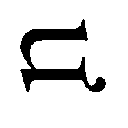cヌオック」という固有語、すなわち各民族が元より持っている語がある。だが現在、それらの国で「国」という漢字を「ナラ」とか「ヌオック」と訓読みすることはない。かつて漢字文化圏の各国で行われていた訓読みも、それぞれの国で公認された表記体系の中では、日本でしか行われていないのである。
漢民族の言語（中国語）のうちで日本に伝わった語（漢語）を記すために漢字を用いるということは、外国から借用した語を同じく借用した文字で書くことであり、それは本来的な行為ということができる。だが、固有語である和語までも、万葉仮名という方法によって借用してきた文字を用いて書いたり（この方法は中国などにあった）、さらに、訓読みという方法で漢字に対応させるという行為は本来的な行為とは言えない。しかし、これが結果的に、漢字を日本語の中に血肉化させることにつながった。
呪符と見なされていた漢字
「漢委奴国王」（西暦五七年）の金印をはじめとする貨幣、鏡、刀剣の銘文など、日本列島から出土したり伝存する様々なものに、漢字が使われた痕跡が残っている。しかし、日本列島に住む人々は当初、漢字を文字としては認識していなかった可能性が指摘されている。文字を持たなかった当時の日本人には、漢字は呪符と見なされ、意味は理解されずにその形だけが写されていたようである。
弥生時代末から古墳時代にかけての土器のかけらに、「山」や「虫」などとも読める筆跡が近年次々と見付かった。しかし、これらが漢字を書いたものだとしても、「サン」や「チュウ」（ないし、まむしの意味で「キ」）というように音読みをしていたのかどうかは、これらの漢字一字だけで前後に何も書かれておらず、文脈がとれないため分からない。ましてや、和語で「やま」や「むし」などと読んでいたのかも定かではない。言霊思想が当時の日本に既に存在していたのならば、どのような語でも形にして残す漢字は、その思想とは性質を異にし、相容れないものと、当時の人々には感じられたことかもしれない。
訓読みの定着
ところが時代が下り、古墳時代から推古朝時代にかけて、漢字を、ことばを表記する文字として十分に認識できる人たちが現れ始めた。たとえば、『宋書』倭国伝に引く倭王「武」の上表文（四七八年）には、東の「毛人」という表現が見られる。これは、毛深い人を指したとも言われ、読みは「モウジン」「えみし・えびす」ないし「けひと」などと解されている。
また、金石文には、日本語が漢字だけで記された史料も出土している。五〇三年ないし四四三年に製造されたとも言われる和歌山県の「隅田八幡神社人物画像鏡」には、たとえば「意柴沙加宮」という文字が記されており、「おしさかのみや」と読まれている。「おしさか」には万葉仮名のように一字一音で漢字が当てられているが、「宮」は「みや」という和語を表す漢字として記された可能性がある。同じく、「隅田八幡神社人物画像鏡」には、「費直」という文字も見られ、これは二字で「あたひ」と読む姓だとも考えられている。
これに加え、熊本県の江田船山古墳から出土した鉄剣や埼玉県の稲荷山古墳から出土した鉄剣の銘文にも、「大王」という二文字が見られ、これは「おお（ほ）きみ」と読むのではないかと考えられている。後者には「斯鬼宮」（斯鬼は「しき」）の文字もあり、やはり「みや」という読みが推定される。
さらに、島根県の岡田山１号墳から出土された鉄刀の銀象嵌の銘文からは、「各田了臣」という文字が見付かっている。この四字は「額田部臣」つまり「ぬかたべのおみ」と読まれており、六世紀半ば頃には、日本列島で確実に訓読みが用いられていたことがうかがわれるのである。
推古一五年（六〇七）ないしそれ以降の「法隆寺金堂薬師如来像」には、「薬師像作」と記されている。漢文の文法に従うならば「作薬師像」となるところだが、ここでは漢字が、「やくし（の）ぞうをつくる」と日本語の語順に沿って配列されているのである。ここから、朝鮮の「誓記体」（第八章参照）のごとく、漢字が固有語（ここでは和語）で訓読みされていたことがうかがえる。
また、同じく「法隆寺金堂薬師如来像」にある「誓願賜」の場合、読み方は「誓願し賜ひ」、「誓ひ願ひ賜ひ（しく）」のいずれであっても、この「賜」の使い方を見ると、日本語の敬語を日本語の語順のとおりに並べたものであることが分かる。これは、朝鮮での漢字使用の影響を受けた可能性があるにしても、中国語ではなく日本語としての漢字の使い方であり、そこには訓読みの存在していたことが確かめられるであろう。
さらにいくつか例を挙げると、「天寿国曼荼羅繡帳」（五九三～六二八）にも「椋部」、「山上碑」（六八一）にも「黒売刀自」などといった、訓読みの使用がうかがわれる部分がある。
早くに百済などからやってきたとされる王仁などの渡来人たちの末裔は、「文首」、「文直」といった姓を持ち、さらに古代朝廷の書記官である「史部」となった。彼らの記す漢文には中国の漢文とは異なった漢字の用法が現れ、こうした書法は「史部流」と呼ばれて、和化漢文、変体漢文へと連なっていく。なお、漢文の訓読方法を発明したのは吉備真備だとする説があったが、カタカナについての彼の発明説と同じく、後世の仮託に過ぎない。
『古事記』には、奈良時代初期の訓読みの位置付けが記されている。太安万侶による序文には、「漢字で文章を記す際に、音を用いて書けば長くなり、訓（ここでは字義という意味）を用いて書けば思ったことが書けない」という苦悩が吐露されている。そして本文では、「高天原」に関して「天を訓じて阿麻と云ふ」と安万侶自らが注記するように（阿麻は「あま」という発音を示す）、訓読みも駆使して古代の神話と歴史が書かれている（「天」と「あま」との間で意味の重なる部分が見出され、「そら」は別の字が訓を担うこととなる）。「日下」については、「基づいた本にあるままに記した」と『古事記』の中で明記されていて、古くから存在する熟字訓（二字以上の漢字がまとまって一つの読みを持つもの）であったことがうかがえる。
さらに、『万葉集』に至っては、歌を記すための種々の方式の中で、多数の訓読みが使用されている。そこに収められた柿本人麻呂らによる奈良朝以前の古歌には、訓読みが既に見られ、また万葉仮名の中にも訓読みが活用されている。しかも、「なつかし（懐かし）」という和語を二字で「夏樫」と、訓読みの発音を利用して記すことさえも行われており、この時点で訓読みが、応用を加えられるほどに定着を見ていたことがうかがえる。
平仮名と片仮名の誕生
こうした字訓つまり特定の字に結びついた訓読みの発音だけを借りた表記には、助詞の「かも」に「鴨」を当てるような訓仮名（訓の発音を利用した万葉仮名）と考えられるケースも見られる。同じく『万葉集』に現れる「かも」に対する「青頭鶏」は、より遊戯的、技巧的な気分から生じた表記と考えられる。これは、時代は下って江戸時代に戯書（ざれがき）と呼ばれるようになるレトリックである。戯書には、「少熱」（少し熱い）、「牛鳴」（牛の鳴き声）、「山上復有山」（山が二つで「出」）といったものもある。（参照元へ戻る）
こうした万葉仮名の中から、一字で一音節を表すものが、字画が少ないなどの理由で選ばれて種類が次第に固定化していく。そしてその崩し方・省き方と、文字を使う人々の社会の違いによって、平仮名と片仮名とが生まれた。「安」の崩し字や「阿」の「阝（こざとへん）」から、それぞれ「あ」と「ア」、「以」の崩し字や「伊」の人偏から、それぞれ「い」と「イ」、というように音読みを元にする仮名が大半を占める。しかし、中には、「Ａ者Ｂ」の構文で「ＡはＢ」と訓読することから生じた「」（「は」の変体仮名とされる）など、字の訓読みに基づいて生じた仮名もある。こうしたものは奈良時代以前から現れている。現在でも「江 エ」「千 チ」「三 ミ」「女 メ」「井 ヰ」や「女 め」などが残っている。
漢字から表音文字を生み出し、発展させていくこうした動きと並行して、漢字を日本語表記に応用する試みも続けられていく。『今昔物語集』では、本文を記す際に、漢字表記が思い付かない語などであった場合、そこを空白にしておくケースもあったが、そこで思い切って新たな用法を与えた漢字を入れてみたり、新たな字を造って埋めたりするというようなこともなされた可能性がある。ともあれ、日本人は、訓読みを獲得することによって、日本語を漢字を交えて表記する今日の方法を確立してきたのである。
なお、漢文を訓読する際には読み下し（訓み下し）がなされるが、そこでは漢字に音読みと訓読みが共存する。たとえば、「処処啼鳥を聞く」（孟浩然「春暁」）の「聞く」は訓読みによるものだが、「処処」「啼鳥」は音読みである。今日でも、「於新宿御苑」「至新橋駅」「含交通費」といった、漢文に由来する表記が残っている。これらの読みは個々人にゆだねられているが、日本人の間で意味が共通に理解される表記である。
言語は一般に、使われていくうちに、様々な変化を起こす。それは、先に少し触れたように、発音が変化するだけでなく、意味もまた移ろうものである。この意味の変遷が、訓読みを厚みと幅のある豊かなものにしていったということもできる。
それぞれの漢字には、大もととなる字義（漢字の意味）、つまり「本義」があったと考えられる。たとえば、「道」という字は、「しんにょう」に「首」を合わせたものだが、漢文学者の白川静氏ほかによれば、これは、戦いで刈り取った異民族の首によって清められた道、と考えられるのだそうだ。
しかし、時代が下るにつれて、字義も変わっていく。その際、本義が失われることもあれば、派生つまり枝分かれをして本義とともに併存することもある。こうして「一字多義」の状況が起こったのである。
たとえば前者の例を挙げると、「形而上学」「学而」などの「而」は、元はヒゲの象形文字であった、と解される。しかし、古代中国では、それと、「......して」「しかるに」という接続詞的な言葉とが同音であったため、「而」がその仮借つまり当て字として使われるようになり、本来の字源に合った本義（ヒゲ）は廃れていったということになる。
また、「我」も一人称「われ」という字義は仮借義（図表参照）である。この字は、のこぎりの象形文字で、すなわち、のこぎりが本義であり、同音語で代名詞「ガ」というような発音の古代中国語にそれを当てて用いた。そして、その後「我」に「のこぎり」の意味は失われたのである。これと違って、枝分かれした両方が残る例としては、「金」という字がある。元々の金や金属の意がお金の意を派生させ、それら両方の意味が今も共存している。この類は枚挙に暇がない。
さらに漢字は、中国の永い歴史の中で、時代ごとの思想を表す術語としても使われたことから、個々の漢字の字義に種々の哲学性が付与されるようになった。たとえば、周代（紀元前一一〇〇頃～紀元前二五六）以降に生まれた儒教や道教、諸子百家の思想はもちろんのこと、漢代（前二〇二～後二二一）にインドから伝わった仏教までもが漢訳を通じて、既存の漢字の字義に深い影響を及ぼした。
「空」（むなしい→不変の実体はないという原理）、「悟」（理解する→仏教の真理にめざめる）などが、その例である。儒教も宋学に至って、「理」や「気」という字に新たな抽象的な意味を与え、またキリスト教の場合も中国や日本に伝わってから、その訳語として、たとえば「愛」には「神の恵み」といった意味が加わったのである。
日本語と中国語は、本来、系統を異にする、全く異質の言語であるため、漢字の字義と和語の語義とが必ずしも一対一で対応するとは限らなかった。そのため日本での漢字の字義には、日本において和語と結びつくことで独特の変化を遂げるものが現れたのである。
たとえば、「つめる」という日本語には、「場所に押しつめる」「問いつめる」など広い意味がある。そのうちの「問いつめる」の「つめる」に、中国語の「詰問」の「詰」が相当することなどからこの字が当てられ、習慣化した訓読みつまり定訓、裏返して漢字のほうから言えば訓漢字と呼ばれるような存在となる。
しかし、和語の「つめる」には、「江戸詰め」「会社に詰める」というように「当直する」というような用法もある。そのために、それらの意味においても、「詰」で書き表すようになった。そうした現象から生じた日本独自の字義を「国訓」と呼ぶ（次項で詳しく述べる）。中国では問い「つめる」ことと、あるところに仕事で「つめる」ことは、全く異なる語で表されてきたため、そのような字義の変化は中国の人からは異様に映るのである。
別の例を挙げよう。日本語の「すなわち（すなはち）」には、「則ち」のほかに「即ち」「乃ち」などの漢字表記がある。これらは、字義を解しつつその語順を日本語に近づけながら漢文を読み下す、つまり訓読する際に生じた訓読みである。しかし、中国の人にとっては、「即」（すぐさま）と「乃」（そこでやっと）とは全く異なる語であり、意味も相当違っている。それを日本人は、双方に同じ「すなわち」という語を訓読みとして当てはめて、「同訓異字」としてしまった。その結果、読み下し文を耳で聞いただけでは、その本当の意味の差を区別することができなくなったのである。
また、一つの和語に対して二字以上の漢字を要したり（すめらぎ＝天皇）、逆に漢字一字に複数の和語からなる訓読みを要すること（承る＝うけ・たまわ〈は〉る）も避けられなかった。
このようなもろもろの条件が重なることで、日本における漢字の字義は多彩なものとなり、ことに日本での訓読みはいっそう多様なものとなっていったのである。
国訓の誕生
中国から伝わった漢字の音読み、つまり漢字音（字音）は、日本語の音韻に一定の影響を及ぼす一方で、漢字が伝わった早い段階から、本来の発音が日本語として自然に感じられる音へと変化していった、と考えられる。字の意味（字義）や熟語などの文字列に関しても同様であり、こうした日本化の現象の背景には、日本語を表記するために漢字を自在に使おうとする姿勢の高まりをうかがうこともできよう。そのような状況の中で、〝中国製漢字〟の持つ字義を、日本で引伸（引き伸ばし）し、派生させたり転化させて用いた、いわゆる国訓が現れる。これは日本製の字義と言える。
たとえば、漢字の「首」を、首長や姓の一つを意味する名詞「おびと」に当てる用法は、六六八年の「銅製船氏王後墓誌」に見える。中国・朝鮮では、「首」には「おびと」に該当する字義が存在せず、日本において当時からこの訓で読まれていたとすると、日本における意味や用法の転化、ないし「首長、首領」という熟語を略した用法だと考えられる。そうなると、国訓の早期の例となる。かりに「シュ」のような字音で読まれていたのだとしても、このように日本で独自に与えられた字義そのものは、やはり国訓と呼ぶことができる。
徳島市国府町の観音寺遺跡からは、「椿 ツ婆木」などと記された木簡が出土している。七世紀末頃のものと考えられているこの木簡は、漢字に読みなどの説明を加えているために、「音義木簡」と呼ばれる。中国では霊木など特殊な木しか指さなかった「椿」に、日本では「春」に花咲く「木」であるとして「つばき」という全く別の意味の訓を与えたのである。先の「銅製船氏王後墓誌」と同様に、国訓を記した古い例として貴重である。
国字の誕生
少し時代が下ると、和語を表すために、このように既存の漢字を当てはめるのではなく、日本独自の新たな漢字、すなわち「国字」が造り出されるようになる。たとえば、国字の「鰯」は、奈良時代の『古事記』『日本書紀』『万葉集』『古風土記』などの文献には現れない。しかし、同じ時期の木簡や正倉院文書には複数用いられている。
これは藤原宮時代（六九四～七一〇）の木簡では、「伊和志」などの万葉仮名で記されていたものである。その後、漢字による表記法が表音から表意・表語へと転換し、奈良時代に編纂されたと考えられる漢字の辞書『楊氏漢語抄』や『新撰字鏡』所引『小学篇』には、すでに訓読みを伴って「鰯」の字が収められていた。そのことは、平安時代の辞書などの記述から分かる。
『万葉集』には、「馬声蜂音石花蜘蟵荒鹿」と漢字を連ねて、「いぶせくもあるか」（息が詰まりそうだ）と読ませる有名な戯訓、つまり遊戯的な意図によると推測される訓読みがある。この中の「蟵」という漢字は、中国の字書（漢字の形に着目してたくさんの漢字を配列した辞書）に見られないために、国字と解されることがあった。しかし、実際には中国の古い仏典に使用例が確認され、紛れもない〝中国産〟の漢字であることが分かった。「蛛」の旁が「厨」と交替したものである。ここから上代（奈良時代）には、儒書、道書だけでなく仏書までもが、字書を介さずとも、日本人の用いる漢字に影響を直接与えていたことがうかがえる。
形声文字を好む中国、会意文字を好む日本
中国では、六書（象形・指事・会意・形声・転注・仮借）（上表）と呼ばれる造字方法（後二者は運用方法）のうち、漢語の発音を旁によって表す形声の方法が九割近くを占めるに至った。このように形声文字が量産された理由は、部首を付加する構造とすることで漢字の用途が細分化されるだけではなく、漢字に対して字音の表示を求める中国の人の意識が形声の方法を好むことにつながったためであった。

朝鮮やベトナムでも、かつて漢字を用いて漢語以外の語を表記しようとした際、ことに造字に至る際には、やはり形声文字を重視する傾向があった。というのも、これらの国は、地理的に中国と陸続きであり、また政治的に冊封体制下にあったり、律令のほか科挙が永年実施されたりするなど、日本とは比べものにならないほど中国からの強い影響を受けていたためである。
また、こうした地政学的な理由などに加え、言語自体にも原因が求められる。つまり、これらの国における固有語の音節の構造が、漢語のそれと比較的多くの共通性を有していたことも見逃せない。この点は、中国南部の広西などで使われている壮族のチワン語・チワン文字も同様である。
それに対して日本では、漢語とは音節に類似性の少ない固有語を、字訓として漢字に積極的に当てて行こうとする意識が醸成され、その結果、漢字に対して音よりも字義を重んじるようになった。たとえば、形声文字の「涙」に比べて会意文字の「泪」のほうにより情緒を感じて好んで用い、さらに、形声文字「鷸」（イツ しぎ）よりも田にいる鳥だから「鴫」（しぎ）のほうが相応しいと感じるというように、国字として会意文字をみずから造り出していったのである。
訓読みと対にして扱われるのが音読みである。訓読みの位置づけを理解するために、これについて見ておこう。
日本語の中で用いられる漢字には、たとえば「行」であれば、「い‐く」「おこな‐う」といった訓読みの他に、「コウ」「ギョウ」などの音読みがある。そのうち、「行為」の「行（コウ・カウ）」は、漢音といって中国の唐代の長安（現在の西安）から遣唐使などによって日本に伝えられた発音が、さらに日本風に変化したものである。また「修行」の「行」（ギョウ・ギヤウ）は、呉音と呼ばれるもので、中国の南方の「呉」地方辺りから、唐以前の時代に伝来していたと言われる発音が、日本語式に転化したものであり、仏教語に比較的多く残っている。そして、「行灯」の「行」も音読みであるが、これは宋から清代にかけて、禅僧や商人が伝えた南方の杭州や寧波を中心とする発音が同じく日本語風に転化したもので、唐音と呼ばれるものである（宋音をそこから分けることもある）。ほかにも、伝えられた時代が呉音よりもさらにさかのぼる古音（古代の金石文などに見られる「止」はその例で、「とめる」の「と」は訓読みで別）がある。また、旁から音が類推されるなどした結果、日本で独自に生じた慣用音などもあるが、いずれも、中国で用いられていた漢字の発音が、その根幹にあることに間違いはない。
中国語の中での漢字は、言うまでもなく音読みだけの世界である。とは言っても、その中身を細かく見ていくと、話はそう単純ではない。たとえば北京語でも、口語となると漢字表記の定まっていない単語が存在するほどで、各地の方言となれば、その傾向がいっそう甚だしい。歴史的には、文言つまり書き言葉とともに口語は俗語、白話などと称されつつ共存し、発音の近似する漢字を当て字することなどによって次第に漢字表記を獲得しながら、現代中国語の表記を定着させたのである。
例を挙げると、中国語で最もよく使用される字は、日本語の助詞「の」にほぼ相当する「的」（de ダ）だが、これ自体が実は口語つまり口頭でのみ用いられた俗語に対する当て字だったもので、より古い当て字「底」などに取って代わったものである。さらに言うと、もともと「あきらか」という意だった「的」を「まと」の意に用いたことさえ、「まと」を表す中国語と「あきらか」を表す中国語との間で発音が近似することに基づく当て字によるものであった。なお「的」は、本来は部首も「白」ではなく「日」（）だった。このように中国では、実は音読みの一致や相似によって、漢字の意味するものが別の漢字に取って代わられることが稀ではなかったのである。
日本における漢語は、亜「ア」、白「ハク」、小「ショウ」など、一拍か二拍と拍数が短い（ャュョの拗音を含む）。また、二拍目に来る音は、会「カイ（クワイ）」、口「コウ」、急「キュウ（キフ）」、吉「キチ」「キツ」、金「キン」などのように「イ」「ウ（フ）」「キ」「ク」「チ」「ツ」「ン」といった限られたものしかないなど、発音の種類が一定であり、概して硬質な感じが漂う。そうしたことから、日本では古くから現在に至るまで、文章中で力強さを表現しようとする際に、あえて漢語を用いることさえある。
それに対して日本の生活の中で育まれてきた和語は、ややもすると冗長な響きを持つ。しかしその反面、そこに優美さ、柔和さが意識されることがあるようだ。こうした漢語と和語の雰囲気の違いは、漢字とひらがなというそれぞれの文字の形態にも表れているのであろう。
たとえば、「春夏秋冬」の場合、「シュンカシュウトウ」と音読みするのと「はる・なつ・あき・ふゆ」と訓読みするのでは、一語か四語かというだけでなく、ニュアンスが明らかに異なる。
文章に「一月末」と書かれている場合、「イチガツマツ」なのか「イチガツすえ」なのか、振り仮名がないと、判断しにくい。どちらも同じ意味なのだが、両者では語感が微妙に異なるのも事実である。実際に「草木」を「ソウモク」と読むか「くさき」と読むか、あるいは「食物」か「食べ物」か、など、受け手に与える語感によって使い分けがなされることがある。たとえば、「国境」は「コッキョウ」と「くにざかい」とで、意味に重なる部分が実際にはあるのだが、川端康成の『雪国』の冒頭については、朗読などを行う際にその差が実際以上に強く意識されることもある（一般的には「くにざかい」説が力を得ている）。
こうした語感と深く関わる意識やイメージの差には、子音や母音などによる音の響きや拍数といったリズムのほか、語や形態素（言語の、意味を持つ最小の単位）として認識できるか、日常的な場面でどの程度使うかといったことなども関わっているものと思われる。
また、語義の凝縮力という側面において、和語は漢語に及ばないところがある。たとえば実存主義の「実存」という漢語（日本製）を和語で言い換えるとしたらどんな言葉になるか。これに即答することはなかなか難しい。
その一方で、漢語でも凝縮の仕方や程度によって、かえって意味が分かりにくくなることもある。たとえば、修辞法（レトリック）で、比喩を大別すると「暗喩」（隠喩）と「直喩」があるが、この二語のいずれが「如し」「ようだ」などの表現を伴うものか、字面からすぐに思い付くだろうか。また、これは野球用語だが、アウトの種類には「刺殺」と「補殺」とがある。しかし、個々の漢字から両者の意味を考えても語義は誤解されやすい。「補殺」は、誤って「捕殺」と書いても発音は全く同じで、また目で見ても差が小さく似ているうえに、語義も通りそうなので混同されやすいのである。
日本における漢語は、先に述べたように凝縮力の一面として拍数が短く、音連続のパターンが一定である。音節数が一音節か二音節で、二音節目にはごく限られた音しか来ない。中国語自体は子音、母音などの発音が豊富であったが（ほかに声調・アクセントもある）、日本語に入る際に本来、音の種類が少ない和語の発音の制約を受けたこともあり、単純な構造となった。そのため、同音語が生じやすく、「コウ」「ショウ」と読む漢字やそれらが組み合わさった熟語はおびただしい数となる。たとえば、「コウショウ」という漢語ならば、「交渉」「考証」「校章」「高尚」「公称」「厚相」「口承」など、いくつでも思い付くであろう。
「ソウゾウリョク」（「想像力」と「創造力」）や「カガク」（「科学」と「化学」）などは、現在、前後の文脈がある程度分からなければ混同されやすい。それを防ぐため、たとえば「化学」は一字目を訓読みにして「ばけガク」と湯桶読み（「時計」の表記を参照）を行う工夫も定着している。同様に、「市立」と「私立」は、それぞれ「いちリツ」「わたくしリツ」と読まれる場合が多い。訓読みが同音語の識別に寄与している一例である。
「啓蒙」という語がある。日本人は、しばしばそれを動詞に言い換えて「蒙を啓く」と「啓」を訓読みにした表現を使う。そうすると、「蒙」の字義が分からなくても、「蒙」が「啓く」の対象となる語で、また「無知蒙昧」という四字熟語の一部でもあることから、「蒙」自体の訓としては一般に定着していないが、「くらい」という意味らしい、「啓発」と言い換えたほうが良い場合もあるなどと意識する機会が持てる。これも、訓読みの効用と言えなくもない。中国から来た留学生に尋ねてみると、中国語では「啓蒙」（qi3meng2 チーモン）を一語として意識しているケースがほとんどのようであり、彼らの中には「啓」と「蒙」とを、ともに良い意味だと理解している者が複数いた。「蒙古」という中国語由来の漢字表記をモンゴル人が嫌がるということも、一般にはなかなか理解されないようだ。
欧米では、専門家が使う専門語は、ラテン語だけでなくギリシャ語由来のものが多く、ふだん使われている言葉との間には大きな隔たりがある。そのため、一般の人には意味が分からないものとなっている、とよく言われる。
一方、日本では、専門用語には漢語が目立ち、やはり耳慣れない、見慣れないものであれば、敬遠されがちである。しかし、そうした専門用語であっても、日本人であれば、それを構成する漢字から、ある程度、意味の類推ができることがある。
たとえば、「真円錐眼」（eucone eye）は、「円錐」が「円く、錐のようにとがった形」だからそのような形の眼（目）なのか、また、「鞭毛」（flagellum）は、「鞭」のような状態の「毛」なのか、などと想像のとっかかりが付く。「縮瞳」（miosis）も「ひとみをちぢませる」ことか、となる。
こういった点から、漢字の意味、特に訓読みというものが、専門用語と日常語との橋渡し的な役割を果たしているという見方もなされる。
外来語も訓読みになる
日本語で訓読みと言うと、固有語すなわち和語を指すことが原則である。しかし、稀に漢語、さらには外来語までが訓読みの中に含まれるケースもある。そういう例をここで見ておこう。
たとえば、「僧」を「法師」の音読みから「ホフシ」のように読ませることが古くから行われた。これも、日本で漢字を意味に応じて独自に読むという点から見れば、定着度や認識度の上で問題はあるが、方法としては訓読みと言えないこともない。
敷物の「茣蓙」は、高貴な人の席である「御座」が時代を経て転じた語である。「蓙」は国字でありながら、「ザ」という音読みを持っている。「ござ」を「蓙」の一字で表すことがあるが、そうなると「ござ」は漢和辞典などでは一般に訓読み扱いとなる。
また、「卍」を「まんじ」と訓読みするのも「万（萬）字」という音読みに由来する。つまり、「まんじ」という語は語種（出自）としては漢語だが、その読みは「卍」という字の持つ字音とは言いがたい。山田孝雄博士によれば、「羆」という字を「ひぐま」と読むのは、古代に日本で「羆」という字を分解して「四」と「熊」とに見立てて、それぞれの音読みと訓読みとを合わせて「しくま（しぐま）」となり（この発音の記録は平安朝に見られる）、さらにその「し」が後に「ひ」へと転化したものである。これは、混種語ということになる。混種語は、このように漢語（中国語）と和語（日本語）など出自が異なる語同士が合わさって一語となったものを言う。（参照元へ戻る）
一方、「菊」は、「キク」ないし「クク」のような字音とともに、菊の花自体が奈良時代までに日本に伝来した外来種であり、和語はなかった。古書に見られる「かわ（は）らよもぎ・かわ（は）らおはぎ」という和名は後に生じたものとされる。「キク」は、花そのものが身近なこともあって、訓読みのように意識されがちであるが、音読みなのである。「胃」（ヰ）も、胃腸をまとめた語（「くそぶくろ」など）は別として、その臓器そのものと一対一で対応する和語がなかったようで、字音が単語として定着した。
このような字音のうちで、日本において漢字音の規則性から大きく逸脱する変化を見たものは字訓（訓読み）と扱われるようになる。たとえば、「馬」は「ムマ」（mma）、「梅」は「ムメ」（mme）のような字音として中国から流入したが、次第に「うま」「うめ」と発音が転化し、訓読みとして意識されるようになった。同様に、「鬼」も「隠」の字音が転化して「おに」となり、完全に訓読みとして扱われている。「ぜに」も「銭」の変化した語、「えにし」は「縁」が日本語の中で「えに」となり、そこに強調する語「し」が加えられたものである。ちなみに、「文」の「ふみ」も「文」の字音「ブン」、「紙」の「かみ」も、文字を書き記した木簡・竹簡の「簡」の字音「カン」に由来するなどとも言われているが、これらの判定には種々の困難が伴う。
訓読みが音読みに、音読みが訓読みに
このように、漢字の中には、音読みと訓読みが判然としなかったり、また時代によって両者が交ざり合ったものもある。ここからはそういう漢字の例をさらに挙げてみたい。
肖像画の中の聖徳太子が手に持つ「笏」は、北海道の「支笏湖」の場合と同様に、音読みが「コツ」であるが、「骨」と同音になるということで「シャク」と言い換えられてきた（日本では古くからその板の長さが一尺ほどであったところからとされる）。この類は「故実読み」と呼ばれ、公家や仏家などに伝わった慣習である。
また、「枠」という字は、かつての「当用漢字表」（一九四六～八一）には入っていなかったが、「常用漢字表」（一九八一～）で追加されたものである（明治期までは、木枠そのものを指し、「予算枠」、「出場枠」といった抽象的な意味を持つことはなかった）。「常用漢字表」では、「枠」の読みは「わく」と、ひらがな表記で示されており、訓読みとして処理されている。ただ、この語源は「篗」（「籰」とも）という「いとわく」を意味する字の音読み「ワク」であった。字体は、「椊」（ソツ ほぞ）の略と考えられるが、一般に国字とされている。
「漁師」のケース（第八章を参照）では、「漁」の「リョウ」は「常用漢字表」で字音扱いとされており、「枠」のケースとは扱いに差が生じている。
また、「匹」は、「常用漢字表」では「ヒツ」が字音、「ひき」が字訓とされている。「当用漢字音訓表」が一九七二年に改訂（翌年に内閣告示・訓令）された際に、「匹」の「ヒキ」、「州」の「ス」、「奥」の「オク」が音読みから訓読みへと変更されたのである。「ヒキ」は、「ヒツ」から慣用的に派生した字音という可能性もあるが、和語「引き」から来たなど諸説があり、訓読みとされた。「いっぴき にひき さんびき」と「ｐ」「ｈ」「ｂ」と発音が変化するのは、他の「本」などの助数詞と同様である。「州」（洲）の「す」は字音「シュウ（シウ）」から来たとも考えられており、慣用音とする見方もある。ただ、「博士」から転じたことが明らかな「はかせ」のようなケースと違って、明確化しがたい。
「死」は音「シ」と訓「し（ぬ）」が一致し、「差」は音「サ」と訓「さ（す）」、「架」は音「カ」と訓「か（ける）」が一致するが、この類は偶然や当て字によるものと考えられる。「放」も訓「ほうる」と音「ホウ」とが偶然重なるが、和語「はふる」と漢語「ハウ」とで語源を異にする。（参照元へ戻る）
繰り返しになるが、中国語と日本語は、言語学上の一つの分類である語族が全く異なるとされ、文法、発音、語彙などあらゆる点で異質の言語であった。それでも、このような暗合は生じうるのである。漢語の「由縁」と和語の「所以」なども同様である（音訓の交替を参照）。
調度類を整えることを意味する「しつらい」は、字音で「室礼」ともっともらしく書かれることが今なおインテリアの広告などで見られるが、これは当て字であり、「設い」と書かれる和語であった。
消えた和語
「肉」は、音読みである「ニク」が現在ふつうに使われているが、これは、実はもともとの和語である「しし」を駆逐したものである。「いのしし」も、元は「猪のしし（肉）」という意味であった。今では、「しし」は「宍戸」、「宍道湖」など固有名詞の中で化石のように残るだけである。「肉」と「宍」とは全く違う漢字のように思えるが、元を辿れば、「肉」を書きやすくするために六朝時代（三～六世紀）の人々が変形させたものが「宍」であった。古代の日本では、当時の中国のそうした風潮に従い、「肉」よりも「宍」を用いたため、古語の「しし」に一時期流行した俗字「宍」が定着を見たのである。
消えた和語について他の例を挙げると、古くは「脳」には「なづき」（なずき）、「地震」には「なゐ（ない）」（のちに「なゑ」とも）、「暗礁」には「いくり」という和語があった。しかし、今では東北地方や九州といった日本列島の周辺部などで方言や固有名詞に残る程度となっている。
和語か漢語か外来語か
日常生活で漢字を全く使わなくなって久しいベトナムの人は、ベトナム語の単語が固有語なのか漢語なのかを、おおむね判断できるのだという。一方、漢字を用い続けている日本人の間では一般に、ある漢字の読みというものが果たして音なのか訓なのか、という意識は概して乏しい。われわれの言語活動に漢字がそれほど深く浸透しているということなのだろう。「市」の「いち」は、「灰」の「はい」は、「奥」の「おく」は、さらに「舌」の「タン」は、と訊かれて、すべてを即答できる人はそう多くはないだろう。
「タバコ」には、「煙草」という熟字訓を持つ熟語や「莨」という国訓を持つ漢字、さらに「」という国字もあるが、「タバコ」の語はポルトガルから伝わった外来語である。日本人は、こうした外来の言葉（漢語を含め）と和語とをいわば習合させたのである。雨の日に着る「カッパ」の「合羽」はやはりポルトガル語、「ガラス」の「硝子」はオランダ語への当て字である（「御転婆」は、オランダ語起源だという説もあるなど、語種の確定には困難を伴うことがある）。
「缶」は、常用漢字表では「罐」の新字体として字音と見るが、英語「can」との関連も指摘され、「缶」は「can」の当て字だという説もある。しかし当て字であれば、常用漢字には採用されないのが原則であった。「颱風」（台風）という表記は清代から見られるが、英語の「typhoon」などとの関連はまだ十分には解明されておらず、それらの先後関係も追い続ける必要がある。
漢語の中にも、さかのぼれば「鉢」「塔」（古代インドの梵語〈サンスクリット語〉）や「葡萄」「琵琶」（ともに中国西域の言語）など、中国語にとっての外来語に由来するものがある。また、「餃子」「炒飯」（第四章を参照）など、比較的新しく生まれた語もある。和語にも「瓦」「寺」といった梵語や朝鮮語などが起源だと考えられるものがあり、源を辿れば言語の系統論にも関わり、どこまでを日本固有の語と区別すべきか、また確定できるものはどれかなど、難しい問題に突き当たる。
そこまでの詳細は別としても、そうした事象に関わる日本人の意識の柔軟さや希薄さによって、いわゆる「重箱読み」や「湯桶読み」が盛んに行われてきたとも言える。造語の際だけでなく、文章を読む際にも見られる。たとえば、「矛盾」を「ほこトン」と読んだ議員が明治期にいたと言う。今でも子供などの名付けにおいて、「結衣」で「ゆイ」、「海翔」で「カイと」と読ませるような訓読みと音読みとが入り混じった、一見、万葉仮名風の名前が多く現れるのも、そのことと関わっている部分があるのだろうか。
コンクリートは一字で「」
「俱楽部」や「檸檬」のように、漢字一字ずつの音読みを利用して外来語に当てることを「音訳」という。音訳は、訓読みとは関連がなさそうだが、実際には、日本では訓読みの習慣があるために、それを背景として生み出されたり、また受容されたりしたものが少なくない。
たとえば、梶井基次郎の小説のタイトルに用いられたことでも有名な「檸檬」。これは、漢語としては「ドウモウ（ボウ）」「ネイモウ」という字音である。中国の南方で、中国語にとって外来語である「lemon」の元になった語に対して施したという経緯を持つ、音訳字と考えられる。「檸」は、古くは皮を酒に浸して薬とする木の名を表す漢字として、宋代の韻書、つまり漢字を発音（声調と韻）に着目して配列した辞書に現れており、実は「lemon」という外国語よりも古いようだ。また「檬」は、やはり宋代に黄槐（マンゴーか）として使われていた漢字であり、同様に「lemon」という語よりも古くからあった。この二字を組み合わせると、「lemon」の発音に近くなるとして、「檸檬」を当てたのは、清朝の中国（おそらく「ｎ」と「ｌ」とが交替する方言の地）でのことであった。たとえば、ウィリアムス（斯維爾士維廉士）著、衛三畏鑒定、柳沢信大校正訓点『英華字彙』（一八六九）一六一頁には、「Lemon, 檸檬」と現れている（「檸」の「心」の字体が「必」となっている）。
この中国語による音訳「檸檬」が日本に入ってくる際に、日本人は、「レモン」という外来語の日本的な読みを、その二字に直接当てはめたのである。「檸」が「レ」、「檬」が「モン」に対応するわけだが、いずれもそれぞれの漢字の慣用的な字音（慣用音）と見なされているわけではない。訓読みや熟字訓という手法が既に日本に根付いていたために、初めて可能となる当て字であった。中国語（北京語を基盤とする標準的な普通話〈pu3tong1hua4 プートンホア〉）では、「檸檬」を一字ずつ「ning2meng2 ニン・モン」と読んで使っている。
また、明治期の日本で、英語の「クラブ」を漢字で表記するに当たっては、そのことばの意味に、俱に楽しむ部という意味を見出して、「俱楽部」と当てた。これも「檸檬」と同様に一字ごとの字音とは必ずしも対応していない。ちなみに中国でも、「俱楽部」と表記して「ju4le4bu4ジュー・ラー・ブー」という読みで使われている。明治期の日本では、少し変えて「苦楽部」とも書いていた。
もう一つ例を挙げてみよう。「コンクリート」を漢字で表記すると「混凝土」となるが、ここには「混ぜて凝りかたまる土」という意味が掛けられている。これは、訓読み「凝（こり）」が含まれることから明白なように、日本人が考え出したものである。中国では、それを受け入れて、つまり漢字の文字列を逆輸入して、「hun4ning2tu3 フン・ニン・トゥー」と発音している。また、中国では、「人工石」を組み合わせて「」という字を造り、旁が「仝」（「同」〈ドウ・おなじ〉の異体字）であるところから、その字音で「tong2 トン」と発音することもある。このように中国では、日本と違い、漢字には当然のことながら字音しか現れないのが原則なのである。
国名・地名の訓読み
国名においては、日中の間で音訳の果たす機能の差はさらに顕著である。たとえば、日本人が「仏蘭西」（佛蘭西）を「フランス」と、字音にとらわれることなく読めるのも、やはり訓読みがある日本語だからこそである。これは、清代に、まず広東語によってなされた音訳であったと推測されている。「仏＝ほとけ」という字が使われているのは、意味からではなく、「ｆ」に近い発音のものが選ばれたゆえである。「仏蘭西」は、北京語で発音すれば「fo2lan2xi1 フォー・ラン・シー」と漢字音に忠実なものとなり、フランス語や英語の原音からやや離れている。
韓国でもフランスのことを「佛蘭西」と表記したが、発音は「 プル・ラン・ソ」で、あくまでも漢字一字ごとの音読みである。これに対して、日本では「南仏」とか「仏語」と略して言うことはあっても、「仏蘭西」の三字を一字ずつ「フツ・ラン・セイ」と言うことは決してない。
フランスの表記についてさらに話を進めると、韓国では、欧米系の外来語として入ってきた「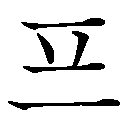 プランス」（外来語の「ｆ」は「ｐ」の有気音で採り入れる）が、「 プル・ラン・ソ」を駆逐しつつある。中国では、後に現れた「法蘭西」という音訳を定着させたのだが、やはり一字ごとの漢字音によって「fa3lan2xi1 ファー・ラン・シー」としか読めない。そして略して「法（国）」となる。ベトナムでは、中国から「法蘭西」という漢字を借りていたので、「ファプ・ラン・タイ」（pháp lan tây）となり、略して「ファプ」となっていて、そこにも中国の漢字の影が色濃く見てとれるのである。
日本では、近年、フランス料理店などの看板に、筆字の書体で「仏蘭西料理屋」と書かれてあるのをよく見かける。当用漢字の制度などによって当て字が排除されてから半世紀以上が経過しているにもかかわらず、このように、いまだに「仏蘭西」の表記が広く使われている。いったいなぜだろうか。
もちろん、普通のフランス人たちが漢字を使いこなしていたという歴史もなければ、フランス自身が「仏蘭西」と表記することを主張した事実もない。それでもこのように旧表記が日本に残るという現象は、実は蕎麦屋の暖簾にある擬古的な変体仮名による表記を見れば、あるいは勘亭流で書かれた土産物屋の看板を見れば、その店が古い伝統を保持する老舗らしい、という意識を抱いてしまうことと同根ではなかろうか。これは、表記というものが雰囲気作りに役立っている一例なのである。
ところで、「欧羅巴（歐邏巴）」は、ギリシャ語起源のラテン語「Eurōpa エウローパ」かそれに基づく語に対する中国での音訳であった。日本では、この三字を「オウ・ラ・ハ」と分けずに、まとめて「ヨーロッパ」と読む。一方、中国では、これを一字ごとに字音で「ou1luo2ba1 オウ・ルオ・バー」と読み、韓国でも同様に一字ずつ「 ク・ラ・パ」と読んだ。「クラパ」は、「ヨーロッパ」や英語の「ユアラップ」［júərəp］などから発音がだいぶ離れており、「ヨーロッパ」のことをなぜそう呼ぶのかがもはや不明であろう。
ク・ラ・パ」と読んだ。「クラパ」は、「ヨーロッパ」や英語の「ユアラップ」［júərəp］などから発音がだいぶ離れており、「ヨーロッパ」のことをなぜそう呼ぶのかがもはや不明であろう。
さらにいくつか例を挙げてみる。日本語ではロシアの「ニコライエフスク港」のことを、その頭音を取って「尼港」と称するのと同様に、アメリカ西海岸の「サンフランシスコ」を「桑港」と書くことがある（後者は、現在の中国では「旧金山」を用いる）。これを発音する場合、ソウコウよりも、二字まとめて「サンフランシスコ」と読むことが多いが、これは音訳に基づく熟字訓と言える。
映画の都「ハリウッド」を「聖林」と表記するのも、「桑港」と同様に熟字訓によるものである。これは、「hollywood」の「holly」（ヒイラギの意）を「holy」つまり「聖なる」と誤解したことから生じた表記と言われているが、ヒイラギ自体に聖なる物を見出していた可能性もある。いずれにしても、これは音訳ではなく意訳で、やはり訓読みの存在する日本だからこそ、それを「ハリウッド」と英語風に読むことができるのである。よく当て字として例に出される「剣橋」（ケンブリッジ）や「牛津」（オックスフォード）も同様である。
漢語と和語は、何度も述べてきたとおり、出自、由来を全く異にするものであるが、同義語や類義語同士で発音がたまたま一致することが稀に起こる（「死」「架」などについては「訓読みが音読みに、音読みが訓読みに」を参照）。漢文訓読で生じた「故になり」が「ゆゑ（え）んなり」となり、さらに「なり」が取れて「ゆゑ（え）ん」（所以）へと変化した。「所以」と、漢語の「由」と「縁」が組み合わさった「由縁」とは、ともに「ゆえ」という意味を持つ別の語として、国語辞書にも並んでいる。（参照元へ戻る）
また、「可愛い」は、「かは（わ）ゆし」が変化したもので、実は「かほはゆし」の転化とも言われる。つまり、「顔がほてる」「はずかしい」という意味から「愛すべきだ」と言う意味に変わったもののようだが、これがたまたま、「愛すべし・かわいらしい」の意を持つ古来の漢語「可愛」と発音まで類似していたのである。
「貝」は、歴史的仮名遣いが「かひ」であり、卵を意味する「かひこ」（第五章を参照）の「かひ」と同じであった。「ひ」は上代（奈良時代）には「pi」という発音であったため、「貝」も「かぴ」という発音であった。それが次第に「かふぃ」、さらに単語の中のハ行音がワ行音に変わる「ハ行転呼音」と呼ばれる現象を経て、現代の「かい」へとなったのである。
この「貝」に関していうと、「ギョカイ（ルイ）」には、「魚貝（類）」と「魚介（類）」という表記があり、ともに同一のものを指している。「介」は「介鱗」の語があるように「よろい・甲羅」の意であるが、「魚介」では、「介」が「貝」の意で用いられている。江戸時代から「貝」の語源は「介」と見る研究者もいたほどであり、かつては貝の名前に「笋介」と「介」を使う人や専門書もあった。「魚貝」という語は、「貝」と「介」の両字が混淆した結果生じたのである。
また「介」は、人名の場合、「龍之介」のように「すけ」と読まれるが、人名に使われる「介」と、「介助」や「介護」で使われる「介」とを、字体を分けて覚えている人がときどきいる。どういうことかというと、どちらか一方の「人」の部分を、「分」の字のように「八」と書いているのである。これは、訓読みの「すけ」と音読みの「カイ」とを別々の機会に覚えたために、何かのきっかけで、別々の字の差異を示す部分、つまり専門用語で示差（しさ・じさ）特徴と呼ばれるものが心の中に生じてしまった結果だと考えられる。
東京大学は略すと「東大」、京都大学は同様に「京大」となる。ところが早稲田大学は「早大」となり、「わせだ」という熟字訓を含む訓読みが「ソウ」という音読みに変化する。同じように新潟大学も「新大」となる。このように、使う漢字は同じでも、略した際に訓読みと音読みとが入れ替わることは、そう珍しいことではない。ほかに、訓読みが別の訓読みとなるケースもあり、たとえば「為替」という熟字訓を略語に使う場合、外国為替は「外為」と、「ため」という単字の訓が現れる。
音訓がことばに作用する例は、こうした略語に限ったことではない。そんな例をここに挙げてみよう。栃木県の日光国立公園にある男体山のことを別名で「二荒山」と言うが、もともとは「補陀洛山」とも言われていた。
観音菩薩の住む浄土が「ポータラカ（Potalaka サンスクリット語）山」にあるとして信仰されたことから、それに漢字を当てたのが「補陀落」である（「普陀落」「補堕落」とも漢訳された）。やがて「補陀洛」が「ふたら」と発音が変わり、「二荒」と漢字で書かれ、この「二荒」が音読みされて「ニコウ」となり、それに佳字すなわち良い意味の漢字が当てられて「日光」となった、と言われている。
この説が正しければ、梵語、音訳、訓読みによる当て字を経て、音読み化、音読みによる当て字に至る、という日本ならではの展開が繰り返されたことになる。しかし、それでも終わりにならない。江戸時代の漢学者が、さらに「日光」を一字に詰めて「晃」と表現した。つまり、「晃山」と中国風に二字として「コウザン」と読ませているのだ。最初のポータラカ山から数えると、これで六転を経たことになる。ちなみに、チベットの宮殿「ポタラ宮」は、中国語では「布郁（達）拉」と音訳され、現地ではチベット文字でも記されるものであるが、これは、この「日光」・「晃山」と同源ということになる。
日本語では、このように音訓の交替によって、漢字が変転を見ることはそう稀なことではない。人の名前の例もひとつ挙げておこう。伊藤博文の幼名は、「利助」（利介、利輔）である。これが「としすけ」とも読まれたことから、同訓で「俊輔」と書かれた。かつて名前などの漢字で、読めない場合などに漢文の素養に基づいて、音読みするという習慣があった。そうして、「俊輔」が「シュンすけ」と音読みされたところから、同音で「春輔」と書かれるようになり、それを音読みすると「シュンポ」となるため、ついには「春畝」と号したとのことである。ちなみにこの改名は、維新時に多くの変名を利用した高杉晋作のアドバイスによるものだったとも言われる。このように、自分の名前に幾通りもの書き換えと音読みが存在することで、箔がつくような感じもしたのであろう。
「とき」というものを定義するのは難しい。実際に存在していることは疑いのない事実なのだが、概念自体が明確化しがたい。それでも、皆ふつうに使っている単語である。
これには「時」という漢字が当てられ、漢語ではその長さと瞬間を、各々「時間」と「時刻」として区別することがある。また、それらを示す機械は「とけい」と呼ばれ、「時計」と記される。「常用漢字表」では付表に示され、熟字訓のたぐいとして扱われている。
この「時計」という漢字表記を学校で習ったときに、どこか違和感を抱いた記憶はないだろうか。「時」は「とき」、「計」は「ケイ」、合わせて「ときを計（はかる・ケイ）」から「とけい」。しかし、ここでは「とき」が「と」になるのである。
これは、訓読みと音読みとが連なるもので、いわゆる湯桶読みに相当する。また、「時（とき）」が「と」だけを表すと見れば、部分的に訓読みが用いられていると言える。さらに漢語の熟語であれば、通常、他動詞と目的語が連なる場合には目的語が後ろに来る、つまり「計時」となるのが原則であるはずだ。そのような語の構成上の疑問も浮上する。（参照元へ戻る）
実は、この「時計」という表記は、漢字の意味と発音をもとにして日本で生み出された当て字であった。中国では、『周礼』の昔に「土圭」（ドケイ・トケイ）が使われることがあった。これは、太陽の影を計る玉器で、日時計のようなものであった。日本では、それとは別に室町時代末期に「ときはかり」という語も生まれており、それらを下敷きして「時計」という表記が編み出された可能性がある。
この「時計」という当て字は、元禄期前後の西鶴作品にも見られるように、江戸時代に生じたものである。同じ頃、「図景」「斗鶏」（この「鶏」は「雞」とも書く）、さかのぼって中世には「斗景」という当て字もあった。「斗」という字は「計」と崩し字がたまたま類似していたことに加えて、意味からも通用が起こっていたものである。
幕末・明治初期の頃には、漢語が流行して、「とけい」を熟字訓として「時器」「自鳴鐘」（写真を参照）「時辰儀」「時辰表」など中国で現れた語を転用した表記もしばしば用いられた。
江戸時代に見られる「日土圭」は、本来の機能に沿った表記であり、「砂土圭」はその応用的な表記であるが、「土」を用いた字面にはもの自体の雰囲気がよく出ている。現代では、時刻を自動修正してくれる電波時計まで実用化されているが、子供の頃、小学校に設けられていた日時計は、季節ごとの誤差と日々の天候に左右され、頼りないながらも、太陽の影で日中のおおまかな時刻を知らせてくれた。天体の運行を実感できる時計であった。
中国では「鐘」
時計について話を他の漢字圏まで進めよう。韓国では、時計を「 シギェ」という。韓国の人々の中には、日本語を習う過程で「時計」という漢字を学んで初めて、「シギェ」が「時計」の漢字音からきていることを知る者もいる。元々は日本で生まれた熟語「時計」を輸入し、それ以来使用してきたのだが、時を経てその字音とハングル表記が優勢となったのである。ほかに韓国で、目覚まし時計は「自鳴鐘」（ チャミョンジョン）、また掛け時計・柱時計は「掛鐘」（ クェージョン）と、中国語から入ってきた語が使われていた。漢語であるために、日本人にはやや生硬な表現と、感じられるであろう。ちなみに韓国では漢語を読む場合、日本語の訓読みに相当するものは存在しないために漢語を「漢字語」と称する。
シギェ」という。韓国の人々の中には、日本語を習う過程で「時計」という漢字を学んで初めて、「シギェ」が「時計」の漢字音からきていることを知る者もいる。元々は日本で生まれた熟語「時計」を輸入し、それ以来使用してきたのだが、時を経てその字音とハングル表記が優勢となったのである。ほかに韓国で、目覚まし時計は「自鳴鐘」（ チャミョンジョン）、また掛け時計・柱時計は「掛鐘」（ クェージョン）と、中国語から入ってきた語が使われていた。漢語であるために、日本人にはやや生硬な表現と、感じられるであろう。ちなみに韓国では漢語を読む場合、日本語の訓読みに相当するものは存在しないために漢語を「漢字語」と称する。
現代の中国語では、「時計」をそのまま「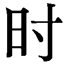」として「shi2ji4シージー」と読むことも小説などでなくはないが、一般的には「鐘」（ジョン 簡体字は夷）を用いる。音を発して時刻を告げる機械時計には、やはり「自鳴鐘」（zi4ming2zhong1 ズーミンジョン）が使われていた（今では目覚し時計は、（鬧鐘） nao4zhong1）。明代にマテオ・リッチがヨーロッパからもたらした実際に鐘の音が鳴る時計に因むもので、明代には「時辰鐘」とも呼ばれた。古くは楽器を意味した「鐘」が、このように単語を組み合わせた複合語としての段階を経て、再び一字の語となり、時計を表す語として残ったのである。日本では寺院などで時刻などを知らせる「かね」を訓読みとする字として定着しているのも奇遇だ。
また、現代中国語では、腕時計のような小さい時計は「表」（biao3 ビアオ）と言う。日時計を意味した「標」に通じることによるもののようだが、日本人にとっては「ヒョウ」「おもて」の読みを持つこの字から、腕時計を連想するのは難しいだろう。この字に金偏を付して、時計という意味を明確化した造字は清代から見られ、今でも香港、台湾などでは「鐘錶」（zhong1biao3 ジョンビアオ）「手錶」（shou3biao3 ショウビアオ）などと使われている。

最後に、インドシナ半島東部で使われているベトナム語では、時計のことを「ng hドンホー」という。「儒者の字」を意味する字儒（ch nho チューニョー）すなわち漢字では、「銅壺」と書かれたものである。中国では、先に引いた『周礼』の昔から、水を用いた「刻漏」という時計も使われており、唐代以降それを「銅壺」と呼ぶようになった。それが、この南の国へと伝わったものであろう。腕時計でも、置き時計でも、掛け時計でも、修飾語は付くものの、皆ひっくるめて「ドンホー」と、ベトナム式の音読みで呼んでいるのである。
このように「時計」というありふれた一語をとって、漢字圏全体を眺めてみても、日本の訓読みというものがいかに独特な文化であるのかがうかがえるであろう。
ひらがなは「女文字」、漢字は「男文字」
清少納言の随筆『枕草子』には、「見るにことなる事なきもの、文字に書きてことごとしき」、つまり、見た目には特別なことがなくて文字に書いて大げさなもの、という段がある。そこに出ている例で言うと、たとえば「いちご」の場合、（「苺」（莓）と書くとそうでもないのだが）中国から伝わっていた漢字表記によって「覆盆子」と書けば、確かに実物よりも文字のほうがたいそうな感じがする。例として並べられている「くるみ」も「胡桃」、「水ふふき」（水ふぶき・水ぶき：スイレン科のオニバス）も「芡」といった漢字表記が想定されていたのであろう。『枕草子』のこの段は、表記の醸し出す雰囲気というものに関する古人の意識の表れとして、数少ない言及といえる。
同じく『枕草子』では、タデ科の「いたどり」について、「虎」の「杖」と書くが、「つゑなくともありぬべき顔つきを」（虎は、杖がなくてもよさそうな顔つきなのに）と評している。なお、律令制の大学で文章を修めた長である「文章博士」をも、その「ことごとしき」つまり大げさな表記の中にさりげなく含ませているのは、清少納言一流の皮肉であろう。
清少納言に対しては、ライバルであった紫式部が『紫式部日記』の中で激しく批判を加えている。「真名（真字）」つまり漢字を、「書きちらしてはべるほども」、よく見ればひどく足りない点がたくさんある、と評しているのだ。
紫式部自身は、漢籍（中国の書物）の難字はおろか、「一」という簡単な漢字さえも人前で書いてみせることはしない、と日記に述べている。平安時代には、漢字、特に漢籍に由来する漢字は、男性が用いるものと意識されていたのである。そのため、紀貫之がひらがなで『土佐日記』を記すに当たっては、自分を女性と称することが必要とされた。
ひらがなは、その育成者である女性だけの「女文字」（女手）、漢字は漢籍や仏典を学ぶ男性だけの「男文字」（男手）、こうした意識の壁によって、二つの文字にしばらくの間、性差が維持された。このように文字やことばに、集団や場面によって差（変異）が生じることを「位相」と呼ぶ。日本の文字の多様性は、システムとしての複雑さと、多様な位相とが複合していることにもよるのである。
「喫驚」
江戸、明治の頃から、小説などでは、「びっくり」に「恟（り）」などの一字のほか、「喫驚」の二字を当てることがある。
この「喫驚」という表記もどこか大げさに感じられないだろうか。「びっくり」という単語は、奈良、平安朝の文学には決して出てこない。濁音で始まり、促音も含まれるという比較的新しい和語であり、一六世紀になって初めて文献に登場する。元より口語であったのであろう。和語は日本の固有語とはいうものの、このように新しく生まれることもあったのである。
「喫驚」は、「吃驚」とも書き、明代の『水滸伝』、清代の『紅楼夢』など、中国の通俗小説の中で現れた語であり、当時の中国語としてもやはり口語的な存在であったようだ。それらの本の中で用いられていた語彙や漢字表記は、滝沢馬琴の読本など日本の近世文学に、内容面はもちろんのこと語彙や文字の面でも多大な影響を及ぼした。そういう中で、和語でも口語的な語「びっくり」と「喫驚」とが結びつけられたのである。俗語同士で相性がよかったのであろうが、次第に「喫驚」は、中国の口語としてのニュアンスが日本人の間で薄れていき、何か大げさな漢字表記だ、と感じられるようになったのである。
「もぐら」を「土竜」と書くのは、子供にも大げさに感じられるようだ。「こどもの詩」（二〇〇七・六・八『読売新聞』）に、「なぜ 土竜は土竜と読むのかな？／ミミズや幼虫を食べているのに／体にあった 名前がいいな」とある。このように熟字訓は、個々の字の意味が複合することで、一字ごとの意味よりも大げさなものを指したり、その逆に矮小になったりするものである。
語感と漢字の不適合は、時に私たちを内省に誘う。たとえば「かかし」を「案山子」と書くことを知ったときのように、耳で聞いていただけの言葉が、突然それまでとは違った趣で心に響くようになった、という経験はないだろうか。こうした漢字の並びは、私たちに言語外の何かを考えさせる力まで持っているのではなかろうか。
日本では、行政上の単位として、都道府県の下に郡市区町村がある。都・道・府・県と郡・市・区はいずれも音読みの漢語、言い換えると字音語だけである。一方、町・村は、地方自治体ごとに「チョウ」「ソン」と音読みされたり、「まち」「むら」と訓読みされたりと、一定していない。新聞によっては、たとえば「千葉県鋸南町」の「町」には読みを入れないことがある一方で、沖縄の「座間味村」「読谷村」の「村」には「そん」と読みを入れることもあるというように、表記に揺れが見られる。
国内各地の地名に激変をもたらした「平成の大合併」により、一九九九年三月末に三二三二を数えた市町村は、二〇〇六年三月末には一八二一にまで減少した。これに伴い、「村」という単位も激減した。平成の大合併が一段落したその時点で、都道府県単位で「町・村」の決められた読み方を計測すると、次のような地図ができる。厳密には、個別に読みを覚える必要があることは言うまでもないが、これで大体の傾向がうかがえよう（次図参照）。
これを見ると、関西や九州地方など、地理的に中国大陸に比較的近い地域に字音語の使用が目立つことがうかがえ（鹿児島の「村」の読みは両者同数）、そうした地の中では、町役場や村役場のことを「チョウやくば・ソンやくば」と言う表現まで聞かれることがある。
また、「町」に関して言うと、市町村以下の小地名表記に「町」を用い、これを「チョウ」と発音する際には、仙台市の「中島丁」のように「丁」と書くという工夫も一部の地域でなされている。なお、「町」は「畔」と同じく、「田」偏と音読みを表す旁の部分（声符・音符と呼ぶ）からなる字だが、「丁」はバランスの関係からか「」ではなく、「町」のように小さく書かれることが多い。
日本人の名前の中には、苗字研究家の丹羽基二氏によれば、「斎藤」と書いて「なかじま」と読ませるような、漢字と読みとに関連性を見出しがたいものがあるという。名簿類の作成ミスによるものでないとすれば、戸籍には原則として読みを振らないために、このようなことが起こる可能性はある。「東海林」で「しょうじ」と読む例なども、比較的よくあるため見慣れていて、さほど不思議に感じないだけのことである。
地名にもまた、他の地の人にとっては難読とされるものが、列島の各地にきわめて多く見られる。その一つである「一口」は、京都と東京の二都にあったが、東京の市ヶ谷では「ひとくち」と読みが変わってしまった。都下の檜原村の「人里」も難解な地名で、古人が何らかの意味を込めたものに違いないが、由来は諸説唱えられているものの杳として知れない。
北海道では江戸時代の頃から、「知床」で「しれとこ」、「新冠」で「にいかっぷ」など、アイヌ語地名に対して漢字を当ててきたために、珍しいものが豊富にあるが、沖縄にも不思議と感じられるものが少なくない。「城」を「ぐすく」というのは琉球方言によるもので古くからあり（次の写真）、かつては姓にも多く見られた。それが、「き（ぎ）」「しろ」「ジョウ」などと、次第に本土風の読みに変えられてきた。
慶良間諸島の阿嘉島にある「北浜」ビーチは、ダイバーの間ではよく知られている。「北」と書いて「にし」と読ませるのは、南極・北極の方向を南北とする自然方位ではなく、土地の風習に従ったいわゆる民俗方位によるものと考えられる。
「山女」を一字で表した「」
山に咲くアケビの実の姿を「山の女」に喩え、「山女」の二字を当てて「あけび」という熟字訓として読ませたのは、古代の日本人のおおらかさによるものであった。なお、「山女」は「ヤマメ」という魚にも当てられるが、表記が一致するのは偶然の結果にすぎない。
「山女」は、古くは平安時代の『和名類聚抄』だけでなく、『新撰字鏡』が引く「小学篇」に見られるところから、奈良朝には起こっていた表記法だと考えられる。後者には、「」という造字、つまり国字もアケビとして収められている。「開」には女陰という意味が、少なくとも平安初期にはあった。中国では、かねてより「門」の字に「陰部」という意味が生じていたことから、その影響を受けたものであろう（ちなみに中国では、「山女」の二字は、文字通りただ「山の女」という意味で使われていた）。
やがて「山女」を、さらに一字にまとめることが起こる。これは、一つの言葉を一つの漢字で書こうという昔の日本人の欲求によるもので、合字と呼ばれる方法である。「山女」が「」と縦に詰まることは中世より起こり、滋賀県ではそれが「原」という小さな地名に使用されたのである。
この「」は通常の活字にない。そこで、戦後、地名を一覧するために国土地理協会で編纂された資料では、印刷された別の活字を切り貼りすることで「」を作字した。ところが、それを印刷したところ、字の上下の間に影が生じ、それを見た人が「妛」という字と勘違いしてしまった。そのために、その形でＪＩＳ第２水準に採用されてしまったのである。これが「妛」というパソコンなどに入っている「文字」の正体であり、幽霊文字とでも呼ぶべきものであった（この詳細は、前著に記した）。
中国製漢字と日本製漢字の衝突
こうした幽霊文字は、実は漢字を転記する作業が行われる際に、多かれ少なかれ、必ずと言っていいほど発生するものである。活字を手で写す場合に限らず、崩し字を楷書に直す際に、間違って架空の字体を造りだして翻刻することも稀ではない。また、手書きの楷書を楷書で写す場合にも生じる。それは、私たちの日常の文字生活においてもありがちなことだが、何もそうした私的な場面に限って起こることではない。実は、漢字の権威とされてきた『康煕字典』や『大漢和辞典』にも、そうした文字はさりげなく収められていたのである。
「番」という字は、漢代の『説文解字』で示されて以来の伝統的な解説によれば、古くは獣の足をかたどった象形文字で「」のように書かれていた。これは後に「蹯」という形声文字、つまり意味を表す要素と発音を表す要素を組み合わせて造られた字になったとされ、二本の足が動くところから「順番」の意味が生じたという。ただし、字源というものは、常に諸説が存在するものである。「番」は種を持つ手の象形だとする説もあり、それが「順番」を表す「番」など手とは異なる意味に転用されたために、種を持つ手という本来の意味については、後に手偏を付して「播」という形声文字が造られたとも言われている。今でも使う「播種」の「播」である。
字源説の当否はいずれであっても、この「」という字が韻書に引用、転写されていく中で、劇的な変化が起こった。印刷を経るごとにこの字の線が次第に薄れていき、かすれてしまったのである。その結果、字体が完全に誤認をされてしまい、「籵」という字体にまで変化した（次の図）。つまり、「」は「番」の古字（古文とも呼ぶ）と辞書にあるのに対して、「籵」のほうにもそう記されているが、実際には古字と言うほど古い字体ではなかったのである。先の「妛」とは逆に、元々あった線が消滅してしまったものであった。
この「籵」という字は、漢字に興味を持つ方であれば、漢和辞典によって、これとは別に「デカメートル」という外来語を訓とする字だ、と認識されているであろう。「籵」は、「米」（メートルの音訳による）掛ける「十」（一〇すなわちデカ）という理屈で生み出された会意文字、すなわち意味を表す要素を複数組み合わせて造られた字の一種である。明治期の日本で、中央気象台が、「メートル」などと書いていては紙面でスペースがもったいないとして、数年にわたる苦心の末に造りだしたものであった。むろん、「デカメートル」は、「粁」や「糎」に比してよく使う単位ではないが、「米」に「十・百・千」「分・厘・毛」を体系的に組み合わせた結果として、取りあえず入れておいた、というものであったようだ。（参照元へもどる）
このように、中国で古代に生まれた象形文字に端を発する字と、日本で明治期に機械的に組み合わせて造られた会意文字とが、字体の上で合致（文字研究の方面では衝突と呼ばれる）するのであるから、漢字というものは単純に捉えることができない。漢和辞典では、「籵」はせいぜい、①「番」の古字、②［国訓］ デカメートル、などと併記されるだけだが、実際の漢字の歴史はこのように動きに満ちているのである。
なお、『古今韻会挙要』では、「籵」の字は和刻本、韓本とも同様にあやしく薄れた字形となっている。大もとの「」自体も、「」の形が次第に移り変わっていたのである。
このように書籍での歴史的な転載の経過を辿ることで、「籵」を「蹯」の古字とする辞書は、正されなければならないことが明らかであろう。同様に「籵」に対して、「蹯」から類推して単純に「（けものの）あしあと」「あしのうら」などの訓が漢和辞典などで示されるようなことは、今後とも起こってはならない。しかし、一〇〇年後辺りには、どうなっているのだろうか。
「未知」という語句を漢文の中で訓読する際には、「未」という漢字を「未だ知らず」と二度読む。この「未」のような文字を「再読文字」という。
このように二回も読まれる漢字に対して、訓読の際に一度も読みを与えられない漢字もある。「終焉」や「形而上学」などの熟語で使われる「焉」や「而」がその例である。これらは、中国語では接続や語調を整える役割を果たすものだが、日本で漢文を訓読する際には、これらに読みを与えないことがある。こうした文字を「置き字」という。ただし「而」には、前の字の送り仮名として、「（し）て」という読みが加えられる習わしもある。
読まない漢字は、「故実読み」と呼ばれる公家などの習慣的な読み方にも散見される。たとえば、古代の儀式の名である「視告朔」は「視」を飛ばして「コウサク」、「百人一首」は「一」を抜かして「ヒャクニンシュ」と読む。ほかに、「風邪」の「邪」（風と風邪を参照）、「二十歳」の「歳」なども、読まれない漢字と見なすことができるだろう。「開始まって」というルビ付きの表現なども、これと共通する部分がある。また、近年では、名前で「薫子」と書いて「かおる」と、「子」を飛ばして読むようなケースも現れている。
地名や姓などにも、読まない漢字が固定化した例が見られる。「和泉」は、「いずみ」と読むが、その読みなら「泉」だけでよさそうである。これは奈良時代に入る前後に、地名を中国めかして漢字二字とし、それも佳字、好字を用いよという詔勅が出されたことと関連する。「和泉」一帯を「泉州」と略して音読みすると、「和」は再び消える。こうした動きは、近年でも名前などにおいて見られる。最近、実際に「和泉」姓の方からうかがったのだが、その家ではずっと「わいずみ」という読みであったのだが、周りの人たちから「いずみ」としか読まれないために、正式に「いずみ」に変えたのだという。「和」を英語のスペルの「黙字」（後述）のようにみなす習慣が、地名や姓から広まった結果であろう。（参照元へ戻る）
これとは逆に、「和」は一字だけで「やまと」と読むことができるが、地名などでは、上に「大」をつけて「大和」とする。これには、次のような理由がある。
「やまと」は、奈良時代には、山の辺り、麓の近くを指す普通名詞でもあった。「山跡」とも書かれたが、「山の所（処）」ないし「山の本」の意味であったと考えられる。「邪馬臺（台）」（やまたい・やまと）との関連も説かれる。畿内の一国は、天理付近にあった郷名によるもので、「倭」「大倭」「大養徳」（地名の二文字化政策以前）などと書かれ、七五七年以降、「大和」と書くようになった。
中国では、少なくとも漢代より、『魏志』のいわゆる「倭人伝」でもよく知られているように日本のことを「倭」と記した。時には人偏を略して「委」としたと考えられている（「漢委奴国王」の金印に見える）。この「倭」という字には、従順だ、背が低いといった意味があることも影響したとも考えられているが、日本語としては同音となる「和」が日本では使われるようになっていくのである。そして、その大和（奈良）の地に都があったため、日本国の称として日出る国の意から生じた「日本」という文字列を「やまと」と読むことが、少なくとも奈良時代には起こった。「大和」「大倭」は「大日本」とともに、奈良、平安時代には「おほやまと」と読まれることもあった。
なお、表音文字でも「黙字」と呼ばれる、「読まれない漢字」と同様の現象がある。たとえばドイツ語で「Knecht」と書いて［knέçt］「クネヒト」のように発音するのに対して、英語では同源の語を「knight」を［náit］「ナイト」のように読む（ドイツ語では召使、英語では騎士などの意）。英語の綴りの不規則性は、世界の文字体系の中でも屈指のものであり、アルファベットは表音文字だが、綴りによっては音そのものではなく単語の一かたまりを表そうとする表語性を強めることがある。それは劇的な音韻変化や周辺諸国からの種々の影響など、数多くの要因が重なり合った結果である。
音読みの語である漢語に比べると、和語は音節が冗長に感じられることがないだろうか。たとえば一音節の「か」（蚊など）、二音節の「かき」（柿・垣・牡蠣など）などの和語は漢語と音節数は変わらないが、三音節以上になると、漢字一字の音読みは原則として存在しない。日本語では、和語は多音節のものがあり、（中国語では単音節であった）漢語よりも概して音節が長い。
「承る」「詔」「志」「政」のように、漢字一字で和語の五音節を訓読みとして持つものが、「常用漢字表」で認められている。やはり、こうしたものには違和感が生じるものなのか、たとえば街中の看板や貼り紙には、「うけたまわる」を「承賜わる」などと書いたものも見受けられる。ウェブ上には、「ご意見として承けたまわる。」「一括承け賜わることが出来ます。」といった、現代語で一語となっている「うけたまわる」を二語と捉えたかのような長い表記まで現れた。「承ける」という表記が存在していることも一因なのであろう。難訓と称される字のごとく読みの難しいものについては、人によってその範囲が様々である。
ちなみに、「みことのり」は、御言宣りの意である。「まつりごと」という訓は訓点資料などに見える。訓点とは、漢文を訓読する際に、本文に書き込んだ文字や記号のことを指す。訓点を記入することを加点、施点と言い、それが施された資料を訓点資料と言う。奈良朝から現れており、字訓に限らず、字音、清濁、アクセント、句読などが胡粉、朱墨、墨などのほか角筆で記されている。訓読の際には、和文では用いられなかった、訓点語と呼ばれる「曰く」「甚だ」「憤る」などの語が訓読みとして用いられた。（参照元へ戻る）
長い訓読みについては、「丞」や「庁（廳）」などもあったが、外来語を加えれば、「センチメートル」と読む「糎」のたぐいもある（参照）。その他、一万字程度を収める漢和辞典では本文や訓読みの索引に、より長いものも見うけられ、たとえば「鶯」などに付される「ちょうせんうぐいす」という「訓読み」は、「朝鮮」という字音まで包含する。
さらに『大漢和辞典』には、「字訓索引」に、驚くような長い「（字）訓」が載っている。その一つが、「」という漢字の、「くちのくろいうま」という読みである。もともとこの字は「シュ・チュ」という字音で、『玉篇』という字書に「馬口黒」と注記されているために、この「訓」が与えられた。これは、昔の中国に、「シュ」や「チュ」のように発音される複数の語の一つに、そのような意味を持たされた語があったということである。日本人が口の黒い馬を見て、この字をあてがったわけでは決してない。漢語では一語であったが、一語でそれに対応する和語がなかったというだけのことで、概念の設け方に、彼我で差があることの一例と捉えれば、さほど奇異なことではない。つまり、この索引の「訓」の中には、いわゆる訓読みとして実際に文章中で用いられて定着を見たものだけではなく、字義を解釈した文句までもが含まれているのである。
長い「訓」の例は他にもある。「」（フウ・ブ・フ）の「くろいくちびるのうし」は「くちのくろいうま」と同様である。「砉」の「ほねとかわとがはなれるおと」は「ケイ・キ・カク」という音を説明する文言である。これは、英和辞典で、「slip」に「すべってころぶ」、「dolphin」に「鼻先のとがったいるか」などの訳があるのと同様に、外国語に対する日本語訳、すなわち日本語による説明として、捉えることができる。
漢文の読み下し文においては、「寿」一字で「いのちながし」と読ませる慣例がある。この読みは、かつて国語辞典などに収められたこともあったが、『日本国語大辞典』や『広辞苑』などには項目が立てられていない。名詞「いのち」と形容詞「ながい」という二つの和語から成り立った珍しい訓読みとも言えそうである。
また、今日の短歌や俳句の作品には、「瞑る」「瞑りて」「瞑れば」など、「瞑」を「めつむ‐る」と読ませる例がある。これも、一語と認定する辞書は少ない。もし「め」「つむる」の二語と認定すれば、これは二語にまたがる訓読みを持つ漢字となる。「閑話休題」と書いて「それはさておき」などと連語で読むことは白話小説、つまり中国語の口語で書かれた小説の文章に由来するが、この四字に当てられた長い訓は、しばしば用いられて目立つものである。それとは違って、「瞑る」のほうは、注目されることがあまりないようだ。（参照元へ戻る）
数詞は倍数と子音が揃う
漢数字は、言うまでもなく漢字の一部であり、よってそれにも訓読みがある。「一二三四五六七八九十」の音読みは、「イチ・ニ・サン・シ・ゴ・ロク・シチ・ハチ・キュウ（ク）・ジュウ」である。そのうち一拍のものは、口語では「ニイ」「シイ」「ゴウ」「クウ」と長音化させて拍数を揃えることもある。関西弁では、一拍の語は長音化する傾向が強いが、この数詞に関しては東京などの言葉でも著しく、たとえば二・二六事件は「ニイ・ニイ・ロク・ジケン」と発音されることがある。
ほかに、「四」は「よん」、「七」は「なな」と訓読みすることがあるが、これは、音読みの「シ」「シチ」ではそれぞれやや発音がしづらいこと、「シチ」が「イチ」と混同されやすいなど他の数と聞き間違えやすいことが原因であろう。「シ」が「死」に通じるという忌避も一因と思われる。
「十・九・八・七......」と逆の順に数えていくとき、ほとんどの場合、七を「なな」、四を「よん」と読むのは、「ハチ」と「シチ」が続くと言いづらいためとも思われるが、個々の数字では、「なな」「よん」のほうが馴染みのある読みだからであるまいか。
和語では、「ひ（と） ふ（た） み よ い（つ） む なな や ここの とお」と言う（この「ひ」など一拍の語は、漢語の場合と同様に「ひい」などと長音化する）。しかし「はじめに」でも触れたが、「八つ」を「ハチつ」と読む小学生が最近増えているとも言われる。この場合、音読みのほうが日常語化していて、「ハチ」という音読みが「やっつ」という訓読みより身近なものとして頭に入っているためであろう。
この和語の数詞を、ローマ字で表記してみると思わぬことに気付く。「hi（奈良時代の発音ではpi） hu（pu） mi yo」まではそこに規則性は見出しがたいが、「mu」「ya」まで来ると、一「i」は二「u」、三「i」は六「u」、四「o」は八「a」と、つまりその数と倍数とで子音が揃っているのである。ローマ字で日本語を書く人でなければ、発見しにくい事象であろう。
ちなみに名字では、「一」と書いて「にのまえ」（「二の前」だから）、「九」と書いて「いちじく」（「一字で九〈く〉」だから）、「十」と書いて「つなし」（一つ、二つ......九つ、十で、「十」はつがない）といった読ませ方をするものまであるという。ただし、それらの一部については、実在することが確認できない、いわゆる幽霊名字ではないかとも言われる。
アラビア数字は代表的な表意文字
数を組み合わせて読む場合では、『万葉集』に、「八十一」で「くく」（九九）、「十六」で「しし」（四四）と読ませる例が見られるが、これは戯書である（第一章を参照）。しかし、現在でもたとえば西暦の「一九八〇」は、当然のように「センキュウヒャクハチジュウ」と読まれる。「千九百八十」が発音に対応した表記だが、読みとりやすさなどから、この「一九八〇」という表記も広く認められている。これは音読みだが、文字本来の読みではなく、別の字の読みとなっている点で、訓読みのような現象とみることもできよう。
ここに含まれる漢数字としての「〇」は、「零」と並行して「レイ」という音読みや「ゼロ」という外来語の訓読みを持つ。そして、「一〇」「一〇〇」「一〇〇〇」「一〇〇〇〇」と位が変わるごとに、それぞれ「ジュウ」「ヒャク」「（イッ）セン」「（イチ）マン」と読みを変えていく。これらは、主として「１、２、３、４、５......」などのアラビア数字（洋数字）から受け継いだ性質であり、語を表すよりも、意味や概念そのものを重点的に表そうとする性質が強い。数字こそが「表意文字」だと言われるゆえんがそこにある。
アラビア数字は、世界的に通用する数少ない文字であり、代表的な表意文字と言える。各国でそれぞれの言語によって発音されるが、意味は共通なのである。アラビア数字の本来の読み方が、仮にその発祥地のインドの言葉であるヒンディー語や、インドに始まった数字をヨーロッパへ伝える実質的役割を担ったアラビア半島のアラビア語であったとすれば、世界中の言語によって訓読みが行われていると見ることができよう。なお、アラビア数字はほぼ全世界で使われているが、アラビア文字使用圏では通常使われていない。アラビア数字は、ヨーロッパにおいて形がローマ字に合うように変えられたのだが、アラビア文字を使用する地域では変えられる前の字形を保持しているためである。
「廿」について
和語の「はたち」には、「二十歳」「二十」という表記が熟字訓として「常用漢字表」付表で認められている。認められているもの以外では、「二〇歳」も「はたち」と読むことができそうである。「20歳」でも問題ない、特に横書きならばむしろそうせざるをえないと考える人もいそうである。新聞紙面ではこの「20歳」という表記が増えてきたが、あえて読みは振られていない。二十日が「20日」となっているのも同様である。
「廿」（ジュウ・ニュウとも）は漢字で二十を意味する。「十」を二つ並べたものである。「廿」をその意味によって「にじゅう」と読ませることは、「ニ」（二）「ジュウ」（十）が音読みであるので、字音語起源の訓読みだと言える。また、たとえば地名などに見られる「廿日市」を「はつかいち」と読むのは分かりやすいが、名字に見られる「廿木」を「つづき」と読むことは理解しにくい。元々「つづ」で一〇の数を指し、さらに「つづ（や）はたち」で「一〇や二〇（後に一九や二〇）」を指すという表現があったのだが、繰り返し使われるうちに誤って、「つづ」で二〇という数や年齢を意味するようになったのだろう。
この「廿」を、大字で表すと、「念」となるものであった。大字とは、たとえば「一」を「壱」（壹）、「二」を「弐」（貳）、「三」を「参」（參）とするように、単純な形態の漢数字を表記する際に、字の混同や改竄を防ぐための代用漢字である。「念」となるのは音読みの仮借によるものだが、最近ではほとんど使われていない。
語呂合わせ
電話番号に見られる「4126」（よいふろ）などの語呂合わせは、親しみやすく覚えやすいという宣伝効果もあり廃れることがない。日本では、先に述べた通り、数字に訓読みが適用されることも一因となってこの種の語呂による覚え方が発達している。歴史の年号に読みをこじつけて、「いいくに（一一九二年）つくろう鎌倉幕府」などと覚えた人も多いだろう。
ＮＴＴのポケベルサービスは、二〇〇七年三月で終了したが、「4649（よろしく）」や「14106（あいしてる １をＩの形に見立てる）」など、数々のユニークな語呂合わせを生んだ。ポケベルやチャットなどでは、中国でも「我愛你」（I love youの意）に発音が近い「521」（それぞれの音読みが「wo3 ai4 ni3 ウォー・アイ・ニー」と「wu3er4 yi1ウー・アル・イー」とで、互いに似ている）、韓国でも同じ意味の「
 サランヘ」に「486」を用いることがあるそうだ（４の発音のほか、ハングルの画数によるという）。中国語圏では、「1688」（一路発発と発音が近い）など縁起のよい数字のナンバープレートが験担ぎで売買されることなどもあるが、やはり訓読みを持つ日本ほどバリエーションは多くない。
サランヘ」に「486」を用いることがあるそうだ（４の発音のほか、ハングルの画数によるという）。中国語圏では、「1688」（一路発発と発音が近い）など縁起のよい数字のナンバープレートが験担ぎで売買されることなどもあるが、やはり訓読みを持つ日本ほどバリエーションは多くない。
日本では、プリクラやウェブ上で「0201」と書くことが一部の女子中学生らの間ではやっている。これで「にこいち」と読み、二人で一つというところから、仲良くなる、という意味なのだという。コンピュータなどで１桁の数字の前に０を付して表示することの影響とみられる。最近の日本では、メールアドレスやインターネットのＵＲＬにまで、語呂合わせが引き継がれている。
英文訓読
現代の日本人は、外国語で書かれた文章を読解するときに、通常まずその外国語の発音に忠実に読もうとするであろう。それは、古くは漢文に対しても同様であった。当時の中国語での漢字の発音に従いながら、上から下へと一字ずつ、中国語の真似をして読んでいったと考えられ、今でもその方法は、仏教のお経の読み方として辛うじて残っている。ただ、その方法では日本人はなかなか意味をつかむことができないために、漢文に対して返り点などを書き込んで、訓読みを含めた訓読を行ったのである。
江戸期には、その技術を応用して、オランダ語や英語などの横書きの文に対しても、レ点や一・二点などを単語と単語の間などに加えながら読んで訳す「欧文訓読」「英文訓読」が行われることがあった。これは、蘭学者が始めたもので、英単語の「book」「dog」をそれぞれ「ほん」「いぬ」と日本語で直接読むこととなり、訓読みと類似性を持つ方法であり、明治期でも残っていた。しかし、そこでの英語と日本語の対応は、両言語の意味の一致する単語同士を重ねるというだけの、あくまでも臨時的な関係に過ぎない。今でも、英書の読解に際して、類似のことは一部で行われているのであろう。また、歌謡曲の歌詞などでも「love」に「アイ」（愛）、「heart」に「こころ」と振り仮名を当て、一つの作品内では英単語の綴りと日本語とに固定的な関係を持たせたものも現れている。
たいていの日本人は、「山」を「やま」と読み、「犬」を「いぬ」と読むことに何ら疑問を持たないでいる。しかし、この訓読みという行為は、実は相当驚くべきことを行っているのである。仮にアメリカ人が「山」という字を「mountain」、「犬」という字を「dog」と読み、反対に、「mountain」を「山」、「dog」を「犬」と書き、さらに「my dog」を「my 犬」などと表記していたら、かなりの違和感を禁じ得ないであろう。それと同等のことを古来、日本人は行い、定着させてきたのである。
「Ｗる」も訓読みの一種
ローマ字の読みにも「訓読み」に相当するような手法が見られ、以下に挙げるように様々なバリエーションがある。まず、「Ｇ」を「ジャイアンツ」や「巨人」、「Ｖ」を「優勝」、「Ｑ」を「クエスチョン」や「質問」、「Ｐ」を「駐車場」、「２Ｆ」を「２階」、「２Ｈ」を「２時間」などと読むのは（外来語や字音であるが）、略字表記（略記）の応用とも見なされよう。広告などで、「ＧＷ」を「ゴールデン・ウィーク」と読ませるのも同様である。
野球のスコアブックなどの記号から、「Ｓ」を「ストライク」、「Ｋ」を「三振」と読むのも、手法としては訓読みに類似するものである。「Ａ」を「エース」、あるいは「アンサー」とか「答え」と読むのも、出自はどうあれ同様の行為と言える。
「」を「エイチ・ツー・オウ」ではなく和語で直接「水」、「Ｎ」を「窒素」と読むたぐいは、元素記号や化学式を読む際によく行われている。
「重複する」という意味を表す場合、「ダブル」を動詞のように活用させて「ダブる」と表記することがある。これを「ダブリュー（ダブル・ユー）」の名を持つローマ字「Ｗ」を用いて「Ｗる」と表記する例はインターネットのブログなどに見られるが、見坊豪紀先生の採集によれば、戦前から見られたそうだ。ここでは、外来語による語幹部分が、ローマ字で漢字のように表意的に表記されている。
「Tel」を漢語で「電話」と読ませるのは、見た目におシャレな雰囲気が現れていると同時に、漢字の画数を省くことにもつながっている。これも一種の略記である。同様に「and」を「＆」と簡便に記したり、「BBQ」で「バーベキュー」とするのは、英語から入ってきた用法である。
「Xmas」は「キリスト」の「マス（祭日・ミサ）」という意味で、この「Ｘ」はキリストを表すギリシャ語「Xριστος」の頭文字を持ってきたものである。日本では、クリスマス商戦の時期が近づくと「mas」や、カナ交じりで「X'マス」などという表記がテレビ、雑誌や街中など至るところに現れる。台湾など東アジアの一部にもこうした表記が広がっている。現在、英語圏では基本的に「Christmas」と表記され、「Ｘ」を用いる時には「Xmas」、記号を加えたものでは「X-mas」が一般的だ。
しかし、日本では、「Xmas」には戦前から「」を加えたものが好まれ、使われ続けてきた。その表記は英語でもかつて行われたようだが、日本ではたとえば「can not」を「can't」と書く際の、音や表記上の省略を表す方法を応用したものとも意識されたのだろう。所有格の「」も意識に上ったのかもしれないが、そうしたことが日本人の中でしっくりきたために定着を見て、さらに台湾など東アジアの一部に拡散したのであろう。
クリスマスは、日本においては、概して宗教色が薄く、イベント色の強い行事となっている。そうであるから、ダッシュが付いているかのようなこのスペルが合っているとも感じられまいか。しかし、グローバル化の中で、日本国内では、アポストロフィーを付ける表記は間違っている、との規範意識が一部に生まれ、次第にアポストロフィーなしの現代の一般的な英語表記へ矯正されるようになってきたのである。
ここまで、主に日本における訓読みについて述べてきたが、実は、漢字を用いていない国々でも訓読みに近い現象が見られる。すでに記してきたとおり、表音文字のローマ字の場合、個々の字は原則として発音のみを表し、意味を持たない。しかし、ローマ字が組み合わさって単語が形作られ、綴りが一つの単位となって意味の塊ができる傾向がある。やがて、その綴りが表す発音とは別の語によって、その綴りが読まれる場合がある。
たとえば、英語の文章の中で、「etc.」を「et cetera（エトセトラ）」と読めば、ラテン語から入ってきた外来語を、「.」によって略記することでその後半部分まで表記したということになる。しかし、それを「and so on」などと読めば、同じ意味ながら異なる語で読んだこととなる。また、ギリシャ語起源を含む綴りからなる、先に触れた「Xmas」を「クリスマス」のように発音することは、「Dr.」を「ドクター」と読んだり、「メートル」を「m」と書くなど単位を略記したりすることに比べれば、綴り全体で特定の単語を表すというもので、訓読みにより近い性質を持つと言える。
島を意味する「island（アイランド）」の場合、本来の英語では発音にも綴りにも「ｓ」は存在しなかったのだが、一時期、ラテン語の「insula」など別の系統の語が、この英単語の語源であると勘違いされたために、「ｓ」が補われてしまった。しかし、発音はそのままであるから、いわゆる黙字となり、やはり訓読みに似た現象を呈するようになった。
数字でも同様のケースが見られる。たとえば、ローマ数字の「ⅲ」は、「スリー」や「サード」と読まれる。また、「1st」で「ファースト」、「2nd」で「セカンド」、「3rd」で「サード」などと読ませる場合、アラビア数字に「送り仮名」のようにつけられたローマ字によって、その読みを特定するという方法が採られている。日本語における音読みの「一」と訓読みを含む「一つ」の関係と対応するものとも言えよう。
ただしこれらは、用途が非常に限られており、日本語の体系的な訓読みとは比較にならないほど規模が小さい。ユダヤ人は旧約聖書を読む際などに、ヘブライ文字で書かれた神の名を発音することを避け、主を意味する「アドーナイ」などと読み替えるというが、やはりその言語において例外的な方法である。
訓読みを発明した楔形文字
古代にまでさかのぼってみれば、メソポタミアの地バビロニアでは、紀元前三二〇〇年頃に、シュメール人により世界で初めて文字が生み出された。それは、系統不明のシュメール語を粘土板に書き表すためのもので、絵文字の段階から発し、次第に単純化して楔形（くさびがた・せっけい）を呈したため、楔形文字と呼ばれている。
楔形文字は、言語を異にするセム語系のアッカド人、インド・ヨーロッパ語族のヒッタイト人、セム語系のアラム人などへと受け継がれる。その際に、既存の楔形文字を、それぞれの言語で読むという、訓読みに相当する行為が行われた。たとえば、楔形文字の「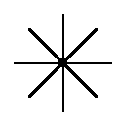」（）を、シュメール人は神を意味する「an アン」などと読んだ。しかし、アッカド人やヒッタイト人たちは、その字を「アン」という発音だけを表す表音文字として用いる一方で、またアッカド人たちは表語文字として使うときには神を意味する「il イル」などと読んだ。
このように楔形文字は、訓読みに相当する方法も発明し、それによってオリエントの様々な言語を表記した。しかし、紀元前後には誰も使うことのない死字と化し、人々の膨大な記録を伝える古代文字として名を残すにとどまった。
そのような楔形文字やエジプトのヒエログリフなどと比較すれば、漢字は姿と働きを変えながら、そして訓読みという方法を伝えつつ、今なお東アジアの地で使われ続けていることに、改めて驚異を感じざるをえない。
中国語に「ＰＣ机」（ji1 〈ピーシー〉ジー）という語があるそうだ。日本人であれば、「ＰＣ（パソコン）づくえ」と読み、パソコン作業用の机と解するであろうが、中国ではパソコンそのものを指す。
この「机」という字は、現代の中国では、「機」の簡体字となっている。これは「つくえ」を「桌子」（zhuo1zi ジュオズ）と書き、「つくえ」を表すのに「机」が使われなくなったことが要因である。つまり、その背景には「机」は中国語において用途の限られた字となっていたということがあった。そこに「機」の略字として適当なものはないか、と探したときに、発音が似ていて、木偏で簡易な形のこの字が見つかったわけである。
「机」は、古くはサルナシという木の名を表す字であったが、文献では『易経』、字書では一〇世紀の『龍龕手鏡』の昔から、「几」つまり小さい机に通じる用法が示されていた。そして、遅くとも元代にはすでに「機」の略字として使用されるようになっていた（『宋元以来俗字譜』）。
一方、現代の中国では「穀物」を「谷物」と書く。正規の出版物も、学校の教科書もそうなっている。これも、「機」が「机」になったのと同様に、画数を減らすために、漢字の音が同じ字を借りてきたものである。「たに」を意味する「谷」の場合は、中国でも使用頻度が激減していたわけではなかったが、簡易な形のほうに意味の共存を迫られたのである。
しかし、漢字に訓を持たせる日本では、こうしたことへの抵抗感はぬぐいがたいものがある。「稀代」を常用漢字に従って、「希代」と書き換えることは抵抗なくできる一方で、「稀」は「希」に換えたくない、というような意識が現れることがある。「扇動」と「煽る」の場合、それはより明確であろう。日本の「当用漢字表」や「常用漢字表」でも、「辯」「辨」「瓣」という三つの漢字が合流した「弁」や、「ウン」（香りの良い草）と「ゲイ」との合流した「芸」（ゲイ・ウン。ウンでは草冠を四画にして区別を示すことがある）などがある。ただし、「辯」や「藝」などのケースは訓読みとして頻繁に使われていたというわけではなかった点に注目すべきであろう。
「むしばむ」は「蝕（蝕）む」という漢字で書かれることが多い。あたかも、「蝕」という字を見た日本人が、この字を左側の「虫」と右側の「食（む）」とに分けて、「むしばむ」という和語を造り出したかのようである。つまり、「羆」（第二章参照）のように、字面を分解することによって生まれた訓読みであるかのように見える。
しかし、「むしばむ」という和語自体は、平安時代の『枕草子』や和歌に現れるのに対し、「むしばむ」に「蝕」を当てた表記、逆にいうと「蝕」を「むしばむ」と読ませることは中世に入るまで見られない。つまり、「蝕」という字の訓読みより、語の出現のほうが早いのである。「虫食む」という和語の造語法と「蝕」という漢字の構成要素とが、たまたま一致したもので、字面によって生じた訓ではないのであろう。後の江戸時代には、この字に「むしくい」という訓も当てがわれていた。
「月蝕」という漢語は、「当用漢字表」に「蝕」が採用されなかったために、同表にあって同音で類義の「食」で代用し、「月食」と書き換えられることになった。一方、「むしばむ」という和語のほうは、「食む」と書くようにはなっていない（第七章を参照）。
「かげ」は、「現代文明の光と影」などというように、光の対義語として暗いイメージを持たれがちだが、古代には明と暗の両方を指していた。つまり、「星影」のように輝く「ひかり」そのものと、それによって生じる「かげ」の部分の両方を指す語だったのだ。だから、たとえば早稲田大学の校歌の歌詞「やがても久遠の 理想の影は あまねく天下に 輝き布かん」の「影」については、作詞者の相馬御風自筆のものでもこの漢字である。これは三番に歌われる「集り散じて 人は変れど 仰ぐは同じき 理想の光」の「光」と同義と解しうる。ほかに、「光」と書いて「かげ」とルビを振ることも、短歌や俳句の作品などを中心になされている。
中国では、「景」（ケイ）は「ひかり」、「影」（エイ）は「かげ」を意味したが、互いに逆の意味で用いられることもあった（その際に前者はエイという音読みをとる）。現代の日本では、「かげ」を表記するに当たって、光によってできる物の薄暗い姿を指す「影」と、物かげなど隠れた場所などを指す「陰」とに書き分ける。たとえば、日陰を日向の反対、日影を日差しによって生じる物の「かげ」という具合である。「陰」に草冠を付けた「蔭」は、手紙などで「お蔭様で」を使う場面に残っている。
次に「ひかり」に関することばをいくつか挙げてみよう。
「ぴかいち」がある。これは、多くの中で格段に優れていることを表す語だが、もともとは花札用語である。手札のうち一枚だけが「光り物」（二〇点札）である手役のことで、「光一」という字が当てられた。この表記は、志賀直哉も用いており、『広辞苑』でも見出しの表記に採用されている。
「ぴかぴか」を漢字で書く場合、今では「光光」や「光々」が当てられることが少なくないが、かつては「燦爛」という漢語が表記の際に当てられたこともあった。この「ぴかぴか」は、江戸時代には「ひかひか」、「びかびか」と発音されていたが、奈良時代までさかのぼれば、和語のハ行はｐ音で発音されていたことが万葉仮名や擬音語に関する分析などから知られており、それを考慮すると、「ぴかぴか」は上代の発音に近いともいえる。つまり「ひかり」は、奈良時代には「ぴかり」のように発音されていたのであった。
近年よく目にするようになった漢字に「萌」がある。いわゆる〝アキバ系〟が社会的に認知される過程において、「もえる」という言葉が一般的になり、それとともに広く知られることとなったという感がある。
そもそもこの漢字は、「萌芽」の語もあるように、植物の芽が伸び出てくることを意味する語で、和語では「もゆ」、「もえる」がその訓読みとなった。植物の「モヤシ」もその和語を語源とする。「萌」には「萠」という異体字もあり、日本では、後者のほうがかえって「ホウ」と読めそうな構成であることもあってかよく使われてきた。人名用漢字には、一九八一年と二〇〇四年に、それぞれに対して要望があったことなどを理由に採用された。「萠」には「月」が二つも入っていてかわいい、という俗解に基づく声も女性から聞かれる。
日本では一九八〇年代に入ると、「萌え（る）」には、アニメの登場人物やアイドルなどに対する感情の高まりを表現する言葉として、新しい語義が発生した（そこでもあえて「萠」を用いる人が現れた）。記念日だらけの昨今、十月十日は「萌えの日」ということになったのだそうだ。というのも、「萌」という字を、伝統的な字謎のように分解すると、たしかに「十月十日」になる。全角四字に分けて打ち込むことで、それを思い付いたのだという人もいる。
簡体字を使う中華人民共和国に対して、現在でも旧字体を公用する台湾では、最近、メイド喫茶が「萌點餐廳」（meng2dian3can1ting1 モンディエンツァンティン 萌点餐庁）として開店した。「女僕」、別名「妹斗」（mei4dou4 メイド）が給仕をするのだという。中国でも、漫画・アニメやネットなどに沈潜する「オタク」（ヲタク）も、日本風の漢字によって「御宅」（yu4zhai2 ユージャイ）と呼ぶようになってきたとも言われる。日本からの漢字の流入（逆輸入）は、「牛丼」（niu2dan3・dong4 ニウダン・ニウドン dong4は日本語「どん（ぶり）」からであり、中国語に新たな「訓読み」を与えたとも言える）、「寿司」（shou4si1 ショウスー）といった食文化だけでは、なくなっているようだ。
「皿」という漢字は、「当用漢字表」になかったが、一九八一年に「常用漢字表」に採用された結果、一挙に小学校三年生で学習する教育漢字にまで位置付けられた字である。しかし、この字に、音読みがあることを意識した人は少ないだろう。
日本に入ってきた当初は、この字には当然、字音（ベイ・ボウ・ミョウ）しかなかったはずであるが、奈良時代から「さら」として使われていた形跡がある。江戸時代の文化年間に刊行された滝沢馬琴の読本に『皿皿郷談』（葛飾北斎画）がある。内題に「べいべいけうだん」と読み仮名が振られており、この字を音読みで使った珍しい例である。
現代中国語では、「皿」はミン（min3）である。ベトナムでは、ベトナム製の漢字チュノム（字喃）における形声文字「」が、皿（ベトナムの固有語で「ming ミエン」）を表しているが、ここでは「皿」が発音を示す部分である声符として利用されている。これは、口の意を持つミエンという発音を示すために、この「皿」が利用されたのである。（参照元へ戻る）
日本でこの「皿」という字が詩や小説のタイトルに使われると、ある種独特の味わいが生まれる。実際、永井龍男の小説のタイトル『皿皿皿と皿』は視覚的に意表を衝く。また、ダダイストである高橋新吉の詩に、「皿皿皿皿皿皿皿皿皿皿皿皿皿皿皿皿皿皿皿皿皿皿／倦怠／額に蚯蚓這ふ情熱／白米色のエプロンで／皿を拭くな」（中略）「皿を割れ／皿を割れば倦怠の響がでる」と読まれたものもある。「さら」と二二回続けて読むのであろうか。これを繰り返し記号の「々」にしてしまっては意図が伝わるまい。この字の持つ象形性から、実際に皿が並ぶ様子が浮かんでくる。今日では、ウェブや携帯メールなどに、「コレ＿＿＿（ﾟーﾟ）/＿＿＿ 回転寿司」や、さらに顔文字として「（`´）ウゼー」など象形文字がかたどった物とは別の物を表そうとする、二次的な象形文字としての使用がなされている。
この「皿」の上に血液の形を示す「ノ」形を置くと、「血」という字になる。古来、肉食で牧畜のさかんだった中国では、血は祭礼の際に捧げる神聖なものであったと考えられている。
小説、とりわけ歴史小説や戦前に書かれた小説などを読むと、「入る」が「這入る」と書かれているのを目にすることがよくある。現代語の「はいる」に相当する語は、もともと、「いる」という語であり、『万葉集』でも「心尓（爾）入而」（こころにいりて）と「入」が当てられてきた。今日でも「梅雨入り」「ひびが入る」「気に入る」などの複合語や慣用的な表現の中に残っているが、一般には「入る」は「はいる」と読むようになっている。
しかし「はいる」は、元は実際に這って内側にはいることであり、「はひ（い）」と「いる」とが合わさった「はいいる」であった。それが、這う行為が次第に意識されなくなって短縮化された「はいる」へと交替が進み、すでに江戸期には「這入る」で「はいる」と読ませていた。そして明治期になると「入る」で「はいる」と読むことが定着し始め、戦後の当用漢字で、「這」が表外字（「当用漢字表」に含まれていない漢字）とされるに至って、「入る」が「いる」「はいる」の両方の表記を正式に担当するようになったのである。
ちなみに神奈川県の周辺などでは、行列などへの「割り込み」のことを「横入り」と言う。この語は方言であることに気づきにくい例として知られているが、神奈川を中心に、「横入り」と文字化される機会が少なくない。
する（参照元へ戻る）
「しあわせ」
何かを「する」という動詞は、古代には「す」が終止形であった。以来、この動詞は各時代を通して非常によく使われ、そのため古典文法の時代から、他の多くの動詞と異なり、サ行変格活用（サ変）という独自の活用がなされるようになった。漢字では奈良時代の昔より「為」（爲）が当てられるが、この漢字は次第に「なす」に用いられることが多くなり、今日では「為」の訓読みとしては「なす」のほうが定着をみた。
「する」は、活用形が他の語と合わさって、新たな名詞を造り出すことも少なくなかった。たとえば、「しあわせ」ということばがある。時代小説などでは、この「幸せ」に当たる語を「仕合わせ」と書くものがあり、両者の違いは何なのか、と気になる人もあるようだ。
「しあわせ」とは元は運命を意味する語で、「為合わせ」の意とされ、「しあわせ」の語ができた中世より、「仕合」の表記が用いられてきた。つまり、この「し」は「す（る）」の連用形によるものと考えられる。「仕」は音読みが「シ」であると同時に、室町時代から江戸時代にかけての間には、「す（る）」を「仕（る）」（つかまつるとは別に）、「して」を「仕て」と書くことがあったため、「仕合」が当て字だという意識で用いられたとは限らない。江戸時代に入る頃に、「しあわせ」が幸運の意に転じても、同じように記され続けた。
「幸福」（熟語でしあわせと読む）や「幸せ」という表記、見方を変えるとそれらの「しあわせ」という熟字訓や訓読みは、明治以降によく使われるようになったものである。「幸」は、人偏が付いた「倖」（熟語では「僥倖」など）の字に代用されることもある。携帯メールやウェブ上では、近年、これに「くにがまえ」のついた「圉」を用いるケースまで現れた。こうして「くにがまえ」の部分を「四角で囲う」と見なすことで「幸せ」の意を強調しているわけだが、それが一部の若い女性の目にはかわいく映るようである。しかし、この字の実際の字音はギョで、その意味は牢屋である（馬飼いなどの意を生じた）。幸せを四角の中に閉じこめたら牢屋になるとは皮肉な話だが、「幸」自体が罪人を原義とするものであることを考えると、それも納得できないことではない。
「しあい」「しごと」
続けて、動詞の「する」の活用形「し」に基づく他の語の表記を見てみる。
まず、勝負を競う「試合」という馴染み深い熟語は、もっともらしい表記に見えるが、これも元は「為合」、つまり互いに何かを「しあう」ことであった。「しあい」は江戸時代初期に現れた語で、最初はやはり「仕合」が当てられた。それが、江戸時代後半には、別に当て字の「試合」が登場し、明治期には両者が併存するようになる。なお、韓国ではこれを朝鮮漢字音で音読みして、「試合」（ シーハプ）として受け入れられた。
次に、「仕打ち」「仕事」「仕込み」「仕立て」などの「仕」の場合も同様の「し」である。「しごと」には、「し事」のような表記もあったが、これでは一語を塊として明示できなかったようだ。また、「為事」、「為立」などは本来的な表記であるものの、ほとんど定着しなかった。「しごと」をより具体的に「活業」「職業」、さらに「縫物」と書くような熟字訓も江戸時代以降に出現したが、どれも「し事」や「為事」などと同じく定着せず、それらを広く包括した「仕事」に落ち着いた。
そして「しまう」の場合、「仕舞う」と書かれるほかに「仕廻」、さらに全く別の漢字を使って「終う」「了う」とも表記される。商売を辞めた（辞めてしまった）人や家を「しもうたや」、略して「しもたや」とも言うが、「仕舞屋」という表記が現在でもそのまま用いられている。さらに、「画師」（エ〈ヱ〉シ）「薬師」（くすりシ・くすシ）などに使われる専門家を表す「師」は、いかにも漢語のようだが、これもサ変動詞「す」の連用形が名詞化したものとする説がある。
さらに「支払い」については、実は同様に動詞の「し」と「払い」とからなる語であり、当て字ということになる。旅行などの「支度」は、本来は「計算」を意味する漢語であったものだが、逆にそれにも「仕度」と当て字がなされることがある。
ちなみに「常用漢字表」では、「仕」は「シ」という音読みが認められているが、「し」という訓読みは認められていない。
現在の和歌山県と三重県南部の旧国名である「紀伊国」は、「きいのくに」あるいは「きのくに」と読む。これは元は「木の国」の意だったと考えられている。
「木の国」がなぜ「きいのくに」なのかというと、近畿地方の発音では、今日でも「目」が「めえ」、「歯」が「はあ」というように一音節の名詞が長音化するが、これは古代においても同様の現象があったことに起因する。そして、「きいのくに」というように延ばして発音していたものに、地名には中国流に漢字二字をあてがうという政策（第三章を参照）にのっとり、「紀伊国」の表記が定着したのである。ちなみに「き」は、「こ」と母音が交替し、「木立」「木漏れ日」「梢」（木の末の意）と造語を生み出してきた。「木」は、「き」も「こ」も訓としたのである。
「きのこ」は、「木の子」だという和語の発想によって生まれた名であった（現在では東日本で「きのこ」、西日本では「たけ」が優勢である）。江戸時代以前から、「木の子」の表記が用いられてきた。この表記は、簡明で、かわいらしいということで今でも飲食店などを中心によく使われている。かつては、ダイレクトに「菌」の字を当てたこともあったが、これは食用に向かない表記という意識もあってか、やがて使われなくなった。
一方、中国では、キノコのような状態の物には「耳」（ジ・みみ）が用いられることがあり、たとえばキノコの一種であるキクラゲには、北魏の頃から「木耳」という語が用いられてきた。その形状が耳と似ているためであり、今でも中国では「木耳」（mu4er3ムーアル）がキクラゲを表している。その表記の影響であろうが、平安時代から、日本人はキクラゲのことを「きのみみ」と称した。
キノコの表記ということでは、日本人には「耳」に草かんむりのついた「茸」が思い浮かぶであろう。これには、「たけ」という訓読みもあり、「椎茸」「松茸」「榎茸」などのようにキノコを正式に表記する場合によく使われる。しかし、中国ではこの字にキノコの意味はない。漢方薬に「鹿茸」があるように、一字では鹿の角といった意味しかないのである。「茸」をキノコ（タケ）に当てるのは、「耳」がキノコの意であることを明確にするために、かつての朝鮮で生まれた用法だと考えられている。それが平安時代に日本に伝わり（キクラゲを意味する漢字の「」とも書かれた）、日本にだけ残ったのであった。
また、「たけのこ」の場合、漢字の「筍」や「笋（子）」を当てることも日本では古くから起こった。その一方で、江戸時代以前から「竹（の）子」とも記されてきた。大学の授業でこの話をしたところ、女子学生のひとりが「『木の子』と書くということは、タケノコが竹になるように、大きくなったら木になるの？」と、隣の友人に真剣に尋ねていた。
日本では、漢字を和語に逐語的に対応させて記すのが適切なのか、それとも漢語の表記に和語を当てはめて記すのが適切なのだろうか。「木の子」という表記を眺めているだけでも、そのようなことを考えさせられる。たとえば「みなごろし」を「皆殺し」よりも「鏖」や「」と表記するのは独特なニュアンスを持たせたい時の特殊な社会の例なのかもしれないが、「ふるさと」のような場合は、「古里」なのか「故郷」なのか、あるいは、「木枯らし」は国字の「凩」なのか、状況や文脈によって書き分けが必要とも考えられる。これは、漢語のために生まれた漢字を、文字として受け入れた日本語の抱えた宿題の一つであろう。
「いそぐ」という動詞を形容詞に変えた語が「いそがしい」である。現在では漢字で「急ぐ」と「忙しい」と別々に表記される。
「急がしい」という表記は、小学校低学年の児童の作文などによく見られる。これは和語の語源が両者とも同じだったことから見ると無理もない表記と言え、国語辞書の見出し表記に示されたり、小説で用いられたりすることもある。そもそも古代の中国でも、「急」に、「いそがしい」という意味が派生していたのである。逆に、「忙」を「いそぐ」として用いる例も中国から伝わっていた。
さらに誤った表記ということでは、「いそぐ」も「いそがしい」も、つい立心偏に「急」（闇）と書いてしまう、と言う学生がいた。このような漢字は、むろん辞書に見出せない。ただ、この項目の冒頭に記したように、和語に基づけば両者はむしろ、元来意味的には区別のない語であり、この混淆は一般に受け入れられることはまずないだろうが、やはり起こるべくして起こるものと言える。
『万葉集』は、まだ平仮名や片仮名が発明される前に編まれたものであり、すべての和歌が万葉仮名など漢字だけで記されている。そこには様々な工夫の跡が見られるが、そのためもあって平安時代には既に正確には読めなくなっており、今日でも解読できない歌や、読み方に諸説あって解釈の定まらない歌が少なからずある。
その巻四に、娘子と佐伯宿祢赤麻呂のやりとりした歌が収められているのがその一つで、「吾手本 将巻跡念牟 大夫者 戀水定 白髪生二有」というものである。この中の「戀（恋）水」については、「恋の水」だから「なみだ」と読む、という解釈も示されてきた。もっともな熟字訓と感じられるが、この二字は、中国では「水を恋う」という意味でしか使われない語句であった。
今日では、「戀水」は「變（変）水」という語が誤って写されたものだと考えられ、若返りの水である「をち水」のこととして解されることが主流となった（その下の「定」も「求」と直される）。つまり、この解釈によれば、万葉人はこの語を「なみだ」として使ったわけではなく、単なる誤写に、文字面から新しい読みを付与してしまっていたことになる。こうして元は存在しなかった、いわば「幽霊表記」のような存在となった。
ただ、江戸時代の春登上人の『万葉用字格』などにある、「恋水」イコール「なみだ」とする解釈が長年にわたって信じられてきたことは事実である。現在でも、この解釈は生きており、演歌のタイトル（「恋水宿」）やブログの題名などに実際に使われている。原典にはなかったとしても、これはこれで、日本人の心性に合った熟字訓だったのであろう。
「玉」という字は、中国では人名、特に女性の名に好んで用いられている（発音はyu4 ユイ）。「ギョク」というのは、天子の持つ、堅くて光沢のある美しい宝石を指す漢語であった。貴人の装飾品としても用いられたため、「玉音」「玉肌」「玉案」のように敬語や美称としても多用された。（参照元へ戻る）
一方、日本では、この字には「たま」という和語が訓読みとして与えられた。これは、「たましい」（魂）の「たま」と同源の語であり、当初は中国と同様に宝石を指していた。しかし、「たま」は、次第に対象を拡げ、まるいものならば何でも指すようになった。弾丸（弾）、ソロバンの玉（珠）、ボール（球）から、水玉、目玉、飴玉、ガラス玉、ビー玉、うどんの玉、果ては生殖器までをも指す語として用いられたのである。こうして、この字にまとわりつくイメージは、中国での字義によるそれとは相当に乖離していった。
同じく日本において、中国での字義から離れていった例に「珍」がある。「珍」も、中国においては、めずらしい、美しい、宝、たっとぶといった意味が強く、「玉」と同じく人名にも多用されている。韓国でも同様であり、真珠は「珍珠」とも書かれたが、中国ではもっぱらその表記が一般的である。
それに比して、日本では元来、「すばらしい」という意味だった「めずらしい」に、一般には、めずらしい奴、珍奇、珍妙などにあるようなマイナスの語感が漂うことが増え、また字音の語感もあいまって、中国での字義やイメージとは離れてしまっている感がある。
童謡（文部省唱歌）「もみじ」に、「秋の夕日に 照る山紅葉」、「渓の流に 散り浮く紅葉」と歌われた「もみじ」は、「赤や黄色の 色さまざまに」照り映えるものである。
秋に草木の葉が色づくことをいう「もみじ（ち）」は、元は「もみつ（づ・ず）」という動詞の連用形であった。「もみじ」には、「紅葉」のほかに、「黄葉」という表記が当てられることもある。この色づきの違いは葉の内部で起こる化学変化によるものだそうで、同じ葉に両方の色が現れることもあると言う。古く、『万葉集』では後者の表記が多く用いられ、また「赤葉」と書かれることもあった。これらは、漢字表記こそ様々だが、和語としては一つである。しかし、平安時代の国語辞書である『色葉字類抄』には、すでに「紅葉」「黄葉」の両方の表記が掲載されている（『和名類聚抄』ではともに「もみちば」とする）。
和語では単語としては一つでも、唐代の白楽天（居易）の詩などには「紅葉」や「黄葉」という漢字表記が使われており、漢語としては発音・意味ともに区別される。それらが、日本語に採り入れられたのである。ただしこの二つは、日本語で音読みすると、「コウ」（紅）と「クワウ」（黄）という字音仮名遣いにも現れているように当初は細かな発音上の区別がなされたが、次第にともに「コウヨウ」のように一つになった。
この他に、褐色へと変色するものを「褐葉」と言うが、これはあまり顧みられることがない。
後年、「もみじ」を一字で表記するため、カエデ（楓）を含め、「栬」「阿」「哀」「椛」といった字が、日本で工夫されて当てられている。
東アジアの「バラ」表記
「ローズ」、「ロゼ」、「ローゼンシュプール」（ベートーベン「第九」）、そして英国の「薔薇戦争」――バラは西欧の香りの漂う花の女王としてのイメージを帯びている。
バラには、「薔薇」という中国産の漢字表記がある。お隣の韓国語では、バラは「薔薇」をそのまま朝鮮漢字音で音読みして「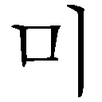 チャンミ」という。日本の「常用漢字」と共通性のある、中学校・高等学校で学習する「漢文教育用基礎漢字」（一八〇〇字 二〇〇〇年改正）に含まれていないため、高校の方針で漢字教育を受けたという人でも普通この漢字を知らず、「チャンミ」はハングルでしか書けない。「チャンミ」は、野に咲くバラを指すこともあるが、やはり花束にするようなバラがイメージされるという。
中国語では簡体字で「 」と書き、「qiang2wei1 チアンウェイ」と発音する。これはノイバラを指す。ノイバラではなく、ふつうのバラを表すのは、「玫瑰」（mei2gui メイグイ）である（マイカイ・ハマナス〈東北弁のハマナシに由来するという〉も含む）。これは、中国では南方で採れる赤く美しい玉を意味したが、唐代より転じてそのように美しい植物を指すようになった。日本でも、中国酒などで「玫瑰」の表記を見かけることがあるであろう。
」と書き、「qiang2wei1 チアンウェイ」と発音する。これはノイバラを指す。ノイバラではなく、ふつうのバラを表すのは、「玫瑰」（mei2gui メイグイ）である（マイカイ・ハマナス〈東北弁のハマナシに由来するという〉も含む）。これは、中国では南方で採れる赤く美しい玉を意味したが、唐代より転じてそのように美しい植物を指すようになった。日本でも、中国酒などで「玫瑰」の表記を見かけることがあるであろう。
また、中国原産のコウシンバラには、宋代より「月季」（yue4ji4 ユエジー）という名が与えられている。中国からの留学生に尋ねると、これには盆栽のイメージがあるとも言う。また「薔薇」という語は、中国語としてはあまり使われなくなっているようで、聞いたことがないという留学生もいる。日本の「常用漢字表」に類する「現代漢語常用字表」（三五〇〇字）の「常用字」（二五〇〇字）には二字とも含まれず、「次常用字」（一〇〇〇字）の中にかろうじて「薇」が、別の語を表記するためであろうが、収められている。
ベトナム語では、バラのことを「ホアホン」（hoa h ng）と言い、漢字で書けば「花紅」である。ベトナム語では修飾語が後ろに置かれるため、日本語式の表記にしてみると「紅花」となり、ここから分かる通り、意味は、赤、ピンクの花である。青いバラなどが開発される前の、きわめてシンプルな名称と言える。ちなみに、日本語で「紅花」は、染料や油が採れるキク科の花、サフラワー（末摘花）を指す。
ng）と言い、漢字で書けば「花紅」である。ベトナム語では修飾語が後ろに置かれるため、日本語式の表記にしてみると「紅花」となり、ここから分かる通り、意味は、赤、ピンクの花である。青いバラなどが開発される前の、きわめてシンプルな名称と言える。ちなみに、日本語で「紅花」は、染料や油が採れるキク科の花、サフラワー（末摘花）を指す。
「読めるけど書けない」漢字特有の現象
ところで、日本語の「ばら」は、外来語のような響きを持つが、純粋な和語である。和語の語頭に濁音が来ることは古くは原則として起こりえなかったことで、「ばら」も奈良時代には、「うばら」（「うまら」とも）であった（たとえば「だく」〈抱く〉も「うだく」「いだく」だった）。その語頭が変化したのが「むばら」や「いばら」であり、さらにその頭音が脱落して「ばら」という語形が生じたのである。
現在では、バラ科バラ属の園芸観賞用の植物としての「ばら」をもっぱら「薔薇」と書くようになっている。ただし、二字とも常用漢字の表外字であり、かつ植物名なので、新聞などでは「バラ」とカタカナで書かれることが多い。中国産の表記「薔薇」によって、日本でも漢語としては、一字ずつ音読みして「ショウビ」、古くは「ソウビ」と言った。
中国で生まれた「薔薇」という漢字表記は、前に触れたように漢字圏の中でも中国などより特に日本に根を下ろした。日本では、字体は「薔」「薇」が一般的であり、「表外漢字字体表」においてもそれが「印刷標準字体」と認められている。「薇」の「微」の「ル」の辺りが、常用漢字の「微」とは異なっているが、表外字であるために古い字体を維持しているのである。
活字にも、デザインの差が少なからずある。最近、携帯電話の漢字変換機能を辞書代わりに使う人が増えてきたが、そのようにして画面に表示された「薔薇」を手書きで写すと、古い機種の場合、「」「 」のようにおかしな字体となってしまうことがある。ドット数が足りないために、表示される字の点画が大幅に間引きされていることからこのようになるのであり、読めるけれども書けない、という字には、往々にして起こる現象である。
」のようにおかしな字体となってしまうことがある。ドット数が足りないために、表示される字の点画が大幅に間引きされていることからこのようになるのであり、読めるけれども書けない、という字には、往々にして起こる現象である。
茨と薔薇
茨城県の「茨」（茨）は、まさに先に述べた「いばら」である。つまり「薔薇」と語源を同じくする。賊を討つために茨を穴に仕掛けたことに由来する（『常陸国風土記』）とも言われる茨城の県花は「薔薇」であり、やはりその由来に関わるのだそうだ。
「いばら」の語を訓読みとして持つ字には「荊」（荆）「棘」もあるように、とげのある低木類の総称で、カラタチなども含んでいる。現代では、「茨」と「薔薇」はイメージを全く異にする、つまり別の語と意識されているのであろう。「茨の道」ということばはあるが、「薔薇の道」という決まり文句はない。しかし、与謝野晶子『みだれ髪』「はたち妻」に「野茨」とあり、国語辞書『言海』に「薔薇」が掲げられたように、明治期にはまだ「いばら」と「ばら」は互いに用法が入り組んでいた。
最初は別の植物を表す漢字だった
北原白秋の詩集『白金之独楽』（一九一四）に、
薔薇ノ木ニ
薔薇ノ花咲ク。
ナニゴトノ不思議ナケレド。
とうたわれた「薔薇」も、その漢字の形状を眺めていると、あたかもバラの花が咲きほこる様子がイメージされ、漢字とはうまく造られたものだと感心する向きもあるようだ。そこからこの二字はバラの象形文字だと誤解されがちだが、実は、「ショウ」「ビ」という漢語を表記するために造り出された形声文字である。「薔」は、本来「薔（ショク・シキ）」で「ミズタデ」を指す字、「薇」も「ノエンドウ」（野豌豆）などを意味する字であり、バラとは別の植物を表すための漢字であった。
「ショウビ」という語は、『爾雅』などの中国の古辞書では「牆蘼」と書かれており、後に略して「牆薇」（牆は、かきね）とも書かれた。六朝時代になってから、発音が一致または近似する字である「薔薇」という熟語が現れる。その漢字の交替には、それらの字面の与える先述のような効果が影響した可能性は否定できない。
名前としての人気もある
日本では最近、子供の名前に、「『薔薇』と付けたい」という親が現れ始めた。また、そもそもこの「薔薇」の字は、漢字二字で一つの読みを持たせる熟字訓としての用法であったが、「薇」だけで「ら」と読ませて、「蕾薇」と付けたいという命名の希望があった。実際「ら」には、「良」「羅」くらいしか当て字として使える字がないこともあって、人名以外の店名などでは、既にそうした用法も見受けられる。ちなみに、タレントの中川翔子は、母親から「薔子」と名付けられる予定だったという。このように、名前として人気の高い「薔薇」の字だが、法務省の定める人名用漢字（第七章の拒否された「星」を参照）には、二〇〇四年九月に「茨」は採用されたものの、「薔」も「薇」も、印刷物での使用頻度の低さなどから、採用には至らなかった。
この「薔薇」の字は、日本では漢字の知識量を計る、一つのバロメーターのように扱われている。そして、日本では、難しい漢字を書ける人は、皆の尊敬のまなざしを集めるという傾向があるようだ。無論、中国や韓国では、漢字がたくさん書けることと、いわゆる頭の良さなどとを短絡的に結びつけることはないという。
どっちが「でこ」で、どっちが「ぼこ」か
「でこぼこ」を「凸凹」と書くと、何ともユニークな感じがするであろう。この字の形態の醸し出すイメージともあいまって、漢字ではなく記号として扱われたり、本当の文字を隠す場合の伏せ字に使われたりすることもある。また、この字を日本産の「国字」だと言う人もあり、筆者の中学時代の数学（図形）の教諭はこの二字を板書して、そう説明していた。実際にはそのいずれでもない、歴とした中国産の漢字である。
この二字は、「当用漢字表」には含まれていなかったが、一九八一年に「常用漢字表」に採用された。「トツ」「オウ」という音読みのほか、「常用漢字表」の付表で、全部で四つの語の例が新規に追加された中に、二字を並べた熟字訓として「でこぼこ」も認められ、義務教育である中学校の国語の授業で教えられている。
この二字について、どっちが「でこ」で、どっちが「ぼこ」なのか分からなくなった、という声をよく聞く。混同しないコツは、「出ているほうが、でこ」と、和語の語義と字体とを関連させて覚えておくことである。音読みした場合の「オウトツ」も、「トツ」は「突出」しているほうと覚えておけばよい。
ただ、「オウトツ」と「でこぼこ」とでは、つまり漢語と和語とでは、語構成の順序が異なる。夏目漱石の『草枕』五にある、頭は「凹凸」だというのは遊戯的な使い方であろうか。元々の漢語にも、かつては逆にした「凸凹」という順もあるにはあったが、日本語としての漢語は、「オウトツ」の順となる。
版面の盛り上がった文字の部分にインクをつける印刷方法を「凸版」というが、その反対語は「凹版」であり、グラビアはその一つである。レンズの形を表した「凸レンズ」「凹レンズ」は日本で造られた混種語で、漢語と外来語という出自の異なる語を複合させているが、「凸面鏡」「凹面鏡」の語は、韓国語でも使っていた。ただし、漢字を使わなくなってきた韓国の場合、ハングルによる表記ではそれぞれ「 」（チョルミョンギョン）、「
」（チョルミョンギョン）、「 」（ヨミョンギョン）となり、視覚的な効果が消えてしまった。現在は、固有語に言い換えられている。「凹凸」も「」（ヨチョル）となったのでは、視覚的に得られる起伏感は完全に失われている。
」（ヨミョンギョン）となり、視覚的な効果が消えてしまった。現在は、固有語に言い換えられている。「凹凸」も「」（ヨチョル）となったのでは、視覚的に得られる起伏感は完全に失われている。
凸も凹も歴史は古い
中国語では現在この二字は、「凹凸」（ao1tu1 アオトゥー）の他、「凸面鏡」（tu1mian4jing4 トゥーミエンジン）「凹面鏡」（ao1mian4jing4 アオミエンジン）や、「凸顕」（tu1xian3 トゥーシエン 浮かび出る 簡体字では凸絢）、「凹下」（ao1xia4 アオシア へこむ・くぼむ）などと使われている。
北京語では「凹」を、本来の音の「ヤオ yao1」ではなく「アオ ao1」（窅 めがくぼむ）や「ワー wa1」（窪）という別の字の発音で読むことがあった。後者の読みでの凹は、山西省の地名としても定着している。また、陝西省生まれの作家「賈平凹」（jia3 ping2ao1〈wa1〉 ジア・ピン・アオ〈ワー〉）も本名は「賈平娃」（ジア・ピン・ワー wa2）であった。これらの読みは、中国語の別の字から読みだけを借りてきているという意味で、「訓読み」と言える（正確には転用である）。「凸」も、「トゥー tu1·2」のほか、太鼓のようにふくれることから、「鼓」の発音による「gu3 グー」という「訓読み」も行われた。
中国は面積が広大であるため、これらの字は各地で様々な読み方がなされている。そこには、発音が訛ったというレベルを超えたものも見られる。たとえば、南方の有力な方言である広東語では、「凹」は、「ナプ」（nap1、lap1とも発音される）のように発音する。これは中国の方言学の分野では、上下を逆さにした「」が「本字」つまり本来的な字であり、それに基づく「訓読」（訓読み）であるとされる。「」は、「凹」と続けて、物が低く垂れるさまを表したことばであった（宋代の『集韻』）。広東語では「凸」に口偏を付けたり（dat1 ほうり投げる、口答えする意）、「凹」に口偏（nip1 へこむ）を付すなど、これらの字が目に付く。また、窪んだ地形を表すために、「凹」に土偏を付す例（ao4 アオ）もあり、江西省や湖北省、湖南省で、「黄」、「三仙」などの地名として用いられている。
さらに南、国境を越えたベトナムでは、「凸」「凹」を、意味が近い固有語で「li」（ロイ 突き出た）「lõm」（ロム おちくぼんだ）と訓読みしたり、「希望する」という意味の語「ao c アオウオク」に「凹約」というように「凹」を発音が近いために当てたことがあった。また、チュノムでは「」という字を造っている。これは、「vũng ヴン」というベトナム固有語の発音を「奉」で示したもので、凹むことや水溜まりを意味する。「」（オウ〈アフ〉）は、『集韻』などに、「よわる」といった意味で南方の方言として載せられるなど、特に漢字圏の南方では、このどことなく「おかしさ」の漂う漢字が活用された。一方、中国の東の日本、韓国では、「凹」や「凸」の字を国字に利用した例はほとんど見当たらない。
「凹」「凸」は、唐代の記録によれば、秦代の『蒼頡篇』に出てくるというほど歴史はけっこう古い。そもそも篆書の時代には、「兕」や「（曲）」などの字が既に用いられており、似たような形態は、漢字に古来あるものではあった。ただ、「凹」「凸」の起源については、何か具体的な物をかたどった象形文字なのか、形のない物を抽象化した指事文字なのかは、判然としない。ともあれ、漢訳仏典では「凹凸」のほか「七凸八凹」「八凹九凸」など使用されることが多く、また韻律に加えて視覚も重視する唐詩においても用いられている。
「凸」は「突」（旧字体は「突」）と同系語であり、「凹」にも「坳」で「地のくぼみ」などという同系語を表す形声文字があったが、視覚的印象は「凹」や「凸」のほうがより強かったのであろう。
様々な筆順と画数
漢和辞典において「凹」「凸」は、部首では多く「凵部」に所属させられていて、その三画にあるため、それぞれ総画数が五画であるとされる。『康煕字典』では、漢字を画数順に並べた「検字」というリストで、やはり五画に配置されている。五画であるため、部首と合わせて考えれば筆順もおのずと決まるといわれるが、現代では一筆書きするようなケースも見られ、また昔においても、様々な筆順を見て取ることができる。なお、日本の文部科学省はこの字を含め、こう書かなければ間違いであるという筆順に関する見解を示していないのが現状である。
一方、中国では近年、筆順が公的に定められ、やはりこの二字とも五画と示された。しかし、『大漢和辞典』や『康煕字典』では、「凹」に「やまいだれ」を掛けた、先に示した字の「圧」（オウ〈アフ〉）が「やまいだれ」の部首の中で六画と数えられており、統一性に欠ける。発音順に配列された韻書から引用した字なので、清朝などの編纂作業者によって画数の数え方に差が生じてしまったのであろう。
地名としての凸凹
「凹」「凸」は、古く日本へは、前に触れた仏典から入ってきたようだ。奈良末期から平安初期にかけて成立した『日本霊異記』では、摂津（現在の大阪西部・兵庫県東南部）の地名に「撫凹村」があったほか、「海水凹開」という使用も見られる。これらの字を地名に用いることは、やはり中国に起こる。
その山容からであろうが、浙江天目山系「大凸山」のほか、「大凹山」「小凹山」「核桃凹」などが中国各地にある。日本では東北地方に、「大凹」という湿原があるほか、「凹」を「ひど」という方言に当てた「大凹」（秋田県由利本荘市）という例まである。この「ひど」には東北の方言でやはり「窪地」という意味がある。伊豆諸島に浮かぶ青ヶ島村には、山名に「大凸部」など、山頂を指す「凸部」が見られる。そこには、漢字の象形性と表意性を、日本に住む、辞書編者でもなく作家でもない一般の人々が、存分に利用してきた痕跡が認められる。
与えられた様々な訓読み
日本における「凹」「凸」の歴史について再び見ておくと、平安から鎌倉時代にかけて、「凹」には「ふむ」、「凸」には「あかる・おこす」という訓も与えられた（観智院本『類聚名義抄』）。「凸」という訓も『類聚名義抄』にあり、今日でも辞書にその姿をとどめている。仏典で、形が似た「亞」（亜）に「ツハクム」と訓読みを当てた例もあり、『龍龕手鏡』という遼代の仏者の編んだ字書には、この類の、より複雑で幾何学的な形まで収められている（増補版にもある）。
「凸」と「凹」は、中古（平安時代）末期あるいは中世以降、それぞれ「なかだか」「なかくぼ」という訓で使用されていた。鼻筋が通った顔を「なかだかな顔」と言うように、中央が隆起していることを「なかだか」と言う。この和語に対して、平安時代末期の『色葉字類抄』という辞書には「凸」が示されている。「なかだか」という訓読みは、江戸時代には常用され、森鷗外の『即興詩人』「歌女」などにも受け継がれている。
その反対が「なかくぼ」「なかびく」で、遅れて中世の『和（倭）玉篇』『節用集』辺りの辞書から、それらに「凹」を当てる例が現れる。二葉亭四迷訳『めぐりあひ』には、一字加えた「中凹」も見られる。大正時代に来日したロシア人学者ローゼンベルクの『五段排列漢字典』（一九一六）には、「凹」に「しゃくむ」、「凸」に「おこる」「いづる」「たかし」という訓も示されており、実に様々なかたちで利用されたことがうかがえる。
「くぼむ」「くぼみ」というのは、『新撰字鏡』や『日本霊異記』以来の訓で、類義字を足した「岩の凹窪」も、徳冨蘆花の作に見られる。ほかにも多くの作家たちによって使われたこれらの字には、「眼は凹し」、「ぼんの凹」、「彼女の笑凹」など、表現上の機知と苦心の跡が見られる。
ネットとの高い親和性
「でこぼこ」という擬態語は、江戸時代には「でくぼく」という語形であったが、すでに「凸凹」の字が当てられていた。洒落本や滑稽本など大衆の文学で「凸凹あたま」などと使われていたのである。「でくまひくま」と「ま」を添えて読まれることもあった（その場合には、「凸間凹間」とも書かれた）。「でこぼこ」という語形への変化は明治期に現れ、それからは、『凸凹黒兵衛』（田河水泡）など少年漫画に至るまで、しきりに用いられた。そして、単独でも「凸坊」「凸頭漢」などの愛称としても盛んに使われるようになる。
昨今ウェブ上では、額の「おでこ」を「お凸」としている例が多数見られる。漱石も『行人』に「御凸額」などと用いていた。パソコンの変換辞書に登録されているのもあるのだろう。一部では、デコメールを「凸メール」と当て字し、さらにそれを送ることを「凸る」（デコる）とも書くようになっている。当て字のようなものでは、果物の「ポンかん」がその形から「凸柑」と書かれることもあった（「凸」を「pong ポン」のように読むことは中国の武漢や長沙などの方言にも見られる）。また、地域による個性も生じており、大阪弁で「おでこ」を意味する「でこちん」を店名に使った例も大阪に見られた（表記は「凸珍」）。
「凹」については、数年前に、その名も「凹」という飲料が発売された。今では見かけなくなってしまったが、これは、その語形からして、ダイエットの効能を暗に訴えるものであったことは容易にうかがえる。「凹」を二つ重ねた「凹々」は、たとえば、「○○（社名）が凹々に叩かれている」など、ネット上などでもよく使われている。また「凸」同様、店名との相性もよく、「穴凹」などという居酒屋も存在する。
「凹」を動詞「へこむ」（へこます、名詞形はへこみ）に用いる例は、「お腹が凹む」など雑誌のダイエット記事でおなじみである。これは古くは江戸時代の歌舞伎や、徳冨蘆花などの小説に用いられ、その後『広辞苑』にも見出し表記として掲載されるに至った。
最近では、「お腹凹凹」「お腹凹々」と書いて、「お腹ぺこぺこ」と読ませる例もウェブ上には散見される。誰かが「ぺこぺこ」にこの漢字を当ててみたら、ことのほか面白く、それが広がっていったためと思われる。こうした使い方をされるのも、「凹」の字が醸し出すユーモラスな雰囲気ゆえのことだろう。作家の創作・表現意欲をも刺激するようで、日本の小説家では、国木田独歩に「凹たれる」、押川春浪に「暑い暑いと凹垂れる」、黒岩涙香に「丸く肉が凹込んで居る」や「十有二個の凸出た所」などの使用例もある。さらに、とある神社には、「凸凹丸」で「アイマル」と読ませる宮司もある。
今なお、特にウェブ上で、「凹凸」を用いて、この二字と形の似たコンピュータゲームの「テトリス」を表すなど、新奇な用法が陸続と生み出されつつある。ほかにも絵文字やアスキーアートの類にも利用され、もはや文字性を失った使い方、つまり「読み」を失い、文字としての用法を超えた現象さえ引き起こされているのである。
天空に輝くプレアデスのことを「すばる」と言い、「昴」という字を当てる。カタカナで「スバル」と書かれてあると外来語のような印象を受けるが、これは純粋な和語である。
散開星団で肉眼でも複数見え、それが集まっている、つまり「統べる」星という意味であると言われている。「すばる」は、「統べる」の自動詞「統ばる」の終止形・連体形から来ている。江戸時代には「すまる」とも呼んだ。中国では二十八宿の一つで「昴」と言ったものが、大和言葉の「すばる」に相当し、「すばる」がこの漢字の訓読みとなったのである。
「昴」は、今では人名用漢字にも含まれている。けれども、かつて、谷村新司の曲である「昴」がヒットしていた一九八〇年代前半は、この字が含まれていなかった。そのため、次のような事態が起こったのである。
さる著名なマラソンランナーに長男が生まれ、その曲が好きだったことから、「昴」と名づけて役所に届けた。ところが、「常用漢字にも人名用漢字にも含まれていないから受理することはできない」と役所に拒絶されてしまったのである。そのため、一九八一年から「人名用漢字」（第七章の拒否された「星」を参照）に認められていた「昂」という字が、「昴」に形が似ていたので、不本意ながらもそれを「すばる」と読ませて届けた。「昂」には「（うえに）あがる」「うえをむく」「たかぶる」という意味があり、名前に使われるときは、「たかし」「のぼる」「あきら」などと読まれる。しかし、戸籍では読みを振るわけではなく、また読みに制限はほとんどないため、全く違う字のままで登録されたのである。
その後、一九九〇年に「昴」が人名用漢字として認められることになった。果たして、それを機に改名できたのか、寡聞にして知らない。今日では、逆に「昂」という人名が、「すばる」に読み間違えられることも起こっているという。
「場」の訓読みである「ば」は、和語としては稀であった濁音で始まる語で、「には」（にわ 庭）が転じたものである、と考えられている。これに「あい」が結合した「場合」は、「ば」、「あい」のいずれもそれぞれの漢字の訓読みである。この「ばあい」という名詞を、「ばわい」とか「ばやい」と発音する人がいる。これは母音「あ」の連続（「baai」）が日本語には少ないこともあって子音が挿入されたもので、方言にも見られる。
「ばあい」は、江戸時代に生まれた語で、それ以来「場合」と漢字で書かれてきた。これが、明治時代以降、漢字圏の各国へと広がっていったのである。中国語では二字（合）が中国式に「chang3he2 チャンハー」と音読みされ、場合という意味だけでなく、「正式場合」（正式の場所）のように、場所といった意味でも使われるようになった。そして、中国語からの影響によるものであろう、さらにベトナム語でも形を変えて使われている。むろん「場合」と漢字で書かれることはなくなっているが、「tr
 ng hp チュオンホプ」という発音で用いられ、ローマ字で表記されている。
ng hp チュオンホプ」という発音で用いられ、ローマ字で表記されている。
また、日本語の「ばしょ」は、「ば」（場）という固有語（和語）と、類義の「ショ」（所）という字音語（漢語）の造語成分とが重なってできた語である。訓読みと音読みとが合わさって生じた、いわゆる「湯桶読み」のことばである。これも江戸時代から「場所」という漢字表記で使われてきた。隠語では「しょば」と逆さに発音されることがある。
この「場所」もまた、中国に〝逆輸入〟され、「chang3suo3 チャンスオ」とやはり中国語として音で使われており、「娯楽場所」（ ／娯楽場の意）のように、独自性のある用法を派生させた。またベトナム語でも「trư
g s
／娯楽場の意）のように、独自性のある用法を派生させた。またベトナム語でも「trư
g s チュオンソー」として取り入れられ、特に学校の所在地を指す、という意味も生じていた。これは、さらに韓国語でも、「
チュオンソー」として取り入れられ、特に学校の所在地を指す、という意味も生じていた。これは、さらに韓国語でも、「 チャンソ」と字音語として採り入れられているのである。むろんこれらの国では、漢字で「場所」と書くこともできた。
チャンソ」と字音語として採り入れられているのである。むろんこれらの国では、漢字で「場所」と書くこともできた。
このように「場合」や「場所」の語は、東アジア各国への日本語の文献の移入、また日本で学んだ留学生たちや彼の地での日本語教育を通して伝播していった。そして、日本語の訓読みの部分が各国の音読みに改められた結果、定着していったのである。訓読みは、現在では日本に独自の現象と言うことができるが、そのことはこういう受容の実情にもうかがえるであろう。
肉、野菜などを主に油で加熱する料理法を「炒め（る）」と言う。この「いためる」は明治期には「痛める」と書かれた。実は、「炒」にはより古く、平安時代から「いる」という訓読みが与えられていた。別に「焦る」「煎る」などとも書かれたように、水気がなくなるまであぶるような調理法のことである。
「炒」という字には、「炒米」といった用法が江戸時代に現れ、明治、大正の頃は「豆を炒る」「銀杏を炒る」というように用いられることが普通であった。しかし、そうした調理が減る一方で、次第に中華料理が日本で盛んとなり、炒飯や野菜炒めなどが家庭でも食卓に上るようになった。つまり、油を使って食材をいためることが広く一般化した結果、「豆を炒る」という訓読みよりも、「ご飯を炒める」といった訓読みのほうが多く用いられるに至ったのである。
もともと中国でも、「炒」（chao3 チャオ）は、和語で言うところの「いる」という意味だったのが、後に油を使って「いためる」という用法がそこに加わり、それに取って代わることになった。こうした中国語での変化が、日本の漢字へと影響し、その訓読みまでも変えてしまったのである。中国からの漢字の影響は、遠い昔だけの話ではない。
「いかづち」から「なるかみ」を経て「かみなり」に
雷鳴やその電光を合わせて「雷電」と言う。江戸時代の不世出の大関、雷電の名は、その意を取ったものであろう。ＹＭＯの曲「ライディーン」にもこの二字が当てられていた。
その天体現象について、古代の日本人は「いかづち」（いかつち）と呼んだ。「いか」は「厳」、「つ」は「の」、「ち」は「霊」という意味であったと考えられている。この「いかづち」（いかずち）は、本来は広く「恐ろしい神」を指す語であり、それから特に雷電（いなびかり）に限って指すようになった。『日本書紀』の昔から、漢字の意味に従って「雷」や「雷公」が当てられている。
「いなづま」は、電光のおかげで稲が実る、という言い伝えによってできた語である。つまりこの語は「稲」の「つま」（配偶者）という構成であり、それより遅れて平安朝の頃に「電」の訓として現れ、中世には和語に合わせて「稲妻」という表記も現れた。同義の「いなびかり（稲光）」には、平安朝以降、「電」のほか、「雷」という漢字も当てられた。
「いかづち」は、「なるかみ」とも呼ばれ、それは「なるいかづち」（鳴雷）という神の名と同じであり、漢字表記としては奈良時代に「鳴神」「雷神」、平安朝には「雷公」「雷」などが用いられた。さらに、江戸時代には、歌舞伎の「 （髪）歌仙桜」という外題で、女偏が付された造字まで生まれるに至った。
（髪）歌仙桜」という外題で、女偏が付された造字まで生まれるに至った。
この「なるかみ」の語の順を変えて生じたのが、「かみなり」である。これは平安朝より「神鳴」として文献に現れ、江戸時代には雷神としても見なされるようになり、「神鳴」のほか「雷」という漢字一字が当てられた。音読みで「ライ」と呼ぶことも、すでに中世には起こっており、現在でも雷を「ライさま」などと呼ぶことが各地に方言として残っている。
このように語形つまり単語の形が変われば、それに従って、和語に沿った「稲妻」「鳴神」「神鳴」などの表記も変わるのだが、一字で音訓を示す「雷」という漢字は不変なのであった。共通する意味を表すものの、特定の語だけに限定されない点から、表語文字というよりも、違う語でも同じ意味であればカバーするという表意文字としての側面が「雷」の字には現れていよう。和語の語源に沿った表記の「神鳴」と書かれているほうが、その語源は意識されやすいが、「雷」は和語の形の変化に対応できる、柔軟な字であったと言える。
雷鳴を表現する字画数
そもそも「雷」という漢字の形は、何を意味するのであろうか。「雷」は、元はかみなりの響きを指し、後漢の『説文解字』では「靁」のように作っていた。「畾」は「ライ」という字音を示すとともに、重なる意を示したとされる。周代の鐘や鼎などに鋳込まれた金文には「」のようなものも見られ、それは雷電の姿とも言われる。
これが戦国時代に至り、字形の複雑化が起こった。六国古文では「」などが生じ、戦国時代の秦の国で用いられたとされる籀文では、その「」の上に、さらに雨冠をかぶせた字画の込み入った字まで生じた。これらに含まれる「田」は、ここでは田んぼのことではなく、陰陽が迫動して、回転する様であると説明される。元はやはり稲妻が放射する形だったとも、「田」は鼓を意味するとの解もなされる。
一方、「電」はかみなりの音ではなく、光のほうを指す。「逐電」（ちくでん・ちくてん）は、稲妻を追うほど極めて速く行動すること、さらに逃げること。また今日、多用されている「電気」としての意は、元は稲妻から生じたものである。気象を表す「雨」の下の部分は、篆書では「」で、「神」の「申」と同じもので、いなづまの姿を描いた象形文字であった。甲骨文・金文では、よりシンプルな稲光の象形文字である。
現代の中国語では、「雷達」（lei2da2 レイダー）は、「レーダー radar」の音訳語である。また、「鐳」（ lei2）は、現在、元素の「ラジウム」を指す。このように中国では、日本の国字が会意文字で造られるのと異なり、形声文字で漢字を造るうかがえ、やはり漢字で発音を表そうとする傾向が見てとれよう。
中国では「雷」の字を三つ、四つと重ねて一つの字とすることがあった。「」「」という字が宋代の『広韻』などにあり、「」（ホウヒョウ・ビョウビョウ）や「」（ヒョウヒョウ・ビョウビョウ）で雷の音を表す熟語があるという。後者は計一〇四画に達する熟語ということになる。宋代の『（黄）山谷集』に「銃」という熟語が使われており（明代の『七修類稿』、『字彙補』参照）、蜀の地の語とされている。和語では、雷鳴の擬声語に「ごろごろ」「ぴしゃっ」などがあるが、さすがにこの字を当てた例は小説などでも存在しないようである。
画期的な漢和辞典の登場
漢字を部首ごとに分け、各字に日本語を対照させる形式を持つ字書は、漢和辞典（漢和辞書）とも呼ばれ、その編纂は奈良朝以前に既に行われていたと考えられる。現存する漢和辞典のうちで最古のものは、平安時代初期（九〇〇年頃）に僧の昌住によって編纂された『新撰字鏡』である。
その編者は、文章を漢字で書こうとすると、「蒙然として雲霧の中に居る」ような思いにかられたことから、仏典の注釈書に出てくる漢字の発音と意味を部首別に配列し直した。そこへさらに、中国の字書や韻書に収められた漢字を加え、草木や薬などを解説した本草書などからも漢字を拾ってきては補うことで二万字余りまで増量し、そこに和訓を加えて作り上げた。まさにユニークな字書である。そこには、日本で編まれた資料からも字が加えられている。中でも奈良時代のものと推定される『小学篇』という資料からは、日本独自の植物「さかき」を表す「榊」や「愛」のような古層の国字の類までが引用されている。
それから時を経て、近代的な漢和辞典の嚆矢は、熟語も収めた三省堂の『漢和大字典』（一九〇三）であるとされる。しかし、この字書は漢籍を対象とした内容となっており、国字や国訓の類は付録に載せられるだけであった。喩えるならば木に竹を接いだような体裁であり、真に日本人の使ってきた漢字を知るための字書というものからは遠い存在となっている。
大正期に至り、その流れを打破する漢和辞典が世に出た。編者として上田萬年、栄田猛猪ほかの名が連なった『大字典』である。これは、国書や当代の雑誌などに現れる漢字さえも、その収録対象に据えようという画期的な編集方針を掲げた字書であった。（参照元へ戻る）
「漢字にあらず」
筆者が子供の頃、書店で厚い『大字典』を眺めていたとき、「オンス」という単位名を訓読みとして付けられた奇妙な項目が目に止まった。その上に、「此字漢字にあらず」という説明が記されていたのだが、「」という漢字らしからぬ形態と「オンス」という外来語、そしてこの漢和辞典としてはふさわしからぬ注記は、一小学生に様々なことを考えさせた。「オンス」は国語辞典によれば「Oz.」と略記するらしい。それを続けて書いたものではなかろうか。
その「字」は、江戸時代に蘭学書『遠西醫方名物考』（一八二二 早稲田大学図書館蔵版本など）などに出現し、実際に薬の目方の単位として医学書などでしばしば使われていた。同書には、ほかにも単位を示す記号の「Ｇ」を漢字に慣れた人たちが書きやすいように漢字風に改めた「」（ゲレイン、グレイン）の類も示され、実際に用いられている。
そして、それらの原典である当時のオランダの書籍などには、オンスに対しては「」などの略字が載っていた。つまり『大字典』の字は、オランダで使われていた単位に対するローマ字の略記が、日本でさらに漢字のように変形して採り入れられたものである。少なくとも明治、大正の時代までは医学の文献などで確かに使われていた。「漢字にあらず」というのが、ローマ字による記号だったからという意味なのか、それ以外の意味であったのかは、もはや知る由もないが、国字として認めようとすれば認めうるものであろう。
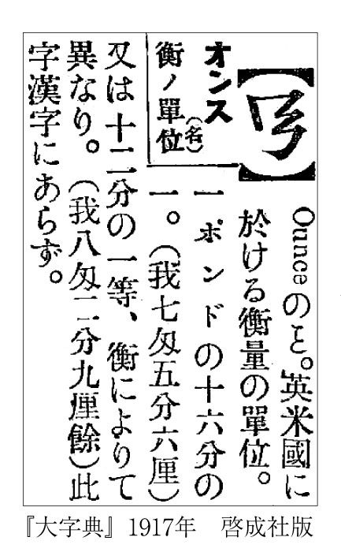
辞書は、文字に関する疑問を常に解決してくれるとは限らない。しかし、当たらず障らずの記述にとどまらずに、いろいろなヒントを与えてくれるものであってほしい。ヒントが多ければ多いだけ、解答に辿り着く可能性が高まるものだからである。近年、日本語の漢字に焦点を当てた辞典も現れてきた。少しずつでも増えていくとよいのであろう。
同訓異字（参照元へ戻る）
「はかる」には一三七種類の漢字がある
日本の漢字には、同じ発音で類似する意味の訓読みを共有するグループがある。それを「同訓異字」と呼ぶ。
最近、街中で見た看板に、「......をお頒けします」と記されていた。「頁」（おおがい）という部首が付くことで見る者は「分ける」と区別することができ、物を売る意味であることを認識する。耳で聞けば全く区別はつかないが、「ねえさん」を「姉さん」「姐さん」、「おかあさん」を「お母さん」「お義母さん」と実情に応じて書き分けるのと同様の方法である。
同訓異字は、このように意味の差が明確に意識できるものばかりとは限らない。たとえば、「かえる」という和語には、「返る」「帰る」のほかに、「変える」や「換える」「替える」「代える」が、学校で国語の時間に教えられている。後ろの三つは、「かえ方」や「かえる物」によって当てる漢字が違う。和語としては、元は一語であるものが、それに相当する漢語に、「換」「替」「代」（タイ）と様々なものが対応する、ということが反映したものだ。
この漢字の使い分け（これも「遣い分け」とも書ける）については、全国紙を抱える新聞社であっても基準を必ずしも明確にしえていない。お金の場合は「換金」と言うから「換」だが、手段の場合は「代替手段」などと言うから「代」か「替」のどちらか、といった迷いが常に生じる。
「はかる」という動詞にも、「かえる」同様多くの漢字が当てられる。『大漢和辞典』の字訓索引によれば、実に一三七種もの漢字が存在する。そのうち、学校で習うものは、「図る」「諮る」「謀る」と「測る」「計る」「量る」の六種で、後ろの三つは、それらを組み合わせた熟語に「計測」「計量」「測量」があり、互いに意味において共通性があることがうかがえる。
それでは、「体重をはかる」という場合には、いずれの漢字を用いた表記が適しているのであろうか。
勤め先の大学に、三〇〇名余りの学生を擁するクラスがあり、そこで各自思い思いにそれを漢字で記入してもらった。すると、見事に三分され、いずれも一〇〇名余りの支持を得ていることが分かった。まさに鼎立である。「体重計」「体重測定」「重量をはかる」と漢語にしてみても、いずれにも根拠がなくもなさそうだ。
常用漢字より前の当用漢字の時代に、国語審議会が参考資料として作った「「異字同訓」の漢字の用法」（一九七二）の中に、「目方を量る」という例があるため、体重の場合もこれに該当すると想像される。つまり、「量る」を使うのが〝公式〟なのだろうが、現実にはこのように人によって異なる文字を用いた生活が営まれているのである。
質が違う「怨」と「恨」
同訓異字は、ニュアンスの書き分けを可能にする反面、このような一筋縄ではいかない現実をも生む。「早い」と「速い」は、それぞれ時刻と速度の「はやさ」と言えそうだが、「早口言葉」などという場合の「早＝はや」は速度のほうと思われる。これは、例外的に定着を見ていると言えるであろう。「はやし」に「速」を当てることは、平安時代末期の国語辞書『色葉字類抄』のころからあったのであるが、芭蕉の「五月雨を あつめて早し 最上川」のように、速度であっても「早」を使うという慣例もあった。
次に「足」と「脚」の場合、一般に下肢や物の支えには後者を使う傾向がある。しかし「「異字同訓」の漢字の用法」によれば、「机の脚（足）。えり脚（足）。船脚（足）。」と、「あし」が「脚」でなくてはならないという場面は、実際には少ないようである。
また、「当てる」は「充てる」とともに常用漢字で認められていて、用法に区別があるとされるが、「「異字同訓」の漢字の用法」には、「建築費に充（当）てる。保安要員に充（当）てる。」と例示されており、「充」のほうが「当」よりも用途が狭く、この「あてる」という訓読みは存在理由が明確ではないようである。
そもそも「あてる」には奇妙な現象があった。「宛名」「宛て先」という表記はよく使われるが、この「宛」は「常用漢字表」にない、いわゆる表外字である。「宛てる」は、実は「充てる」の変化したものであったことが早くから知られている。「宛」を「あて」と訓読みすることは、「充」の字がその崩し字の形を介することで変形してしまい、「宛」と見紛う字体となったことがあったために生じたものである。「あて字」には「宛て字」という表記もなされるが、これ自体がいわば当て字であったのだ。
「なぶる」という語は、表外字で「嬲る」と書かれることがある。この場合、男が女をなぶるという状況が想起されるが、女が男をなぶるという現実の人間関係の状況に合わせて、「嫐る」を使うケースも現れている。語義とは別のレベルで使い分けていることになる。実はこの字はパソコンで打つことができるのだが、それは筆者がＪＩＳ漢字の典拠を調査した結果、熊本県の小地名「嫐迫」から、ＪＩＳに「嬲」の異体字として「嫐」が採用されていたことによるものと判明した。また、歌舞伎十八番の一つである「うわなり」を表す漢字としても、「嫐」をパソコン上で用いることができるが、それもこの地名のおかげだったのである。
「怨」と「恨」は、日本人はともに「うらむ」と訓で読み、「エン（オン）」や「コン」といった字音は日常では熟語でしか使われない。そのため、それぞれの字義の差を意識しにくい。しかし、中国の人々は、それぞれ「yuan4 ユアン」「hen4 ヘン」と読み、彼らにとっては、そもそも全く別の語である。前者は残念な気持ちを意味するのに対し、後者は、白楽天の詠んだ「長恨歌」の楊貴妃と玄宗皇帝の「恨」、すなわち心に深く傷痕が残り、「此恨綿綿無絶期」というように、永く続くうらみを意味する。「恨」は、「根」や「痕」（コン・きずあと）と、「艮」という要素を共有していることからもうかがえる心情なのである。
韓国語でも、二字は全く別の発音である。朝鮮民謡「ハン五百年」の「 ハン」は「おおよそ」の意などとされるが、同音語で「恨」（ ハン）と訳し、そこに中国語と同様の「恨み」を含意させることもある。中国や韓国の人々が歴史問題に繰り返し言及すること、そして日本人がそれをなかなか理解しにくいことの背景の一つには、そうした感情や意識の差が横たわっているのではなかろうか。
「さそう」という動詞には、漢字の「誘」が当てられる。これは、「秀」の部分が「ユウ」という音を示すとともに、「言」を加えて、言葉でさそい込むことを表すとされる。
日本では、かつては「誘」の字音「ユウ」を用いた「誘因」「誘惑」「誘蛾灯」などの熟語を用いることが稀であったため、より分かりやすい構成を持つ「哘」という国字を用いることも一部であった。「口」で「行こう」と言うのが「さそう」につながることから生まれた漢字であろう。
以前、青森県の下北半島の付け根辺りに、天間林、別に天満林、さらに天魔林とも書くという趣のある名の村があった。数年前に、近隣で地名調査をしていた私は、隣接する東北町の役場で、天間林には、「哘」集落と、三〇軒ほどの「哘」姓があるとの話を聞き、現地に向かった。東北町で拾ったタクシーの中で、道すがら運転手に聞くと、彼は最初「哘」の字が読めなかったという。
「前に夜中、天間林に帰るという酔っぱらいを乗せたんだけど、途中で道が全く分からなくなってしまってねえ」――「哘」とはそのような場所だそうだ。
三〇分ほどタクシーに揺られ、途中「哘 ２ｋｍ」とある道路標識を経て、天間林村天間舘の字「哘」に着いた。さっそく「哘北」や「哘」というバス停（写真）が目に飛び込んできたが、ここらへんを通るバスも本数は極端に少ないようだ。今でも熊や狸が出るという林や防風林に囲まれた光景に圧倒されながら、家々の表札を見て回ると、確かに「哘」姓ばかりである。
少し歩くと、「哘」小学校の跡地に出た。この小学校は全学年で一クラスだったという。哘の哘小学校で哘さんたちが学んでいたわけだ。
そこに電動機付き三輪自転車に乗ったおばあさんが通りかかったので、地名にまつわる話を尋ねようとした。けれども、日本語学の教科書にある方言の説明そのままに訛りが強く、なかなか聴き取ることができない。そこで、取材に一緒についてきてくれた先ほどのタクシー運転手が通訳してくれた。「全国でもここだけ」の地名で、「哘」は「口行く」で、「辞典にもない」という。国字に関して刊行された唯一の辞典、菅原義三編『国字の字典』で、「哘」を引くと、昔この辺りでは麻布が作られ、地元でそれを「さおふ」と呼んだことが由来ともされるが、もはや定かでないのである。
地元に住む「哘」さんにも、話をうかがうことにした。ある「哘」氏は、地名の由来を「侍か富山の薬売りが付けたか」と推測する。
この「哘」さんとは別の、孫が分家の五代目になるという「哘」さんは、「青森県内の病院でもちゃんと読んでくれなかった」と嘆く。概してこの字を用いた姓の本家は六、七代前までさかのぼることができるという。また、この「哘」さんによると、「哘崎」という姓も、隣の十枝内という集落にあると聞いた。
その中の通称「哘平」という地に住む「哘」さんは、その姓を「哘崎」と発音した。名字の収集家などによって「哘」は「こうなら・さけび」、哘崎は「こうさき・ゆきざき」と読むとも記録されているが、それらがどこに実在したのかは定かではない。
よそから「口の字だけ宛名に書いてくる手紙も」届くという、また別の「哘」さんは、「口で行くだから『さそう』」だという解釈を示してくれた。戦争中に中国で兵隊をしていた頃は、旁の「行」の部分から中国音で「シン」と呼ばれたのだそうだ。青森市からも、「哘」とは一体何かと調べに来た人がいたという。郵便物の宛名については、郵便配達の途中の郵便局員に聞いてみると、他の地では「哘」の字を見慣れないためか、「口行」と二字になってしまっているものも寄せられてくるのだという。
六、七軒あるうちの一軒の「哘崎」さんによれば、東京、川崎などに分家があちこちにあるという。この「哘崎」さんが出稼ぎで東京に行ったときに、やはり「どうやって書くんだ」と聞かれた。「哘」さんも、東京へ出ているが、すべてこの「哘」から広がったのだそうだ。「哘橋」という橋や「哘地区集会所」（写真）も見られ、今なお当地では、いくつもの姓や地名、施設名に、日常の当たり前の文字として使われ続けていることがうかがえた。
「哘」は、日本製の漢字つまり国字であるがゆえに、当然のことながら中国の文献には見出せない。日本の文献では、平安末期から鎌倉時代にかけての漢和辞典『類聚名義抄』に「サソフ」という読みが付されて現れ、「カタシ」という訓が与えられた例を経て、ついで室町期の連歌辞書にも「サソフ」として掲載された。実際にそれを使った文学作品などはまだ見つかっていないが、京都など当時の中央では何らかの使用例が存在していたのであろう。
天間林は、江戸時代から「天満（間）舘」として使われてきた地名であり、「哘」も江戸時代には現れている。しかし、なぜ、この僻遠の地においてその「哘」という字が選ばれ、そして根付いたのかは、いわば歴史上のミッシングリンクと認めざるをえない。江戸時代には「誘」（ユウ）を「唀」と書く異体字、つまり形は異なるが音と意味は共通する字も用いられたようなので、そういう漢字が「哘」定着への媒介となったとも考えられる。
ちなみに、この天間林村は、平成の大合併によって七戸町へと合併されて消滅したが、この小地名は残った。
小学校高学年の頃、自習の時間に、「貝」の付く漢字をできるだけたくさん書くという課題を出されたことがあった。その中に、漢和辞典で覚えたての「貰」を混ぜて書いたところ、先生に、「貫」だったかそれに似た漢字に直された。「貰」は、学校で習う漢字ではないから、そうされたのだろうか。
この「貰」は、頻用される和語の動詞「もらう」を表記するものとして、国語辞書には載っている。だが、音読みで用いられることが近代の日本ではほとんどないことも抵触したのであろうが、戦後の「当用漢字表」や「常用漢字表」には採用されなかった。ただ現在でも、雑誌や映画の字幕などによく使われており、学生の作文にもしばしば見られる。
ところで、この「もらう（もらふ）」について、江戸時代の文書では、別の字がしたためられていた。それは「囉」という字である。
この字のように、ある単語について、江戸時代までさかのぼれば、現在とは全く別の漢字が当てられていたものがある。たとえば、「たしか」は、「確（か）」ではなく「慥ニ受取申候」というように「慥」が使われていた（その字の旁が「造」ではなく、「送」「遣」などとなることもある）。別の字から転化したものだという説もあるが、これは「まことあるさま」といった意味を持つ漢字であった。また、「噯」という字は、現在では、「噯気」と書いて「げっぷ」の意味で使われているが、かつては「あつかう（あつかふ）」などの意味と読みでも使われていたのである。
再び「囉」についていうと、かつての日本では口偏を伴った字で、「咄」を「はなし」、「噓」を「うそ」、「嘸」を「さぞ」などと中国の辞書には見られない字義の和語で読む、いわゆる国訓がいくつか定着していた。「囉」に「もらう」の意があるのもその一つかもしれない。この「囉」という字には、中国では、うたう、さわがしい、といった意味しかなかった。そこで、この「囉」について少し考察してみよう。
まず「羅斎」（ラサイ・ロサイ）という熟語が、中国・宋代の『東京夢華録』や范成大の詩、禅語録の類に見られる。これは「僧侶の托鉢」という意味である。一方、同じ「托鉢」の意で元代の『笑隠大訢禅師語録』といった禅語録の類に、「口偏」ではなく「しんにょう」を付けて「邏斎」と書かれている。「邏」に「あるく」（「警邏」など）といった意があるところから、こうした熟語ができたのであろう。
そして、それらが日本に伝わり、「ラサイ」ないし唐音の一種で「ロサイ」と読まれるようになり、また「羅」に「口」偏がついて、「囉斎」（『下学集』）という表記も派生したようである。
「羅斎」「囉斎」は、日本では「乞食」という意味でも用いられていた。「托鉢」僧が食べ物をもらうために経を読むことから、〝食べ物を「もらう」〟という部分がクローズアップされて、「囉」が「もらう」という意味になったと推測される。
また、先の「噯」で「あつかう」と読ませることなどから、口偏を用いる手法が類推されたこともあったかもしれない。さらに、「囉」という字は、仏教において、お経に陀羅尼と呼ばれる古代インドの呪文を音訳（当て字）する際に、「南無喝囉怛那哆羅夜耶」（ナムカラタンノー トラヤーヤー）などと、しばしば使われてきたものである。そうした諸々の要素が揃うことによって、前記の「もらう」に至る連想を産みだす環境が整っていたと考えられる。
「ろさい」は、室町期には「ろそう」と動詞としても使われており、ここからも同じ動詞の「もらう」に「囉」が当てやすくなっていたことが想像される。そして、この熟語としての「囉斎」から、「囉」の一字だけを取り出して、和語の「もらう」にあてがったものと思われる（江戸時代に熊本では、「」という変形も用いられたことが報告されている）。こうした変化は、本来の字形が、このように容易には理解しがたい複雑な経緯をはらんでいたために起こったのであろう。
「卵丼」よりも「玉子丼」
「卵」という漢字のルーツは、生物のタマゴの象形文字とされている。その形から魚か虫、あるいはカエルのタマゴだったのではないかと言われている。
現在、日本では、「卵」には常用漢字表で「たまご」という訓が認められている。しかし、古くは「たまご」という語はなく、それを「かひこ（かいご）」と称していた。「卵」は、その「かいご」を表記するために用いられ、その字に「かいご」という訓が当てられていたのである。
「かいご」の「かい」は「貝」のことであり、かつては卵が貝と同じように殻を持っていると認識されていたことによる。現代人とは異なる発想といえるであろう。平安時代初期の『東大寺諷誦文稿』には、「卵」の字が、「」などのように少し形を変えて書かれている。（参照元へ戻る）
しかし「かいご」は、蚕を意味する「かひこ」、つまり「飼い蚕」と発音が似かようために、その後次第に「たまご」という呼称にその座を譲っていった。
中国では、鶏卵を「白く丸いもの」として「白団（團）」と呼ぶことが唐代の『冥報記』あたりから生じ、日本でもそれが、『今昔物語集』「震旦周武帝、依食鶏卵至冥途受苦語」（震旦ノ周ノ武帝、鶏ノ卵ヲ食セルニ依リテ冥途ニ至リテ苦ヲ受ケタル語）などで受け入れられた（『今昔物語集』の鈴鹿本では、読みは振られていない）。
日本では、室町期より「卵」のほか「卵子」という二字の表記が、さらに江戸期より「鶏卵」と書いて「たまご」と読ませることが起こっている。下っては、「トカゲの卵」などといった本来の用法のほか、そこから転じて「医者の卵」「モデルの卵」のように比喩的な用法でもよく使われている。
料理に使われる食材としては、和語の「たま」の「こ」という語源に沿った「玉子」という表記が選ばれる傾向がある。たとえば、出汁で煮た玉ねぎを卵でからめご飯の上にのせた「たまご丼」の場合、この表記は「卵丼」よりも「玉子丼」が好まれている。試しにグーグル（google）で検索してみても、「卵丼」の三万七〇〇〇件に対して「玉子丼」は八万二〇〇〇件となっており、インターネット上では後者が倍以上も多い。特に寿司ネタなど和風の加工品でその傾向が強いようだ。では、「トカゲのタマゴ」についてはどうかというと、同じくグーグルでの検索の結果、「トカゲの卵」が一万一八〇〇件もヒットするのに対し、「トカゲの玉子」は五件しかヒットしない（二〇〇七年五月一六日現在）。
これらは、むろん同訓異字そのものではないが、両者の違いはどこにあるのか。どうやら「卵」の表記は、「受精卵」や「卵子」などで使われるため、その意味や字の形態から生物としての生々しさを与えかねないのに対し、「玉子」にはそれがなく、どことなくかわいらしささえも感じさせる、ということではなかろうか。後者は、江戸時代から料理本をはじめとして浮世草子や俳諧などの各文献に現れている。しかも、「玉子」の場合、そこから「玉」の一字を抜き出して、「蟹玉」や（寿司屋や牛丼屋などで言う）「玉」などの略称も造ることもできる。
高知人は「卵」好き？
しかし日本には、この「玉子」が、ほとんど使われない地域が存在するらしい。それは四国の高知県である。
その噂を新聞社の人から聞いた私は、さっそく高知出身の大学生に「たまご」を漢字でどう書くか訊ねてみた。彼女の答えは「卵」だった。ただ、他の地域出身の人間からも同じ答えが返ってくることはある。驚いたのは、次の質問に対する答えである。
「あなたは『たまごやき』をどう書くの？」
「『卵焼き』と書きます」
私が、「ほかの書き方はないかな？」と訊ねると、彼女は少し考えてから「玉焼き」と紙に書き、その文字を見つめながら怪訝そうに首をかしげた。そこで、「『玉子焼き』とは書かない？」と聞いたところ、「王子焼きに見えますから」という答えが返ってきたのである。
それ以来、高知出身の学生に会うたびに同じ質問をしてみるのだが、ほぼ同じ答えが返ってくることが分かった。彼らの返事に共通する内容としては、高知では「玉子焼き」というと、縁日で売っている鈴カステラ（ベビーカステラ）のことをもっぱら指しているようで、名物となっている店もあるとのことであった。卵黄を材料としているところから、「玉子焼き」と命名されたのであろう。
しかし、ここで疑問が湧いてくる。ベビーカステラとはそれほど古くから存在し、「玉子焼き」を「卵焼き」に変えてしまうほど、高知県民に大きな影響力を及ぼすものなのであろうか。そもそも高知以外でも、ベビーカステラを「玉子焼き」と呼ぶ地域は関西に広がっている。見方を変えれば、高知が何らかの理由でもともと「卵」しか使わない土地だから、ベビーカステラが堂々と「玉子焼き」と名乗ることができた、という可能性もある。
さらに調べてみると、先ほど出た「玉子丼」、これも高知では「卵丼」の表記が目立つことが分かった。「玉子」よりも「卵」を好むのが特殊な事象であることは、もともと表記がまちまちで、かつ日常的すぎるために、周囲の人々はもちろんのこと地元の人々にも意識されていない。いずれにしても、高知ではなぜ「玉子」ではなく「卵」なのか、その解明は今後の楽しみな課題である。
「未だ肉に成らず」
中国では、「玉子」（ギョクシ）は宝石の玉（第四章を参照）などを意味し、たまごを指すことはなかった。中国では現在、「卵」（luan3 ルアン）は、福建語など一部の方言を除き、卵細胞や動物などのタマゴに限って使われ、食用としてのたまごには通常使われることがない。食用のたまごには、「鶏蛋」（ji1dan4 ジーダン）のように「蛋」（dan4 ダン）を用いるのである。
この「蛋」は、もともと、鳥や蛇の丸いタマゴを表す字であった。中華料理の前菜によく登場する「皮蛋」（pi2dan4 ピーダン）などは、その代表的な使用例である。ほかに、茶碗蒸しは「蛋羹」（dan4geng1 ダンゴン）、ケーキは「蛋糕」（dan4gao1 ダンガオ）となる。また、人を罵倒する際の「王八蛋」（wang2badan4 ワンバーダン）のような表現もある。
ところで、この「蛋」は、日本では「蛋白質」「尿蛋白」などに使われるが、これは卵白のことを「蛋白」とも言ったことに由来する。卵白がタンパク質を主成分とすることから名付けられたものであり、「蛋白質」ではその意味が分かりにくいとして「卵白質」という語を提唱した学者もいたが、習慣を変えることはできず普及はしなかった。ちなみに「蛋白質」とプロテインは同義であるが、日本では、プロテインと言うと、蛋白質が主成分の「プロテインサプリメント」の略称として使われることが多い。
広大な面積を誇る中国には、先の福建語だけではなく数多くの方言が存在する。それらは互いに通じないほど違いがあり、なかには漢字表記が定まらないものまである。ところが、使用人口の多い広東語では、清代から方言文学が記されるほど文字表現が盛んに行われる中で独特な漢字が定着している。たとえば、「鷄（鶏）意」のように「未成肉」を一字にまとめた「意」という地域文字がある。これは「春」（chun1 チュン）と同じ発音（広東語でchön1）で、意味は「未だ肉に成らず」、すなわち動物、特に鶏の卵のことである。「未成年」と同じ構造の語で、かつては「未成人」を組み合わせた造字も楚人の名に見られた（音はzai3 ザイ、日本漢字音ではサイ）。
「食は広東に在り」というが、広東では卵のことを「まだ肉にならない」と捉えた人がいたのであろう。この漢字は、今日に至るまで少なくとも一五〇年間は使われ続けている。日本の「玉子」とは明らかに異なる感覚が見てとれよう。
風と風邪（参照元へ戻る）
「風」という漢字は、発音を表す「凡」と意味を示す「虫」とを組み合わせたものであり、その「虫」が「鳥」であったものが「鳳凰」の「鳳」である。
「風車」を音読みで「フウシャ」と言えばその字のような仕組みで風力を利用し、発電や製粉を行う一大施設を指す。一方、訓読みでは「かざぐるま」となり、風で羽が車のように回るおもちゃとなる。両者では、規模や構造の差が甚だしく、また「風車」と書くと前者のイメージが強いので、玩具のほうをひらがなで書いているという人もいる。「宝物」が「たからもの」と「ホウモツ」とでは、親近感や重厚さを異にするのと同様であろう。
もともと、中国で「風」（フウ）の字が百病の長という意味でも使われるようになり、感冒、咳気を含む広い症状を指す病名となった。これが日本で、「風」を空気の流れを意味する「かぜ」と同様に、「かぜ」と訓読みされたために、「かぜ」は感冒を含む病名としても使われるようになる。
「風邪」という漢字二字による表記は、元は「フウジャ」という漢語を表す熟語であり、身体に影響を与える悪い風を意味した。「風気」「風病」（フウビョウ・フビョウ）とも呼ばれるものであった。「中風」（チュウフウ・チュウブ〈ウ〉）は、悪い風に当たって発症する病気という意である。「痛風」も、俗に風に当たっただけでも痛いくらい、辛い病気という意味だとされるが、本来は、この「風」の一種である。
この「風邪」は、江戸時代には音読みで「フウジャ」と読まれることが多かったが、その後、特に感冒を指すように意味が狭まり、明治以降は、二字でまとめて「かぜ」とだけ読むという熟字訓が一般化した。このようにして、「邪」は、「かぜ」の「ぜ」ではなく、意味だけを表す黙字のような存在となったのである。ただ、その意味については、現代でも「邪魔」の「邪」などと意識されていることであろう。天然痘（痘瘡・疱瘡）が絶滅した今、麻疹も予防が可能だそうだが、この世の中から消える気配のない「風邪」は「常用漢字表」でも、熟字訓の類として付表において認められている存在である。
学生の作文を添削していて、「初めて」と書くとされているところを「始めて」と書いている例を目にすることが多い。これは、漢字圏か非漢字圏かの出身を問わず、留学生にとっても難しい書き分けのようだ。
現代語では「常用漢字表」などにおいて、「最初に」「新たに」という意味の副詞「はじめて」には「初」を書き、動詞の「はじめる」には「始」を書くと定められている。しかし、名詞として用いる場合には使い分けの基準が明確に決められていないため、「まず初めに」「初めが肝心」「東京を始め関東では」など、どちらを書くか迷うこととなろう。
ただ、かつては、必ずしもこのような習慣が定着していたわけではなかった。たとえば、夏目漱石の作品を眺めれば、「始めて気がついた」、「始めて解って来た」などと記されている。ほかにも戦前の作家の文字遣いを見ていると、逆に、「読み初めた」「食い初めた」「水商売を初めた」などの表記もあった。
中国では、「初」という字は動詞としての用法を持たず、副詞や名詞のような働きを持つ品詞として使用され、「始」はそれらのいずれの用法も兼備していた。つまり、「初める」は漢語の漢字用法からは逸脱しているが、それ以外は、中国での用法にのっとったものと言える。「初」は、「書き初め」のように、「そめ（る）」「そむ」としても使われる。「まだ上げ初めし前髪の」（島崎藤村「初恋」）など、文語調の中でも使われてきた。
なお、「はじめる」に「創める」を、さらに「つくる」に「創る」を見出し表記として載せない国語辞書もあるが、現実には両者とも使われ、特に後者はよく目にすることだろう。
「堀」は、城などの周囲にめぐらされた水をたたえた所を指す「ほり」という名詞、「掘」は、穴などを「ほる」という動詞に用いることが、現代の日本では当然のようになっている。実際に「常用漢字表」でも、そのように定められていて、「釣堀」や「外堀を埋める」などとしても使われている。
両者は旁がともに「屈」であり、漢語としての語源を共通なものと見て、同一の「単語家族」にあるとも見なされている。また両者の訓読みも、互いに活用を変えただけのものと考えられ、こうしたことを考慮に入れると、漢語と和語とで発想が一致しているかのようである。
ただし中国の古典では、「堀」が「あな」という意味の名詞として使われる傾向はあるものの、「堀」と「掘」はいずれも名詞としても動詞としても用いられている。また、土偏と手偏は形が似ているため、しばしば混同されてきた。つまり、必ずしも互いの区別は明確でなかったのである。
現代の中国語においてはどうか。「掘」は動詞として用いられるが、「堀」の方には「窟」（あな・ほらあな）と同じ意味の名詞か、「穴をあける」という意味の動詞が、書き言葉である書面語として存在するくらいである。「掘」の「jue2 ジュエ」の発音で、本来「ku1 クー」と発音する「堀」を読むこともある。一方、日本では、「ほり」（「堀」）は前述のように地面を掘って水を通した所、転じて城などの周囲となり、「堀内」「大堀」などの姓にも使われるようになった。こうして時代とともに、漢字にも区別が定着してきたのである。
中国では「諦」（テイ・タイ）という字は、「つまびらかにする」、つまり「あきらかにする」という意味であった。仏教でこの字を「悟り」の意味に用いるのも、その延長である。また、「諦観」（タイカン・テイカン）という語も、元から「よく見る」という意味であり、それを日本では「あきらめる」とも言った。そこには「心中を明るくする」「物事を明らかにする」という意味があり、日本では古くは「察」も同訓で用いられた。
その後、日本では、「あきらめる」という語に、「思い切る」「断念する」という意味が新たに生まれ、明治期に至ると、やはり「諦」という字を用いることが国訓として定着した。そして今日では、常用漢字では認められていないものの、「諦」は「あきらめる」という意味で使用されることがほとんどとなっている。
その影響は韓国語にまで及び、「断念する」という意味を表すことばとして、「斷（断）念（ タンニョム）（ハダ（する））」のほか「諦念（ チェニョム）ハダ」という表現が残っている（後者は日本の影響で、元は本来の漢語のとおりやはり「悟る」という意味であった）。なお、中国では現在、諦めることを「断念」（duan4nian4 ドアンニエン）よりも「死心」（si3xin1 スーシン）、「放弃」（fang4qi4 ファンチー 放棄）という、発想の全く異なる語がよく使われている。
駐車場などでよく見かける「月極」という看板を「ゲッキョク」と読んで、駐車場の一大チェーンだと思い込んでいる人が結構いる。たとえばある学生は、「この『月極』というチェーンは全国至るところに展開していて凄いなあ」と思っていたそうだ。ほかに私が知っているところでは、この字を「ゲツゴク」「つきゴク」などと読む人々がいて、中には経営者の名字だと思い込んでいる者もいた。
なぜ、こんな勘違いが起きるのか。それは「つきぎめ」を漢字で表記する場合、国語の授業であれば「月決め」と書き、送り仮名を省略したとしても「月決」となるからである。「常用漢字表」によると、「極」の訓は「きわめる」であって「きめる」ではない。
「極」には中国では確かに「きわめる」などの意味があるが、日本では江戸時代から独自に「きめる」という意味と訓を持たせていた。無論、「決」という字が使われることもあったのだが、明治二二年から二四年（一八八九～一八九一）にかけて刊行され、近代国語辞書の嚆矢とされる『言海』でも、「きめる」の見出し表記には「極」しか掲げられていなかった。「つきぎめ」の語も、明治初期から「月極（め）」と表記がなされていたのである。しかし、戦後の当用漢字で、「きめる」は「決」だけとなり、「極」は「きわめる」に限定され、それぞれの役割分担が明確化されたのだった（なお、「きわめる」には「究」と「窮」も認められた）。
『広辞苑』第六版（二〇〇八）には、「月極」はなく「月極め」が掲出されている。現在も、契約書などでは旧表記が残り、「月極」は主に駐車場の看板で人々の目に触れ続けているのである。ちなみに、北海道や四国辺りの地方で「月決め」という異表記を目にすることがある。こうした表記や日常会話などの中で、初めて本当の読みを知る人が多いようだ。
文字を「かく」という語、つまり「書く」は、背中を「かく」の「搔く」と語源が等しいと考えられている。堅い筆記素材に、文字通り引っ搔くように何かを記していた時代の名残なのであろう。英語の「write」もまた、堅いものに傷を付ける原義を持つという。やはり古代の筆記具がそういう語を生み出したものと思われる。
昨今では、文字を生み出す方法の中心が、ペンや鉛筆で紙に書く行為から、パソコンのキーボードや携帯電話のボタンを指先で叩いたり押したりする行為へと移行しつつある。それに合わせて、「かく」の訓読みも「打く」「押く」などの表記が生まれるのであろうか。
絵を「かく」という時の「かく」については、「描く」という表記がかなり一般化している。しかし、この訓読みは常用漢字では認められておらず、表外訓である。「描く」を「かく」と読ませるとき、しばしばこれに読み仮名が振られるのは、そのためである。
常用漢字では、「描く」には「えがく」という訓しか示されていない。「描く」は「絵書く」（ないし「画書く」）の意であり、「エ」（ヱ）という音読みと「かく」という訓読みとからなる混種語である。そのため「絵を描く」は「馬から落馬する」と同様の重言と言えるが、「歌を歌う」というケースよりも語源意識が薄く、さらに対象を明確化するための、やむをえない表現と言えるだろう。
「うるさい」という形容詞を漢字で書く場合には、今日では「煩い」を当てる、つまり「煩」を「うるさ‐い」と訓読みさせることがしばしば行われている。これは江戸時代の浄瑠璃や大佛次郎の作品などにも見られた。
「うるさい」は、現在、騒々しい、やかましい、わずらわしい、などの意味で使われているが、平安時代の「うるさし」には、すぐれている、という意味があった。また、『類聚名義抄』では、「惱」（悩）という字に「うるさし」という訓を与えている。完全すぎるものに対しては反作用が生じることもあろう。
中世になると、「うるさし」には、「右流左死」という、音読みを用いた当て字が行われた。これは、『江談抄』や『名語記』によれば、英雄、人望のある人の称であり、平安時代、右府（右大臣）の菅原道真が無実の罪で大宰府に流され、その首謀者とされる左府（左大臣）の藤原時平は、その怨念に悩まされて亡くなった、という話によるものである。和泉流に伝わる「右流左止」という狂言のタイトルも、やはりその菅原道真の故事に基づき「うるさし」と言って、自分の恋の申し出を断るな、という内容によるものである。
このように「うるさし」は、次第にマイナスの意味へと傾斜した。それに伴って、明治に入ると、尾崎紅葉に「懊惱（悩）い」、坪内逍遥に「厭」、二葉亭四迷に「蒼蠅い」などの漢字表記が現れる。最後の例と同じく「蠅」を含む「五月蠅い」は、夏目漱石、樋口一葉の作品などに使われ、明治期の国語辞書『言海』にも見出し表記として掲出されている。
「五月蠅」は、『日本書紀』の昔から「さばえ」と読まれ、「狭（狹）蠅」などとも書かれた。陰暦五月頃に群がり騒ぐ蠅を指し、「さばえなす」というと煩わしい状態を表したことに基づく、当て字と言える。誰もが経験的に知っているであろう、あの蠅の飛ぶ状況を、見た瞬間に想起させる、見事なまでに比喩性の高い当て字である。そのために、今日でも広く認識され続けているのであろう。
ただ、昨今、蠅が生活環境から減少しているのか、わざと「五月蝉（蟬）い」と書く人もいる。もともとそう書くものだと思い込んでいる人も見受けられる。しかしこれは、季節感を欠いた表記であるが、ついには、真夏のセミのほうがよほど「うるさい」といって、「八月蝉い」と書くべきだという意見も、あちこちで現れている。短くも暑い盛りの蟬の鳴き声が、季節の情緒を感じさせる自然の音というよりも、欧米人などの多くが感じるようにただの雑音と解されるようになっていくならば、この熟字訓も定着を見るときがくるのかもしれない（「空蟬」参照）。（空へ戻る）
一九九六年にヒットした曲「You're my sunshine」（詞・曲 Tetsuya Komuro〈小室哲哉〉 唄 安室奈美恵）に、「激しさと妖さしさ覚える」という歌詞があった。ここでは、「妖しい」という字に「やさしい」という読みを与えている。
しかし、単に字義からはそのような派生を起こすことは困難である。古来、「艶」は、「優美である」という意味から「やさし」の訓を持っており、「妖艶」という熟語もある関係で、「妖」と「やさしい」が結びついたのであろうか。いずれにしても、そこには作詞の小室哲哉らしい重層的な表現が意図されていたのであろう。インターネット上では、「サワサワとミラーボールの光が山全体を妖しく包み込む」という表記も行われており、そうした感覚を受け止め、あるいは共有する人がいることもうかがえる。ちなみに「やさし（い）」は、元は「きまりが悪い」といった意味で、その動詞形は「やせる」（瘦）である。「易しい」も同源であった。
「妖」には、日本では「妖怪」のほかに「妖精」のイメージがあり、それに基づくのだろうか、子供の名付けに使いたいという要望もあって、二〇〇四年九月に人名用漢字に採用された。「妖子」というと、何やら小説や映画などの登場人物の名、あるいはハンドルネームにありそうな名前だが、いずれそれも普通に命名されるようになるのだろうか。中国では、「妖」の字は「物の怪」そのもののイメージが強いそうで、子供（近年、日本では種々の理由から「子ども」と書かれることが増えてきた）の名に付けることは考えがたいという。
詩人でイギリス文学者でもあった日夏耿之介に宛てられた書簡を上梓するという企画に、縁あって関わったことがあった。
長野県の飯田市美術博物館より借り出した数百通の手紙から一部分を、当時住んでいた茅屋の中で読みながら気になったのは、その宛先として記された日夏の住所だった。「阿佐ヶ谷二丁目○番」とはもしや、という思いが生じた。近所の図書館で昭和初期の地図を調べると、まさに拙宅から徒歩で三〇秒もかからない場所であった。
筆者がまだ子供だった頃、近所に「偉い人」が住んでいたと祖父母が教えてくれた記憶が微かにある。子供には全く知らない名前で、覚えられもしなかったが、どうやらそれは、日夏耿之介だったのではなかったか、と思われる。
昭和三一（一九五六）年に病に倒れ、故郷の飯田に戻るまでの二〇年間を、日夏はそこで過ごしたのであった（昭和四六〈一九七一〉年永眠。享年八一）。日夏は、阿佐谷近辺を気に入っていたようで、大正一四（一九二五）年に都内の大森から引っ越してきて以来、路地の形状から「印矩横丁」と名付けられた一角など四か所に居を構えたという。しかし、今日では、いずれの跡地にもその痕跡は残っていない。近所で日夏翁の散歩する姿を見かけたなどという人も、既に高齢となり、その最後の旧宅も今は駐車場となって、僅かに残された庭石だけが往事を偲ぶ唯一つのよすがとなっている。
日夏は、明治二三（一八九〇）年に長野県飯田町（現飯田市）に生まれた。本名は樋口國登であったとされるが、「圀登」とあえて則天文字（唐代に現れた女帝、武則天が造らせた異体字）を用いることもあった。「ゴスィック・ローマン詩體（体）」（日夏の用字は旧字体であったが、以下では印刷等の便宜上、新字体とする）と称した詩を作るに際して、自ら述べるとおり字句への好みによる彫琢には一流のものがある。
たとえば第二詩集である『黒衣聖母』（一九二一年 ここではある文学全集を用いてみる）から「くろ」を意味する語を拾い上げると、次のような表記が現れる。
黒い
黝し 黝い 黝黒い 黒黝し（黝はユウ、あおぐろい・くろい）
し い（はシン、くろい）
黟し 黟い 黟然し（黟はイ、くろい、こくたん）
黠鬼（黠はカツ、かたくてくろい）
然し（はアン、くろい、熟語に「黒色などがはなはだあきらかなさま」を持つものがある）
黯黯し（黯はアン、まっくろ、熟語に「くろい」の意味を持つものがある）
黒し（はチョウ、くらい〈あな〉）
この多彩な「くろ」のほかにも、「黝重く微笑する」などという表現や、「塵黒し」「真黟い」と接頭語を付した例もある。また、「黝」や「」も「かぐろし（い）」（「くろい」と同義、「くろぐろとしている」）と読ませることがある。
これらの字は、別に「奸黠」「黯憺とした」「黯澹と」としても使われ、さらに「黮黮と」も登場する。なお、同書に現れる「默す」は、当用漢字に採用されて以来、字体が「黙」となり、「黒」とのつながりが曖昧になった。また、「黒」を含むものだけでなく、「くろ」に「玄し」「玄化む」「皁鞾」「緇い」も用いられている。
先に引いた「」と「」は、ともに「真理」の形容に使われており、また「捏き皁き」とつなげた例もあるところから、それぞれに字義や字の醸し出す雰囲気などの違いを表現したのであろう。『日夏耿之介全集』によれば、初出以降、「黒き」を「茜き」、「かぐろし」を「悪し」などと書き換えており、そこには相当のこだわりが込められていたことがうかがえる。漢和辞典に「くろ」という訓が掲載されていないものもあるが、字の意味から作者によって「くろ」という訓が設けられているのである。
これらも同訓異字（同訓異字を参照）には違いないが、芸術作品として鑑賞の対象とすれば十分であり、この使い分けをマスターすることは他の誰にもなかなか真似のできないことであろう。
「訳」という字は、音読みの「ヤク」としては、「翻訳」「訳語」「訳文」という意味で使われる。一方、その訓読みの「わけ」は、「分け」と同源で、訳という意味は消えて「どういう訳で」「訳が分からない」「言い訳」など、今日ではもっぱら「理由」「事情」といった意味で使われる。つまり現代では音と訓とで、異なる意味を分担しているのである。
同様に「お札」は「サツ」と「ふだ」、「市場」は「シジョウ」と「いちば」とで意味に差が生じている。森鷗外などは、「わけ」には、「訳（譯）」ではなく「秘訣」の「訣」が正しいとし、こだわりをもって「訣」を使っている。これらの「ヤク」「わけ」（訳・訣）は、いずれも江戸時代にはすでに用いられていた。
「訳」は、このように音訓で意味が分かれたこともあってか、訓読みの存在がかなり希薄化してしまった。そして、その結果、明治以降に生じた、学校では習わないが語義を理解しやすい熟字訓の「理由」が世の中で一般化したのであろう。かつては尾崎紅葉の作品に見られる「難は無かった」や「実に済まん義だ」などのように、技巧的な文章において細かな意味の違いに合わせ、種々の字が当てられることもあった。
多義字、多訓字
清代の李秘園が編んだ『字学七種』巻下には、「一字十音」という項目がある。そこには、「敦」という字に、実に一〇種の字音がある、ということが載っている。「敦」が、「音惇」つまり、「トン」と読む場合には「怒也大也」、つまり、いかる、おおきい、といった意味であり、「音団」では「聚貌」（あつまるさま、という意味）、「音対」では「器の名」、「音導」では「覆也」（動詞のおおうや、名詞のおおい）など、ほとんどの場合において、音読みの差がそのまま意味の差を表している（こういう例を破音字とも呼ぶ）。
日本語で用いる漢字においても、歴史的な経緯から、一字で音読みが複数存在するものも少なくないが、訓読みもまた一つにとどまらないケースがある。たとえば、『大漢和辞典』の最初に出てくる「一」という字には、「ひとつ みち まこと すぐれる すこし おなじ すべて あるいは すなわち からだ」など、中国に源を有する意味による訓読みらしきものが示されている。これは一字多義の現れであり、字から見れば「多義字」、「多訓字」と呼ぶこともできる。
江戸時代の易学者、新井白蛾の随筆『牛馬問』には、この「一」をさまざまに読み分けてみせた文章が掲載されている。このように漢字の中には、一字で、訓読みの種類が数十に及ぶ例さえある。字義の派生、転化や、他の字との通用が起こったほか、古典に使われている漢字の意味を解釈する際に諸説が生じたことも加わって、一字に複数の字義が集中したのである。平安時代の漢和辞書である『類聚名義抄』などでも、一字に何十もの訓がカタカナで付されている例が珍しくない。ただし、その中には、訓読みとして社会的な定着を見たとは思われない、文脈の中で生じたその場かぎりの臨時性の高いものも含まれている。たとえば、「戀」（恋）に付された「コロス」という訓など、その根拠については検討が必要であろう。
反訓
漢字の中には、元の意味から、全く反対の意味を派生させ、文章の中で使用されるものがある。つまり、その漢字には、全く別の意味同士が共存しているのである。たとえば「乱」（亂）は、もともと「もつれ」「みだれ」を意味したが、「もつれに手を加える」ことから「治」と同じく「おさめる」という意味でも使われるようになった。つまり、この「乱」を含む「乱臣」という熟語には、国を乱す臣下（『管子』）と、天下を収める能力のある臣下（『論語』）の両義があった。「乱」という一字には、対義語のような存在同士が包み込まれているのである（もっとも白川静説では、「亂」の左部分だけで「みだれる」、「乚」を加えたものが「おさめる」であったとする）。
こうした一つの字に互いに対立する両義を持たせる方法を捉えて、その字義を「反訓」と呼ぶこともある。反訓によらずとも、漢字には多義性がまとわりつく。たとえば、「姶」という漢字は、宋代には、「うつくしい」と「みにくい」という両方の字義を兼ね備えたものとして当時の辞書に記録されている。
日本に目を移すと、宮廷年中行事の「白馬（の節会）」は「しろうま」ではなく、対義語的とまでは言えまいが、「あお（を）うま」と読み慣わされている。
また、日本語では同じ和語を、漢字を変えることで意味も変えてしまうようなことが行われている。たとえば、平安朝から現れた「憂（き）世」（うきよ）という語はどうであろうか。仏教的な厭世観を表すこの語は、その裏返しとして、享楽的に生きればよいという中世末期における思想の転換により、定めない世の中や人生を意味する「浮世」や「浮生」という漢語を媒介として、江戸時代に入ると「浮世」と書かれるようになった。「浮世絵」などという場合の「浮世」は、「当世流行」くらいの意味にまで変わっている。これらは、漢字と和語との関係の複雑さがもたらした結果ともいえる。
また、たとえば「悪」という字が地名にある場合、縁起が悪いとして訓読みの発音が等しい「芦」（蘆）に書き換えられ、さらにその「芦」も発音が「悪」に通じるとして、対義語の「吉」へと読みまで変えられることがあった。地名では、このような例が実に多い。
か行のすべての訓読みが存在する「来」
漢字を用いた遊戯には、機知に富んだものが古来多くある。そのひとつに、「海海海海海」と書いて何と読む、というものがある。
これはやや難問だが、海のつく漢字二文字が関係する。その二文字とは、「海女」「海豚」「海胆」（海栗）「海老」「海草」（海髪）の五種類である。上から順に読んでいくうちに何か気がつくことはないだろうか。
五種類の文字列から「海」の字を切り出してみると、「あま」「いるか」「うに」「えび」「おご」と、上から「あ」「い」「う」「え」「お」と読めないこともないのである。このように「海」は、組み合わさる漢字によっては、「あ行」すべての読みが可能になる。
「常用漢字表」では「来」という字に「く（る）」という訓読みが認められている（ほかに「来る」「来す」もある）。ただ、「出来心」という語は例に挙がっているが、「常用漢字表」に特に明示されていなくとも現代語における通常の活用形全体、つまり、「来る」「来ます」「来い」と、「く」「き」「こ」という訓も公認されていると捉えていい。「来（る）」は、昔からよく使う動詞であったためであろうが、通常の活用の型から外れてカ行変格活用（カ変）となっている。そのため「来」は、「海」の例のように熟字訓から無理に切り出さなくても、多くの訓読みを持っていることを誰もが認識しているであろう。
さらに、方言まで加えてみれば、「来」の字には「か」という訓読みも存在する。以前、「来さまい下北」と書かれたポスターを目にしたことがあった。「来さまい」は下北地方の方言で「来てください」を意味し、下北の産業会館には「むつ来さまい館」というものもある。
これで「来」という字の訓には、「か行」のうち、「かきくこ」まで揃ったことになる。では、残る「け」はどうであろうか。「来あり」の変化した「来り」というラ行変格活用の動詞が、『万葉集』に収める歌に「来有」（ける 三一二五）とあったほか、現代の文学作品など文字化された方言でも、山形弁に「出て来ば」、大阪弁に「来えへん」、熊本弁に「来！」などの実例を拾うことができる。これで「か行」すべてが出揃った。
英語でも、単語に含まれる文字の中には、一字で種々の発音を持つに至ったものがある。たとえば、「a」というローマ字は、「fther」［ɑː］や「mny」［e］、「ornge」［i］、「wnt」［ɔ］など、さまざまな単語の中で、種々の母音を表す役割を果たしている。さらに言えば、「a i u e o」の各ローマ字は、英単語の中では、全部が曖昧母音［ə］として、発音が一致することがある。「womn」「possble」「sppose」（想像する）「gentlemn」（末の二字目 gentlemanの複数形）「blige」（義務を負わせる）がその例である。これらは、漢字に複数の読みが存在するのとやや類似する現象ともいえる。
このように、表意文字も、表音文字も、結果としてその言語の中での約束に規定されて語を表しており、音との対応関係は必ずしも一様ではないという点では共通するのである。
新聞の時事川柳に「コンピューター不調で空が空になり」という句が載った（『読売新聞』二〇〇七年六月七日付）。これは、航空会社の予約・発券システムのダウンによって、飛行機が飛べなくなってしまったという一件を詠んだものだ。「空が空になり」は、「そら」が「から」になり、と読ませるのであろう。その後、駐車場に書かれている「空あり」が「あき」ではなく「そら」と読めて、秋空に気づいたという句も、同紙の短歌欄に掲載された。同じ字に複数の訓読みを当て、しかも読み仮名を示さないところに面白みがあろう。
「空」という字は、「そら、あく・あける、から」が「常用漢字表」で認められた訓読みである。それ以外にも、「むなしい」「（おなかが）すく」「うつろ」などの用法も見受けられる。これらの訓は、いずれも中国に由来するものである。
中国で「空」の字は、古くは「穴」という意味の範疇を示すパーツと、「クウ」（kʻuŋ）という音を示すと同時に「突き抜ける」「彎曲する」という意味を表す「工」というパーツとを合わせて、「深い穴」を意味したようである。そこから「から」（中身がないという意）、「むなしい」、「うつろ」、さらに、広々として何もないかのような状態の「そら」といった意味が派生していった。
現代の中国語では、「空」（kong1・4 コン）は、四つあるアクセント（声調）のうちの第一声のアクセントで読めば「空っぽ」という意味であり、また「そら」、さらに転じて「無駄」という意味で用いられる。第四声で発音すると、「あける・からにする」、「あいている」、さらに転じて「暇」という意味で用いられる。また、仏教語では、第一声で発音すると、永遠不変の実体がないことを意味する重要な概念であり、梵語のśūnyaの訳語として「色即是空」（「般若心経」）というように用いられている。
韓国語では、「空」は「 コン」と発音をし、やはり中国から広まった用法を受け入れた。元は中国から伝わったものであろうが、「ゼロ」という意味でも用いられている。たとえば「３０５５円」を漢字で書けば百の位が飛んでいるので、「三千空五十五円」という具合にである。また、日本語と関係があろうか、「空致辞」（ コンチサ）で「空世辞」を表すという例もある。
漢字圏にあったベトナム語では、「空」は現在「khng ホン」という発音で残っている。たとえば「数空（s không ソーホン）」、略して「空」は、韓国語同様「ゼロ」を表す。また、ベトナムのチュノム（ch nôm 第四章を参照）では、「いいえ」「～しない」などという否定詞としても「空」が使われた。例を挙げると、「食べる」を意味する「咹」に「空」を付した「空咹」（không ăn ホンアン）は、「食べない」を意味したのである。
nôm 第四章を参照）では、「いいえ」「～しない」などという否定詞としても「空」が使われた。例を挙げると、「食べる」を意味する「咹」に「空」を付した「空咹」（không ăn ホンアン）は、「食べない」を意味したのである。
このように漢字圏では、中国発の「空」が共有され、種々の派生した意味を持っていた。その際、一つの音に複数の意味が重なったわけだが、固有語（日本語の場合は「そら」や「から」など）にこの字を当てて定着させたのは日本だけである。たとえば韓国では、一九七八年にソウルに生まれた女優、金（ キム）ハヌルの名前の「 ハヌル」は、韓国語の固有語であり、「空」という意味である。訓を用いないために固有語に「空」という漢字が当てられていない。そのため、中国などではそれを「荷娜」と音訳して表記されている（ハヌルについては第八章を参照）。
ハヌル」は、韓国語の固有語であり、「空」という意味である。訓を用いないために固有語に「空」という漢字が当てられていない。そのため、中国などではそれを「荷娜」と音訳して表記されている（ハヌルについては第八章を参照）。
「空」を表記に使った雅な和語に「うつせみ」がある。これは、元は「現臣」（現人）とも考えられ、この世に生きる人間を意味した。これを漢字で表記する場合は、漢字の訓読みを利用して、「空蟬」「虚蟬」などと当てた。（参照元へ戻る）
蟬（第五章を参照）は、地上に出てから僅かの間で命を終えるとされる。ある子供が残酷にも蟬の胴体を引っ張ってみたら、蟬の中は空っぽだったという。「うつせみ」の語は、平安時代の和歌において、その抜け殻や蟬自体を指すようになる。そうした意識が先か、当て字表記が先か、いずれにしても日本人の心情が生み出した語と表記であるといえるだろう。
いわゆる「ら抜きことば」などに関する言語の変化について講義した際に、学生から「話を聞いて、言葉は生物だと思った」と、振り仮名付きで記された感想が寄せられた。「言葉は生き物だ」という比喩は、よく使われるが、「言葉は生物だ」というのは、あまり聞いたことがない。「生き物」ではありきたりだから、その学生は意識的に変えたのかもしれない（ただ、生物だと、「傷みやすい」というイメージもつきまとう）。
この「生」という字には、非常にたくさんの読みが存在している。実際、『ＪＩＳ漢字字典』には、姓や地名として現実に存在する多様な例が示されている。「ある、なる、ふ、むす」などや、「生方」などという名字に見られる「うぶ」、また「船生」や「埴生」なども「にゅう」として切り出し、さらに先の「海」の例のようにやや無理な切り出し方を含めて数えていくならば、二〇〇種を超えるとも言われている。
「生」の字は、成り立ちにまでさかのぼってみると、若芽の姿と土からなる会意文字（図表参照）とされる。以下、「常用漢字表」に認められた訓読みに絞って、派生の経過を示してみよう。
この字の本義は、「はえる」である（他動詞化すれば「はやす」。以下この類は略）。これは範囲を広げれば、「うまれる」となる。その命が続けば「おう（おふ）」（生い立ち）、「ふ」（芝生）、「いきる」、それを活き活きとしていて、新しいと見れば「なま」「うぶ」、そこに混じりけがないことを見いだせば「き」（生糸、生そば）となる。この「き」は、中国では見られない独自の用法である。
このほか、「苔の生すまで」であれば「むす」と読む。この語は、「う（生）みす」の転とされる。加えて、結納品の品目にある「子生婦」には「ん」という例がある、姓の「生明」からは「あざ」が取り出せそうだ、などと数えていけば、この「生」の字の読みは確かにすぐに一〇〇種を超えていきそうである。
新聞紙上などをにぎわしている社会保険庁の年金記録不備問題は、人々の記憶に残るものだろう。これは、杜撰な仕事が招いた結果であることはもちろんだが、名字や名前には二つ以上の読みが存在する、という日本語そのものの特徴を軽視したことにも一因があったと言える。
例を挙げると、「上村」という名字は、見ての通りごく簡単な字から構成されているが、「うえむら」なのか「かみむら」なのかは、本人に尋ねるなどきちんと確認しなければ分からない。
「上」は、常用漢字では、「うえ」（「うわ」とも変化する）「かみ」「あげる」「あがる」「のぼる」「のぼせる」「のぼす」が認められている。「ジョウ・ショウ」という字音の持つ漢語の意味に対応する和語が豊富にあるためだ。たとえば、「あげる」の訓読みによる、「花に水を上げる（「やる」が正しいと意識されることが多い）」というような用法は、中国では見られなかった日本独特の用法である。
なお、「かみ」は、「神」と同じ起源の語だと信じられてきたが、上代特殊仮名遣い（奈良時代に観察される、万葉仮名の表記の書き分け）には互いに差異があることが明らかとなり、奈良時代には双方の「み」の発音が異なっていたとされることから、それぞれ別の語源を持つとされている。なお、「髪」という字については、「上」の意によるものとも考えられている。
中国語は、もともと単音節で語が成り立っている言語であり、かつ単語の語頭や語尾などの形を、学術用語でいえば「屈折」させず、また接頭辞や接尾辞などを「膠着」させたりしないタイプの言語（これを「孤立語」という）である。つまり、語が活用をしないという性質を持つ。そうした性質によって、「ジョウ・ショウ」（ジヤウ・シヤウ）というような発音をすれば、それらの音が持つ意味を一義的に表すことができたのである。
「上」の場合、おおむね中国語よりも和語のほうが、概念を細かく分けていた。漢語として採り入れてから訓が当てられる過程で、その元々の字義も含め、様々なニュアンスを一つの漢字がカバーするようになったのである。その結果、表現したい意味に応じて読みの区別を厳密にしなければならなくなった。そこには、表意性を持つ文字の優位な点と同時に、困難な点を見て取ることができよう。
「上」の反対語（対義語）である「下」には、さらに多くの訓が「常用漢字表」によって認められている。「した」は「しも」ともいい、見方を変えれば「もと」ということでもある。動詞化すれば、「さげる」「さがる」、「くだる」「くだす」、「おろす」「おりる」。さらに、その敬語としては「くださる」。「へた」という和語には、「上手」の逆で「下手」を当てる。
「もと」は「元」「本」「基」、「さげる」は「提げる」、「おろす」は「卸す」「降ろす」との書き分けが必要となる。また、常用漢字ではないが、風の「おろし」には「筑波颪」「六甲颪」などと、「下」に「風」を加えた国字も現れる。
このように、和語と漢字とは一対一の対応関係にないことが多い。それは繰り返し述べてきたとおり、中国語と日本語の差に根本的な原因があるからであって、字訓を用いる日本語の表記体系の表現の幅であると同時に抱え続けていく課題でもある。
なお固有名詞は、漢字政策（施策）の対象外となっていたため、さらに自由な使われ方がされる。たとえば愛知県名古屋市西区には「川下レ」という小地名があるが、これは「垂れ」という意味から転用したものであろう。名字に見られる「日下」は、枕詞の「日の下のくさか」つまり、太陽が昇るところで草が香る生駒山の地から生じた表記といわれ、『古事記』でも古書から引かれているほど古くからある熟字訓である。
「上下」を活用してきた日本人
中国においては、「弄」という字を、「もてあそぶ」という意味から、形を少し変えて「偉」と書くことが六朝時代に起こった。しかし、これは、中国では手偏や口偏を付ける程度しか応用されることはなかった。六朝時代は、特に北方からの異民族の攻勢もあり、漢字が字体を中心として大きく乱れた時期だと評されることがある。
しかし、中国から渡来した人々や文献からこの字を学んだ日本人は、奈良時代前後に、この「偉」に木偏を付けて糸巻きの「かせ」（桛）としたのをはじめ、中世以降、山偏を付けて「とうげ」（峠）としたり、革偏を付けて「こはぜ」（鞐）とするなど、長い時代にわたってこの組み合わせを大いに利用してきた。上下する、あるいは上下の関係にある、という概念を連想させる和語をもとに、「偉」をパーツとして国字を生みだしてきたのである。
たとえば、「裃」という字は、旁が読みを示すという点では形声文字の方式に似てはいる。しかし、元は「」という二つの国字だったものが、江戸時代のうちに組み合わさってできた合字であることが知られている。漢語と同様に、和語も「一語は一字で表したい」という要求があって、「峠」など既存の字が、その鋳型として機能したのであろう。
筆者は以前、大学生二〇〇人ほどに、ガムを「かむ」という動詞について漢字を書いてもらったことがあった。すると「」と書いた学生が二人いた。聞いてみると、「噛む」という字を知らず、二人ともそれぞれが、歯が上下するイメージから「」の字を思いついたという。「噛」（嚙）の「歯」だけを思い出し、旁については「かむ」歯の動きから造字してしまったものではなかろうか。
意図的な造字ということでは、「」と書いて「エレベーターガール」と読ませるものは、数十年も前から見られ、もはや古典と言ってもいいほどの作である。また、「話」という字の右肩に点を加え、「てんではなしにならない」（）というようなものも、また古くから造られている。面白い遊びかもしれないが、それを実際に文章の中で用いたというケースは知られていない。
こうした文字遊びに多く見られる句（フレーズ）を表すものは、一般には表記として普及のしようがない。陶淵明の詩の訓読に現れた「帰去来兮」（歸去來兮）で「かえりなん、いざ」というのは、現在、その作品と深く結びついた読みである。一部で使用され続けている「閑話休題」で「それはさておき」とか「あだしごとはさておきつ」と読ませる例も、極めて例外的なものである（第三章を参照）。単語かそれが結合した複合語でなければ、訓読みとして定着することはまずないだろう。
このような造字は、今も昔も行われている。類推力と遊び心、また、漢字の構成に関する多少の理解があって、そして、巧拙を問わないのであれば、誰にでもできることである。しかし、日本語表記の中でそれを定着させるには、よほどの必要性がなければならず、実際には難しい。特に常用漢字などの政策的な規範が存在し、またＪＩＳ規格など漢字を表現する機器上の制約が、手書きとは比べようのないほど強くなっている現代においては、なおさらのことである。
「峠」は日本で生まれた
中国には、「山の頂」を表す「峰」「嶺」などの字はあっても、「山道の頂点」を表す字は見出しがたい。日本では、それを「峠」という国字で表している。この字は、和語の「とうげ」にある「山の上り下り」という意味合いをよく表現している。
この字は、室町期辺りより現れたもので、意味を表すパーツを複数組み合わせて新しい意味を生み出す会意文字である。中国で漢語すなわち字音語を表すには、旁などで音を示す形声文字が適していたのに対して、日本で和語を表すには意味の組み合わせによる会意の方法が好まれたのである。
「とうげ」は、そこにまつられた道祖神に「手向け」ることから来ているといわれる。また、小さな峠を意味する中国地方などの方言「たお」は、山の鞍部が「たわ（撓）む」と関連するものであろう。「たお」というのは、中国地方周辺の方以外には、馴染みがないかもしれないが、その地では、「峠下」、「垰下」（「垰」は峠の異体字）と書いて「たおした」と読むなど、名字としてもよく見られる。
「峠」を「びょう」と音読みのような発音で読む地域もある。実際、千葉県我孫子市には中峠という比較的広い地に与えられた地名もある。ここに生まれ育った女子学生から、次のような話を聞いた。
子供の頃から自分の住所を「中峠」と書いて「なかびょう」と読むことに違和感を抱くことはなかった。しかし、他の地域の学校に通うようになり、様々な人々との交流が増えてくると、彼らが皆、それを見て「なかとうげ」としか読んでくれないことに疑問を持つようになった。そこで辞書を引いてみたところ、この字には「とうげ」としか読みが載っていないことに気が付いたのだという。
千葉では、「峠」という字を「ビョウ」あるいは「ビヨ」などと読ませる例が、より小さな地名でほかにも散見される。「峠」だけではなく、「票」「標」「鋲」「尾余」といった、様々な漢字表記もなされている。なぜ、このようなことが起きたのかについて、民俗学者の柳田国男など先人は、峠はかつて土地の境界であり、目印の「標」があったために、その「標」という字の音読み「ヒョウ」から「ビョウ」という読みが「峠」に生じた、といった結論を導き出している。
漢和辞典と名の付くものでは、せいぜい地名として「中峠」が収められていればよいという段階にある。そうした成果がこの字の訓読みないしは音読みとして盛り込まれるのは、いつのことであろう。
『更級日記』の作者である「菅原孝標女」の「女」をどう読むか。この場合には「むすめ」と読むと古典で習ったことであろう。もともと、この「女」という漢字は、たおやかな女性の姿を象ったもので、広く「おんな」という意味を持つ。また、特にまだ婦人とならない「むすめ」を指すということもあった。
日本では、様々な身の上の女性を表す語を、この字に託している。たとえば、演歌のタイトルに「博多の女」というものがある。ここでの和語「ひと」は、性差を示さない言葉であるが、この字を見ればそこでの性別は一目瞭然である。「女」という字の場合、このような目と耳から得られる情報のギャップを利用した重層的な表現は、小説や歌詞などでは今や欠かすことができないようだ。たとえば、動物としての面を捉えて「めす」と読ませた例や、また中高生の女番長を指して「女番」とするなど、善い悪いは別として、たやすく見つかるであろう。また、蔑称などでも「やつ」「あま」「ガキ」（餓鬼）「たま」といったルビが振られているものさえ、見受けられる。このように、「女」を色々な性情の女性たちに合わせて読み分けられたのは、訓読みを持つ日本語だけの特質があるためである。細かな語義とニュアンスの差が訓の形をとって表されているのである。
「女」には古くは、「おうな」「め」（「めおと」の「め」）「おとめ」（をとめ）「おかみ」といった訓も見られた。また、「あの女」という臨時性の高い表記は今なお一部で行われており、この類には、別の漢字による「あの娘」「父娘」以外にも「舞妓」「芸妓」のように定着したものもある。その他、「女か...？」「アブナイ女」などは特定の場面と結びついていて臨時性がきわめて高い。近頃では、ある女性雑誌で、「上質な女には...このジュエリー！」という、文脈への依存度がきわめて高い例も見かけた。「巫女」、「湯女」など、熟字訓として定着を見たものもある。
一方の「男」のほうも、「ひと」「こ」「やつ」「ヤロウ（野郎）」などの読み仮名が振られているのを、小説や漫画などでよく見かける。近年では「漢」と書いて「おとこ」と読ませる例が流行っているようで、そこには熱血漢のニュアンスが強く打ち出されている。なかには「漢」に「をとこ」と読みを振り、「wotoko」と発音する例まで現れている。このような遊び心あふれる表記の出現の背景には、漫画やインターネット掲示板などのメディアにおける、使用可能な字種などへの制約を受けながらも自由に生み出される多様な表現の試みもあるのだろう。
「打」という字には「う‐つ」という訓が常用漢字で認められているが、国語辞書で「ぶつ」の項を引くと、同じように「打つ」という表記が載っていることがある。この「ぶつ」は、「うつ」を強調した語形として、近世より文献上に現れる。
「ぶつ」は、庶民の間で口語的に使われていた単語であって、当初は仮名で表記されることが多かったようだ。江戸時代になると「うつ」と同じように「打つ」という表記が現れ、明治期には小説などで広く用いられた。
「魂消る」に「ぶつ」を接頭語として付けた「ぶったまげる」にも、「打っ魂消る」という漢字が辞書の見出しに掲げられることがある。「打魂消」は、江戸時代末の東北仙台の方言集『浜荻』に、語源についての解釈を示すためと思われる表記として見られ、泉鏡花の『婦系図』などでも使われている。「打っ魂消る」も辞書に載ったためか、ブログなどインターネット上でも使用されている。このような口語の漢字表記は幾つもあり、それらについては「家」（第七章を参照）を参照されたい。
国字の「匂」（にお‐い）は、現在、常用漢字には認められていないが、全国紙でも振り仮名が省略されることもあるほど、一般に広く定着した字である。これは、「韻」（イン・ひびく）の異体字である「韵」の旁「匀」が変形したものと考えられている。「臭」（臭）を用いた「臭い」については「くさい」が常用漢字の表内訓で、「におい」のほうは表外訓なのであるが、一般には、においの良し悪しによって「匂い」と「臭い」は使い分けがなされている。
この「匂」の字を人の名前に使う場合、その意味から「かおる」と読ませることもあった。また、高木恭造による方言詩には、「匂」とルビを振り、津軽弁を示すものさえある。
「匂」という字を「艶」（エン・つや）という字とつなげ、熟字訓として「にじいろ」と読ませるのが、サザンオールスターズの「匂艶 THE NIGHT CLUB」（一九八二年）である。これは作詞者である桑田佳祐の発案によるものと考えられるが、近年、ＲＵＩこと柴咲コウの「月のしずく」という楽曲でも、この「匂艶」が歌詞の中で使用された。このほかにも、いくつかの使用例が生じており、典拠を元にした本歌取りのような趣向も見出せる。
このように個人的な文字の用法が、別の個人により、一時的ではあるが息を吹き返すことがある。個人文字や個人表記といえども、受容者が現れることで、他者による再使用へとつながっていく可能性は無視できない。日本語の文字使用の変化を客観的に捉えようとするならば、この種のものでも、採集し分析を加えておく必要があるだろう。
古来、日本人にとってカエルは身近な生き物であった。「蛙」の字は、平安時代から「かへる（かえる）」と読まれ、室町時代には「かいる」と訛った訓も現れる。その一方で、和歌に詠む際などには「かはづ（かわず）」と読まれた。芭蕉の「古池や 蛙飛こむ 水のをと」も、この読みである。
カエルには各地で方言が生じている。地名を小字レベルの小地名まで調べていくと、「蛙淵」（栃木県）のように「かえろ」や、「げいろ」「げろ」など、訛語（なまり）の読みが各地に見付かるほか、「つくど」「どんく」などと俚言で読む例も見出せる。
「びっき」とあるのは、「ひきがえる」の「ひき」の転化である。姓にも「蛙石」で「びきいし」がある。これらは方言の分布と深く関わって存在していて、それによって表記の地域差が現れている。たとえば、長崎方言に口語として残る「どんく」の場合、同じ地域の小地名にも「蛙」と書いて「どんく」と読ませるものが残存するのである。また、方言詩集など各地で記された方言文学にも、地元の言葉に合わせて、「蛙」に「げろ」「どんこ」など、自在な読み仮名が与えられ、日常語が注釈の労を要さずに活き活きと伝えられている。
「蛙」という字は、中国では古くは「鼃」とも書き、「ア」という音読みを持つのみで、「蛙声」などの語では、「みだり」「みだら」という意味を派生させていた（むろん日本にも伝わった）。日本では、「蛙」を指す和語に、時代と地域、言い換えれば時間と空間の差によって語形のバリエーションが存在した。その語形の違いを超越して、「蛙」という字が、そのすべてをカバーする働きを発揮したのである。
このような働きが漢字にあることをふまえて考えれば、秋田に「牛坂」という地があり、バス停にもその名を残している例を見かけたとしても、納得できなくはないであろう。それは「ギュウ」、同義の「うし」のほかに、さらに「べこ」という地元の生活語を一般的な漢字に訓読みとしてその地で加えたものと、理解することができるからである。
ありふれた漢字に対して、意外な訓読みが与えられていることがある。たとえば、「戦」という字は、「いくさ」、送り仮名を足せば「戦い」で「たたかい」、「戦う」で「たたかう」となる。「常用漢字表」では以上のとおりであるが、そのほかに、「戦く」で、「おののく」と読む。おそれて身体が震えることで、「戦慄」という熟語にもなっている。
これは、中国で生まれた用法に基づくものであり、既に平安時代には見られた訓読みである。「ふるえる」という意味を持つ「顫」と発音が通じるところから生じた意味と考えられる。
また、「戦ぐ」で「そよぐ」と訓じ、「ゆれる」という意味となるのもやはり平安時代には見られるのだが、これは右の「戦く」の用法の転であろう。これも、漢籍に典拠を求めることができ、日本で、風で木の葉などが音を立てるという「そよぐ」の持つ語義と重なったのである。
「禿」（トク・はげ（る））という字は、禿頭の人が禾の中に伏するところから造られたという珍説も古く漢代の字書、『説文解字』に引用されている。禿頭の意味から転じて、筆の毛などがすり切れる意味となり、中国で「禿筆」という熟語もできた。
日本ではそれに従って「禿」に「ちび（る）」（すり減る）という訓読みが室町時代に派生している。今でも「鉛筆が禿びる」というように用いられるが、『大字典』（第四章を参照）のように日本語にも目配りをした例を除くと、漢和辞典にもこの訓はなかなか載せてもらえないようだ。訓読みに基づいて字義を認識できるものであるが、このケースのように、字義が存在するにもかかわらず、訓読みとして十分には定着していない例も少なくない。
送り仮名の規則
送り仮名は、訓読みを持つ漢字に、仮名を交ぜて表記するために定着したものである。「恐」（かしこみ）、「如」（ごとく）というように、用言や助動詞の活用語尾などを小さく書く「宣命書き」と呼ばれる古代の表記法の中の送り仮名の様々な萌芽をはじめとして、今日に至るまで、その基準はまちまちだった。そして長らく、送り仮名について統一した規定がなく、「少くない」が「すくない」なのか「すくなくない」なのか判然としない、といった状況が続いた。これを改善するために出されたのが、内閣告示・訓令の「送り仮名の付け方」（一九七三年 一九八一年一部改正）である。その規則は、国語に関する文法の知識を前提とするものであるが、体系的にこれを理解し、体得している者は比較的少ない。
その規則に従えば、「細い」と「細かい」の場合、振り仮名がなくてもそれぞれ送り仮名によって、「細」が「ほそ」と「こまか」であることは明らかである。しかし、「行った」とだけ書かれてある場合だと、それが「いった」なのか「おこなった」なのかは振り仮名がないと分からない（後者の場合、「行なった」も許容されてはいる）。「表す」も、音読みの「ヒョウす」なのか、訓読みの「あらわす」なのか判然としないことがある（そのため「表わす」も許容されてはいる）。このように、送り仮名に関する規定があっても、一部の漢字表記で混乱を招く可能性は依然として残る。
一字多訓の送り仮名
一字多訓の漢字の場合、送り仮名によって、その字をどう訓読みすべきかを特定することがある程度までできる。このことを「集」という字を例にとって説明してみよう。「集まる」も「集める」も、「集」の字の訓読みの部分は、いずれも「あつ」となる。これが、「う」を送り仮名として添えて「集う」ならば「つど」となる。それらのほかに、常用漢字で認められていない訓読みでは、頻度は低くなるが、「集る」は「たか」で、たとえば、「砂糖に蟻が集る」のように使うことができる。また、雅語や古語のたぐいまで含めるとなれば、「集く」は「すだく」（虫などが多く集まって鳴く意）、「集む」は「つむ」（集めるという意）、「集べる」は「まつべる」（集め揃える）、「集わる」は「うごなわる」（参り集まる）と読ませることもできる。（参照元へ戻る）
このように、それぞれ使われた時代は違っても、意味合いの微妙に違う複数の和語を、送り仮名を変えることによって、一つの漢字でまとめて表記することができるのである。これは、日本語ならではの漢字の用法である。実際に、「集る」「集く」などは、国語施策の枠外の漢字用法であるが、歌謡曲の歌詞や小説などでは今でもしばしば使われている。
次に「食」ではどうであろう。「食う」は「く」、「食らう」も「く」、「食べる」は「た」、「食む」は「は」と、やはり送り仮名によって訓読みが変わってくる。古語を加えれば、「食ぐ」では「た」、貴人の「食す」では「お」、水などで流し込む「食く」では「す」となる。
ただ、「食う」や「食らう」となると、見映えや香りなども含めて味わいながら食事をするというよりも、ただ腹を満たすためだけに、貪るように口に入れる様が浮かんでくる。したがって、こうした場合、日本では「喰う」や「喰らう」というように口偏を付した「喰」も併用されている。それに比べると、やはり「喰べる」は少数派である。「食べる」に、どこか品のよいニュアンスがあるのは、本来「賜ぶ」「給べる」の意味を受け継いでいるからのようで、実際に江戸時代には「食べる」は「給べる」と表記されることもあった。（参照元へ戻る）
捨て仮名と迎え仮名
かつては、たとえば「ほとけ」を「仏（佛）」だけでなく、「仏ケ」と小さい「ケ」を送り仮名のように付けて表記することがあった。これは「捨て仮名」と呼ばれる手法で、今日でも俳句などで見ることができる。ここでは「ブツ」ではなく「ほとけ」という訓読みをするのだ、ということを示しているのである。
また、「送り」の反対を「迎え」と言うところから、「迎え仮名」という手法もあった。たとえば、「宿」と書けば、ここでは「シュク」ではなく「やど」であるということを示している。やはり俳句や川柳などでこの手法は使われた。「自ら」では、「みずから」なのか「おのずから」なのか分かりにくいために、「自」の右上方に「オ」（お）や「ミ」（み）を記す（「自」「自」）こともかつてはあった。現代では失われてしまった、確実かつ便利な手法である。
送り仮名とともに、訓読みに多様性を与える表記法である振り仮名にも触れておこう。漢字に仮名を添えて読みを示す振り仮名は、送り仮名に比べて、より直接的に漢字の読みを示すことができる。それを付ける方法を公的に認めるならば、使用する漢字についての制限を緩めることにも繫がるなど、漢字政策とも深い関わりを持っている。
古代メソポタミアの地で使われた楔形文字にも、訓読みや送り仮名のような表記上の工夫が見られたのだが、日本のように振り仮名を固定化させたケースとなると、世界できわめて稀である。振り仮名に似たものとして中国語の拼音や注音符号などがあるが、それらは原則として学習用に付されるにすぎない。
振り仮名のことをルビとも呼ぶ。これは、紅玉と呼ばれる宝石のルビーと語源が等しい。かつて五号活字の横に添えられた振り仮名の七号活字のサイズが、イギリスの古い活字（いくつもの宝石の名で呼ばれた）の大きさの一つ（ルビー ruby）に近かったための称である。ルビによる振り仮名のことを「傍訓」ともいうが、これは「訓」の持つ（解釈された）字義という意味に基づくもので、「傍訓」には訓読みに限らず音読み、さらには外来語やそれらが混ざった混種語さえも含んでいる（熟字訓というときの「訓」も同様）。
印刷物のルビの場合、「ちゃっか」（着火）などの拗音や促音のたぐいがさらに小さい字となるため、読みづらくならないようやむを得ず「ちやつか」のように表記することも行われてきたが、これでは正確な読みがかえって分からなくなる。そこで、漢字のすぐ下に、読みを括弧に入れて記す手法も、活字が小さく行間の狭い新聞などには見られる。ただし、その場合、単なる（ ）だと、それが読みを示すものなのか、注記や言い換えなのかが不明なケースも生じている。
日本では、振り仮名の代わりに、「セラピスト」（女性週刊誌）、「現実」（漫画）、「魂」（同）、「否」（同）など、漢字やローマ字を用いるケースもある。また、縦書きでは字の左右に、横書きでは字の上下に、二つのルビを振る、「を見る」（『郵便報知用文』）のようなことさえも行われた。そこでは生硬な表現と、親しみやすく俗っぽい表現という全く異なる文体が併存することも少なくなかった。
最後に、足利の七不思議の一つに、「仮名ふりの松」というものがある（「字降の松」とも書く）。丸山瓦全の記録に拠れば、小野篁の創立と称する旧足利学校の構内、大成殿の前にある老松に、「學徒が、難解の文字を紙に記して此木にはつておくと翌朝必ず振仮名がほどこしてあつた」という（「足利に於ける郷土趣味の研究」『郷土趣味』四号 大正七年五月）。
「私」は正式には「わたし」と読めない
何年か前に、「紅白歌合戦」を観ていたとき、ある演歌の歌詞に「巨い」というルビ付きの見慣れない字幕が出て、新鮮な驚きを感じたことがあった。それは、「でかい」という俗っぽさの感じられる語が、漢字で表記されていたためである。また、同じ「紅白歌合戦」で、「私」という字がテロップに流れるたびに、「わたし」と読み仮名が付いていたのだが、これは「常用漢字表」で認められている訓が、本来の語形である「わたくし」であり、「わたし」は表外訓なので、ルビが振られているのである。ふつう「私」と書いてあれば「わたし」と読んでしまいがちで、実際そう思って書かれることも少なくないのだが、「わたし」は後に「く」を省いて生じたくだけた形であり、公認されていない訓なのである。
その両方を認めれば、読みがいずれかいちいち判断しなければならなくなる。それでは、なぜ「わたし」ではなく「わたくし」が正式な読みとして採用されたのだろうか。「わたくし」の場合は、代名詞だけでなく名詞としても使える。そして、漢字は、本来的には書き言葉を構成する要素であり、書き言葉を表記する際に適合するように工夫されてきたものであった。その書き言葉は、かつては文章語、文語体を主としたものであり、実際に口頭で用いられていた俗語などと言われるものを含む口語の語彙には、漢字による表記はもともとなじみにくいものであった。
口語の漢字表記
しかし、たとえ口語的な表現であっても、それがたとえば名詞や動詞や形容詞であったりするために、会話の内容の中で実質的な意味を持つというケースは稀ではない。たとえば、大きいという意味の「でかい」は、形容詞という品詞の性質によって漢字表記ができたのである。ともあれそうした口語性を帯びた語彙に、対応する漢字が与えられるまでには、概して時間を要するものであった。
たとえば「ほんとう」という語には、江戸時代以降、「本等」「本統」「本とう」「真」「真個」「実正」などの表記が行われ、結局は当て字と思われる「本当」が定着した。しかし、その発音が短くなった「ほんと」という語形には、「本」はともかく「当」は対応させにくい。そのためもあってか、「真個」（熟字訓）や「本途」のほか、現在では「ほんと」「ホント」「ほンと」という仮名表記、さらに「本ト」「本と」など、いわゆる「交ぜ書き」のような表記までがあちらこちらで顔を出している。
他の例も見ておこう。家のことを「いえ」ではなく「うち」というのは、主に室町期以降の呼び方だが、漢字表記には、そのまま「内」や、語の意味から「宅」が当てられた。しかし、現在では「うち」に「家」を当てる例がかなり一般化している。これは「常用漢字表」では訓読みとして認められていないものの、特に「おうち」には「お家」と書く表記がだいぶ広まっている（次の写真）。パソコンでの変換もおおむね可能となっており、逆に「お内」はまず見かけない。若年層がやりとりするメールや手紙などでは、さらに「......ん家」「......さん家」という表記さえも見られる。「......んち」つまり「......のうち」が短縮された語形であるが、それにまで漢字がきちんと当てられるのである。こういうところには、漢字の表意文字としての側面が表れていよう。それでも漢和辞典と名乗る現行の辞書で、「家」に「うち」という訓読みを認めたものはまずない。（参照元へ戻る）
婉曲などの表現と訓読み
「猫に餌をやる（遣る）」は正しいとされる表現であったが、近年、謙譲語だった「上げる」が丁寧語に変わってきていて、「やる」に取って代わりつつあることが文化審議会答申『敬語の指針』（二〇〇七）でも認められている。同じような現象は、ほかにも起こっている。「腹」に対しては「はら」が、「常用漢字表」で認められた訓読みである。しかし、「はらが痛い」などと言えば、何かぞんざいに聞こえかねないということで、現在では「おなかが痛い」と言うほうがむしろ一般的なようである。（参照元へ戻る）
「おなか」は、元は女性が「はら」を婉曲化して用いる語であった。テレビのニュースなどでは依然として「被害者は腹を刺されて重傷です」などの表現が使われているが、現在では、その柔らかい響きから「おなか」がかなり普及している。その表記としては、元禄頃に井原西鶴が「お中」と書いていたが、江戸時代のうちに「お腹」「腹」も現れ、現代では「お腹」がテレビ、雑誌などのマスメディアや日常生活の中で一般化している。新聞にも現れることがあるが、漢和辞書では「腹」に「なか」は訓読みとしてなかなか認められない。先の「お内」や、この「お中」や「御中」は国語辞書で見出し表記として採用される一方、「お家」「お腹」については辞書に掲載されることが、過去にはほとんどなかった。近年では、『三省堂国語辞典』『明鏡国語辞典』などの辞書で、それを拾う例も現れてきている。
正書法の不明確さ
日本独特の表記法である「漢字仮名交じり文」には、文法的な意味しか持たない語、つまり助詞・助動詞の「が」「ので」「だ」などは仮名で表記し、名詞の「山」「国家」、動詞の「進む」「来る」、形容詞の「大きい」「美しい」など、実質的な意味を持つ語は漢字を用いて表記する、という原則がある。これは、「日本国憲法」をはじめとして、法令、公文書、マスメディアなどで、日本語表記における事実上のスタンダード（標準）となっている。
一九六六年の国語審議会で、当時の中村梅吉文部大臣によって、国語の表記は、ローマ字だけの文やカタカナだけの文などではなく、漢字仮名交じり文によることが確認された。ちなみに、中国では、中国語の表記に際して、二〇〇一年一月一日施行の「中華人民共和国国家通用語言文字法」（語言は言語のこと）によって、規範として定められた漢字が、国家の文字として正式に認められた。
日本語は、正書法が定まっていない、とされることがある。確かに、文字体系が豊富である上に、それぞれの文字の用法も多彩であり、選択肢に大きな広がりが生じている。「常用漢字表」や「現代仮名遣い」などの国語施策でも、常用漢字や現代仮名遣いが絶対の「標準」や「基準」であるとは、必ずしも述べられていない。
また、日本語と中国語とで類似する概念の場合、それぞれの範疇に差があることは少なくない。たとえば「あつい」は「暑い」「熱い」と、和語としては一つの語であっても書き分けがなされる（もちろん、「篤い」「厚い」とは区別される）。ついでに言えば、それらの対義語も、各々に対応して「寒い」と「冷たい」とに分かれるのである。「なく」という行為についても、人間か動物か、泣き方はどうかによって、「泣く」「哭く」「啼く」「鳴く」などの中から選び出される。漢字を知らなければ、たとえば人が「泣く」と動物が「鳴く」は、全く同じ語と意識されることさえもある。
そうしたことに加えて、漢字と仮名という文字体系を異にする文字同士が連続する場合などには、前述のように送り仮名まで要する。同じ「あわせる」という読みの語であっても、「合わせる」と「併せる」とでは、個々の漢字に関わる事情に応じて、送り仮名も異なるのである。
時代などに左右される表記
ある語を表記する場合、漢字で書くか仮名で書くか、仮名にはひらがなを選ぶかカタカナを選ぶか、そういったことにも常に選択の余地がある。そして、その選択は、時代の気分や流行、また読みやすさといったものの影響を受けることもある。たとえば「めどがたつ」という表現では、「目処」「目途」よりも「めど」や「メド」が広まったという傾向が見て取れる。カタカナ表記の場合、語種が外来語だと勘違いされることもあり得る。ただ、新聞では、「米」は「アメリカ」、「金」は「キン」（ゴールド）を表し、それぞれの訓読みである「こめ」「かね」は「コメ」「カネ」とカタカナ表記に座を譲るということが起こっている。
こうした選択にあたっては、語種による規準と、品詞による規準も加わる。動詞を表記する場合は、原則として漢字が選択されることが多く、たとえば、「つなぐ」は常用漢字表外字ではあるが「繫（繋）ぐ」と書き、「まとめる」も同様に「纏める」と書く、といったことが行われる。しかし、その原則も、「たかる」（集る 「一字多訓の送り仮名」を参照）や「しゃぶる」「せびる」「こんがらがる」などは、漢字で書けるとは限らないために、脆くも崩れる。漢語でも、「たんに」（単に）、「たいてい」（大抵）や「～ふうに」（風に）、「どうし」（同士）のように、副詞や副詞的な用法の語や接尾語、造語成分などは、ひらがなで表記するという方針も広まっている。
それらに加え、出版物などの場合、読者はどのような層なのか、また原稿は手書きかワープロソフトを使っているのか、そして執筆の時間に余裕があるのかどうか、あるいは原稿用紙のスペースが足りない、仮名が続いて読みにくい、敬意や改まった感じを出したい、といった様々な理由によって、その場ごとに表記が選択されるのである。
日本語の表記は実に多様であるが、中には、漢字を一切使わずに、ローマ字だけで日本語を記す人たちや、カタカナだけで記している人たちも確かに存在しており、様々な努力も続けられている。また、音読みする語については漢字を使うものの、訓読みする語についてはすべて仮名表記として漢字を使わない、という日本語表記を実践する人たちもいる。実際、かつての「当用漢字表」は、訓でしか用いられない漢字は造語力が低い、として原則的に採用しない方針で作られていた。
その例としては、「躾」という国字が挙げられる。それが「当用漢字表」制定の際に外されたために、日本で子供に対する躾が疎かになったのだ、という主張がなされることもあるが、もちろん文字だけの責任ではなかろう。それはともかく、仮名ばかりが続く文章の場合、実質的な意味を持つ和語が仮名の中に埋もれて、可読性、つまり読みやすさや意味の取りやすさという点で、慣れるまで困難が生じるのも事実である。
一方で漢字は、読み仮名を欠けば、意図された日本語の読みが隠れてしまうという危険性もある。たとえば「御」は、敬意や美化を示す接頭語として多用されるが、そこに読み仮名が振っていないと、その文脈における読みが「おん」「おほん」「み」「ギョ」「ゴ」のいずれであるのか、判然としないということが起こりかねない。実際に、古文献ではそのような事態が生じている。記録体と呼ばれる、日本語の文法や語彙を交えた漢文風の文体で書かれた古書では、たとえば「挙」という字の場合でも、そこでの読みが「あげて」なのか「こぞりて」なのか、といった読みを判断するために、種々の資料を用いた考証が必要となる。
仮名であれば、漢字によって覆い隠されてしまいかねない和語本来の語源、また、時には語構成、語感までもが出現することがある。詩作などの表現では、漢字にまとわりついた既存のイメージや感性を打破するために、あえて仮名による表現を試みることさえある。このように漢字の訓読みは、使い方によっては諸刃の剣となるものである。
二年後の一九四八年に「当用漢字音訓表」が制定され、各字に音読みや訓読みが初めて明示されるようになった。それは、当時の社会において統一されていなかった音訓の使い方に対し、整理を施すことが目的であり、マスメディアや教育などを通じて社会に一定の浸透を見た。そして、一九五四年に国語審議会報告として示された「当用漢字補正資料」では、たとえば「燈」という字を簡略な「灯」に改め、またそこに「ひ」という訓読みも認めるといったことが行われ、一部のメディアもそれに従った。
その後、「当用漢字音訓表」は改訂のための作業を経て、一九七三年に「当用漢字改訂音訓表」として内閣告示・訓令により公示された。「一般の社会生活における、「良い文章表現のための目安」として設定された」（前文）というように、先の「当用漢字音訓表」にあった、文字の使い方を限定するような制限色は薄められており、音読み八六、訓読み二七一が追加された。「危」（あや‐うい）に「あぶ‐ない」、「易」（音のエキ・イのみ）に「やさ‐しい」、「魚」（うお）に「さかな」、「触」（ふ‐れる）に「さわ‐る」、「試」（こころみ‐る）に「ため‐す」といった訓読みが、ここでやっと慣用を認められて、採用されたのである。
また、そうした内容を持つ本表と合わせて、「明日」「小豆」「海女」「田舎」「為替」「五月雨」「相撲」「眼鏡」「時計」など、長きにわたって広く使われ慣用となっていた熟字訓や当て字による例外的な読みを認め、「付表」として添えられた。「お父さん」「お母さん」も、ここでようやく採用されたものであった。
一九八一年の「常用漢字表」では、「皿」「棚」など、音読みは認めずに訓読みだけを伴って採用された字が少なくない。このとき、「当用漢字表」に既に入っている字にも、訓読みの追加がなされた。「栄」に「は‐える」（栄える 栄えある）、「憩」に「いこ‐う」（憩う）などがそれであり、これによってその字の意味を訓読みとともに意識できるようになったといえる。
また、「愁える」「謡う」など、他の漢字の訓読みと類義になってしまう同訓異字の訓読み（それぞれ、「憂える」、「歌う」）が追加された一方で、「膚」に認められていた「はだ」など、訓読みが減らされた漢字もあった。これは、新たに採用された「肌」の字に譲った形である。日常目にする看板やチラシなどのメディアでは、「皮膚」は「皮フ」と記されることもよくあり、「膚」の字はその存在価値が低くなってきたようだ。
感動詞の漢字表記は絶滅寸前
こうして現在、認められている音訓の数は四〇八七で、うち一九〇〇が訓読みである。そこには、「なん」（何）「むな」（胸）などの特殊訓、派生形も含まれている。ただし、訓だけの漢字は四〇にすぎない。訓の品詞は、動詞が五六％と過半数を占め、以下、名詞が二九・三％、形容詞が七・一％などと続く（『図説日本語』角川書店）。
そして感動詞については、「否」（いな）しかない。かつては、感動詞には、「ああ」を「嗚呼」「噫」「嗟」などと書くほか、助詞・助動詞でも「の」（之）、「なり」（也）、「かな」（哉）、「ながら」（乍ら）はもちろん、「......だわい」の終助詞「わい」を「哩」、擬態語の「にょろにょろ」を「如鷺如鷺」と書くといった習慣さえもあった。代名詞の「これ」を「此」と書くことは、一定の年齢層の記す街中の掲示物などに健在だが、歌手の椎名林檎が歌詞に記すと、擬古的な雰囲気が増すと感じられたりもするようだ。
このように漢字の読みや表記には、細かな約束事が設けられているのだが、すべてそれに従って、文章が書かれているわけではない。たとえば、「たずさえる」「たずさわる」に「携」を当てず、平仮名で表記しているケースも種々のメディアにおいてまま見られる。また「はら」は「腹」、「おなか」は「お中」と書く決まりだが、一般には「お腹」が広く行きわたっており（参照）、新聞でもそれを用いるケースが現れている。現実には、必ずしも規則通りの表記がなされているわけではないのである。
なぜ「和」を「かず」と読むのか
人名に用いられる漢字には、時代による流行がある。かつては、たとえば「子」で「こ」、「彦」で「ひこ」、「良」で「よし」、「亘」で「わたる」などが、各々の字の訓読みから非常に多く人名に転用されていた。
そうしたものがある一方で、人名には古くから独特の訓読みが用いられることがあった。たとえば、「徳」で「のり」、「孝」で「たかし」、「之」で「ゆき」などは、人名には普通に使われているが、訓読みとしては一般化しなかったものである。平安時代から、国語辞書にはそれらの漢字を集めた項目が設けられ、後に、それだけで一書がなされるようになるほど、昔から注目され、深く意識されてきたものであった。それらの多くは、漢籍の文章を読む中で用いられた訓読みや漢字辞書などに示された字の意味を利用したものである。そうした名前に用いられる漢字の習慣的な読み方のことを「名乗り訓」と呼び、それらの字については「名乗り字」と称する。
そういう伝統的な名乗り訓を含めると、一つの漢字には様々な読み方が共存することになる。たとえば「和」の字には、「かず」をはじめとして「あきら」「かなう」「しずか」「すなお」「たかし」「ただし」「ちか」「とし」「なごみ」「のどか」「はじめ」「はる」「ひさ」「ひとし」「ひろし」「まさし」「むつむ」「やすし」「やわら」「ゆたか」「よし」「わたる」など、人の名として確認されているものだけで数十にのぼる読みが挙げられる。その中で日本人の名で最も多いとも言われた「和子」などの「和」は、江戸時代の国学者である本居宣長もその読みの理由を推測しているが、いまだ明らかにはなっていない。『大漢和辞典』には、「数」という意味が示されており、そこから生じたという可能性も考えられる。
ここでひとつ問題を出してみよう。「世」「宝」「元」「霊」――これらの字に共通する名乗り訓は何か。
答えは「よし」である。ほかに、「憲」「法」も「養」「老」も、それぞれの字を「よし」と読むことができる。これは、『ＪＩＳ漢字字典』などに示された、現実の人名から調べていった結果による。このように「よし」と読む字は実は五百字近くも存在する。名前の中に読めない字があったら、「よし」と読めばだいたい当たる、とまで言われる所以である。
拒否された「星」（名前としての人気もあるへ戻る１）（すばるへ戻る２）
人名は、戸籍を管理する法務省によって、戦後、使用できる漢字の字種と字体が厳しい制限を受けている。その一方で、読み方に関してはほとんど自由である。戸籍には、伝統にのっとり、名前が漢字だけで構成されるものについては「真名」（真字）たる漢字しか記されず、それに対する読み仮名（仮字）は原則として掲載されないことによるのであろう。そのため、新しい読み方の例が次々と現れ、名乗りにおける訓の状況をいっそう複雑なものとしている。
たとえば、「愛」で「らぶ」、「月」で「るな」、「詩」で「ぽえむ」、「夢」で「どりいむ」など、カタカナで読みを示すほうが良さそうな命名も行われつつあるようだ。さらに、「宇宙」で「こすも」、「聖夜」で「いぶ」、「騎士」で「ないと」、「天使」で「えんじぇる」、「一二三」で「ひふみ」ではなく「わるつ」など、外来語に基づく熟字訓式の名前も次々と誕生している。また、「宝冠」で「てぃあら」、「麗美羽」で「れみふぁ」のように、現代の外来語風の発音を採り入れた名前も出現した。「鷹空」で「ほーく」となると、「鷹」で「ホーク」という訓読みと、「空」で「ク」とする送り仮名のようにも見える。「真極」で「まっくす」は、「極」で「extreme」（極度）の「ｘ」を表すのであろうか。「本気」と書いて「まじ」と読ませる子もいるのだそうだ。
これらは珍しい例でもなくなってきている。今はこうした名前の是非については論じない。けれども、このように凝った名前が溢れてくると、「憧れ」と別の意味でストレートに付けられた名前が、かえって斬新に映る。
あるクリスチャンの方は、子に「天」と付けたという。「日本」と書いて「さむらい」と読ませる名前にはひねりがあり、「美」と書いて「よしみ」と文選読み（第八章を参照）のように一字を二回読ませるものも、逆に新しい感じがしないでもない。二〇〇七年、「稀星」で「きらら」と読ませる名が、「星」で「らら」とは読めないとして、富山県の立山町では出生届が受理されなかったが、富山市では受理されるということが起こった。名前の読み方に明確な制限がないために、自治体によって対応に差が生じているのである。
人気の高い「曖」
前著『日本の漢字』でも述べたが、二〇〇四年に法務省法制審議会に人名用漢字部会が立ち上がった際に、そこで筆者は名付けをする親たちが人名用漢字に追加してほしいと言ってきた漢字の実態調査を行った。その際、要望の最も多かった字が「苺」である。要望が叶って、その後、この字は人名用漢字に採用され、新生児の名前に次々と登場するようになった。「蜜柑」「林檎」などと合わせて、これからは果実のような名前の子供たちが増えてくることだろう。
「曖」も、名前に使いたいとの要望が複数あった字である。これはほとんどの場合、「昧」とともに「曖昧」という熟語を構成するのだが、そのために使用頻度も高く、採用されるに至った。届いた意見の中には、この字が「暖」に似ていることもあってか、あたたかな愛を感じさせる字面から女児の名に使いたい、というものもあった。また、この字の訓は「くら」（くらい）で、これに「ら」を足せば「くらら」になることから、名付けに使いたいという声も複数聞かれる。
赤ちゃんの名前に付けたいと大人気であった、ＪＩＳ第４水準にもない「僾」の「ほのか」と、この「曖」の「くらい」という語は、旁が共通していることからも想像できることだが、実は字義としてはほとんど同義なのである。「ほのか」は訓読みではあるが、「かすかに見える」という意味の説明を伴って、辞書に掲載されたのである。電子辞書の類には、それを訓読みだけにして掲載したものもあるようだ。極端な場合、意味の説明に過ぎないものでさえも、いったん訓読みとして扱われると、用途が派生していくきっかけとなることも起こりうるのである。
「己」「已」「巳」の混用
一九八四年にアメリカのマッキンリー山で消息を絶った冒険家の植村直己は、生まれ年の干支の「巳」から「直巳」と名付けられたが、「巳」より「己」の方がカッコいいからといって「直己」に改名したという。報道によると、新聞記者が植村の地元で戸籍を確認したところ、「已」のような微妙な形をした手書き字形であったそうだ。
「己」（キ・おのれ）「已」（イ・すでに・のみ）「巳」（シ・み）は、形こそそっくりだが、それぞれ全く異なる成り立ちと音義（字音と字義）を持つ字である。まさに「他人の空似」とも言うべき三者で、区別するための歌のような文句までいくつも生まれたのだが、それはかつては互いに区別せずに用いられることが少なくなかったことの反映でもある。このように漢字の使用についておおらかだったのは、戦後間もなくまでの話である。
ほかにも、自分の名前にある「み」の音が、「巳」と書くのか「己」（「おのれ自身」なのでわが「み」）と書くのかはっきりしないことから、「巳」と「己」の中間の「已」を当てる人も少なからずいる。しかし、「已」には「のみ」という訓読みはあるが、「み」という訓読みはない。万葉仮名にも見られた、部分的な読みというものも考慮に入れるならば、「み」を名乗り訓として存在を認める必要がこれから出てくる可能性がある。
「音読みしておけば無難」という意識
受け取った名刺に「幸子」とあったとき、それを「さちこ」と読むのか、「ゆきこ」と読むのか、一瞬戸惑ってしまうことはないだろうか。おそらく前者のほうが確率は高いだろうが、その都度、本人に確かめないことには本当のところは分からない。
私たちには、人の名前を間違えて書いたり読んだりするのは失礼だ、という意識がある。その一方で、「藤原定家」を「ふじわらのテイカ」、「原敬」を「はらケイ」、「伊藤博文」を「いとうハクブン」とするように、音読みで読んでおけば、とりあえずは失礼にはならない、という慣習もあった。これは、人名に限らず、読めない語は、とりあえず音読みしておくと無難だ、という意識とも関連する。かつては教養とされた漢籍の本来の読み方に近いためであろうが、そう発音する人もされる人も、ときに立派な人だと感じられさえもする。ただ、「辻仁成」は歌手・映画監督としては「つじジンセイ」、作家としては本名の「つじ ひとなり」という区別を設けているなど、個々に状況が異なっていることもある。
日本人の名前は、簡単な字で構成されたものであっても、ここまで述べてきたように個別の事情が入り込む余地があるため、すべてにおいて間違えずに読む、というのは不可能である。少なくとも、変わった読みと言われる名前を持つ人は、名刺などに読み仮名やローマ字表記を併記しておくほうがよいだろう。
日本人の姓（名字、苗字）は、その種類の豊富さで、多くの移民によって構成されているアメリカに次ぐレベルと言われる。ただ、アメリカをはじめ中国や韓国などでは、国家が姓の総数とそれぞれの人口を把握し、公表しているのに対して、日本では立法も行政も関心を示さず、世論もそれを文化と見ることがなく要求も示されないために、いまだにその全容は不明である。
江戸時代、庶民は苗字帯刀を制限されていたが、明治に入ると一転して「苗字必称（必唱）義務令」が公布され、全国民が姓を公式に名乗るようになった。その際に、地名や職業など種々の物事に由来する様々な姓が生まれ、それが今日のような多様性を生んだのである。
民間の人々の調査によって、「小鳥遊」と書いて「たかなし」（鷹がいないので小鳥が遊べる）、「月見里」と書いて「やまなし」（山がない里なので月が見える）、といった、自由で多彩な状況が明らかにはなっている。しかし、本当のところ「佐藤」と「鈴木」のいずれが多いのか、「木」から「右はらい」を取り除いた「」で「えだおろし」、「十八女」と書いて「さかり」などと読ませる珍姓が果たして実在するのか（徳島の地名には「十八女」がある）、といった基本的なことさえ、いまだに分かっていないのも事実である。
筆者が野球を観るのが好きだった高校生の頃、プロ野球のパ・リーグに、「池」という姓の審判が所属していた。活字がないためか、スポーツ新聞などに名前が載る際には、「はす」とひらがなで表示されることもあった。『大漢和辞典』にも載っていない「」だが、「走」には、「師走」（「しはつ」〈し果つ〉からだとすれば当て字）のように「はす」と読まれる例もあり、それとの関連が想起される。また、「走」（は）「周」（す）という意から造られたものであろうか。中世から近世にかけて世に出た『節用集』には、「はし」という訓読みで「」と形がよく似た字が収められている。恐らく、そのようなものを見つけた古人が「」と認識して、姓を表記する漢字として利用し始めたものと推測される。
また、筆者が小学生のときには、学校の名簿で、他のクラスの生徒の名字に「靏」という、二九画にものぼる字を見かけた。その字を手元の漢和辞典で調べてみたが、これも載っていなかった。
和漢の歴代の書証を眺めていくと、次のことが分かってきた。「靏」は、「鶴」がまず中国で、「」へと変形した。崩し字を介したのであろうが、「鶴」と「霍乱」の「霍」は字音までがやや類似する。「鶴」の左上の「」は、字体としては不安定な形をしており、類例も乏しいために、もっともらしい「雨」に置き換えられたものと思われる。次に、その「雨」冠が左上に小さく書かれていることを不自然に感じる者があったのだろう、「雨」冠が字全体を覆うように右端まで大きく書かれるようになった。そこでさらに、下部を改めてよく見ると、「䳡」ではどことなく物足りない、きちんと「冖」を書かなければ、という意識を持った人が現れたことで、成立した字体であった。
これは、日本では、崩し字で筆記されることの盛んだった江戸時代に多く見られ、明治初期に姓としても、かなりの割合で、戸籍の上にそのまま楷書体に直して書き込まれて定着を見た。ちなみに、俳優の大鶴義丹もその父・唐十郎も、本名はそれぞれ大靏姓なのだそうだ。日本語学者にも、靏岡昭夫氏がおいでになる。
ほかに「靏」の類を姓に使ったケースでは、その過渡的な種々の形態が戸籍に登録されているようだ。たとえば、「雨」冠を下部に配置した「」や、「雨」をその意味から「さんずい」に置き換えたとみられる「」までが見られた。さらに、崩し字から左下の「隺」の部分を「金」と解釈した字体「靎」も派生した。しかし、役場の戸籍業務では、「靍」は「誤字」として扱われ、「鶴」か、辞書によっては「俗字」として認めている「靏」かに直すことが求められるようになった。
「靏」は、中国の文献では、清代に発行された地方誌で見かけられた。彼の地においても崩し字を介して別個に発生していたのであろう。日本でこの字は、姓と同様の理由から、地名としても一部で土地台帳などに残った。後に、訓しかない字と意識されたり、その字面から、雨に打たれた鶴に違いない、などといった何らかの意味を見出そうとする解釈も試みられてきたのである。
中国にない国字「蛯」はどう読まれる
本書のはじめに、漢字の訓読みは、公的なレベルでは日本にだけ定着したということを述べた。訓読みは、ここまで述べてきたように日本の漢字に顕著な現象であるが、東アジアの漢字圏において、同様の例は全くないのであろうか。
実は公的とは言えないレベルでは、漢字の本家と言える中国でも現在、「訓読」（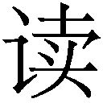・訓讀 xun4du2 シュンドゥー）と称される現象が一部に見られる。それは、漢字をそれ本来の漢語による字音とは別の漢語によって発音する、というものである。
具体例を挙げてみよう。たとえば電話番号などに記された「一」を、「七」（qi1 チー）と聞き分けやすくするために、本来の「yi1 イー」ではなく「yao1 ヤオ」と読むことがある。この「ヤオ」は、本来は「幺」と書かれる語だが、この字に「幼い」「小さい」という意味があることから、「一」という意味が派生した。「一」を「ヤオ」と発音するのはそれを応用したものであり、別の字の音読みが追加された一例である。
また、金額の「二元」（そのまま読めば、er4 yuan2 アル・ユアン）を「两（兩・両）元」（liang3 yuan2 リアン・ユアン）、さらに、くだけた場面では「两（兩・両）域（塊）」（liang3 kuai4 リアン・クアイ）と読むことがある。「二元」は文語的な表現であるために、その文字を見て発音するときは「両塊」の読みが選択されているとも言える。
ほかに、「食べる」を意味する「吃」（喫）は、北京語を元に定められた標準語である普通話（pu3tong1hua4 プートンホア）では「chi1 チー」と発音する。この字音は、この字の本来の発音からは外れたものであり、何らかの系統を異にする中国語の読みがこの字に入り込んだ結果である可能性が指摘されている。同様の現象は、臨時的にも発生する。たとえば、〝エビちゃん〟ことモデルの蛯原友里の「蛯」という日本製の漢字（国字）を、中国の人は同じ「エビ」の意味を持つ「蝦」（xia1 シア）という発音で読むことがある。
ある字を別の字の音読みで読むことは、日本でも行われた。たとえば「漁」は「ギョ」という音読みしか持たなかったが、「漁」に含まれる「捕獲」の意が動物を捕獲する際の「猟」（獵 リョウ）と類義ないし同義となり、漁獲に関して「大漁」や「漁師」などの語の場合、それぞれ「タイリョウ」「リョウシ」と発音するようになった。すると「漁」という字にも「リョウ」という読みが生じ、ついに「常用漢字表」でも認められたのである。（参照元へ戻る）
「石」を「コク」、「反」を（土地の面積や反物などで）「タン」と読むのは、それぞれ単位の「斛」や、「段」の崩し字によるとされるが、同様に音読みとして扱われ、いずれも「常用漢字表」に載っている。別の漢字の字音が他の字の読みとなる顕著な例は、律令官制に見られる。「尉」「掾」「判官」などをまとめて「丞」と同じく「ジョウ」と読ませる類である。これらは歴史用語では馴染み深いものだが、常用漢字では認められていない。
台湾の「訓読み」に使われる日本語の平仮名
英語の単位を漢字で表す場合、かつて中国や日本では、「呎」や「吋」などの漢字が新たに造られたり、既存の漢字の意味を変えて当てられたりした。その中でも「哩」は、映画のタイトル（『海底二万哩』）としても使われていたので、馴染みがある人がいるであろう。これらの字は、たとえば「呎」の場合、中国では、旁の「尺」の発音をそのままに「chi3 チー」と読まれたほか、フィートを「イギリス式の一尺」という意味で「英尺（ying1chi3インチー）」と称したことから、中国語で二音節語として「インチー」と読まれることもあった。これも、訓読みに類似する現象である。
中国における、こうした漢字の読みに関する例外的な状況は、中国語の諸方言ではいっそう豊富に観察できる。中国語学やその中の方言学では、これらを「訓読字」と呼ぶことがある。例を挙げると、中国のかつての中心部である中原地域から遥か遠く離れた広東省や香港、さらに華僑社会などで強い勢力を保つ広東語では、振り回す状態を象形文字化した「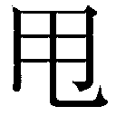」を、北京語の発音「shuai3 シュアイ」ではなく「lat1 ラッ」と発音する（抜け落ちる、外れるといった意味も加わる）。また「孖」（双子の意）は北京語の「zi1 ズー」（ただし、ほとんど使われず、普段は「双生子」などを用いる）ではなく「ma1 マー」と発音し、「美しい」という意味の「案」も北京語の「jing4 ジン」ではなく「leng3 レン」と発音する。逆にこの「レン」から、広東以外の若者も北京語風に変えて「liang4 リアン」と発音するようになってきた。
台湾では、大多数の人々がふだん閩南語を使っているが、歌謡曲などで同様の「訓読み」現象がしばしば見られる。たとえば、「香」（xiang1 シアン）を「phang ファン」と読むことがあるが、それは「香」の本字（ここでは古くに辞書や韻書などでその語にあてがわれた本来の漢字）である「芳」の読みである。
同じく台湾で、「的」が「ê エ」と読まれることがある。この「エ」には、以前から日本の平仮名「の」が当てられることさえある（「の」は、看板や包装などにこの一字を加えて用いるだけで日本製品の高級なイメージが出せるといって、大陸でも使用が目立ってきた）。ここでは、略字のような働きをする当て字として平仮名が使われているともいえ、また平仮名を台湾語で訓読みしているかのようでもある。また、「遊ぶ」という意の閩南語「thit（chhit）-thô ティッ・トー」に対する造字「医粟」（井亥は仮借に基づく）も、「訓読み」現象ともいえる。「子供」を意味する「仔」（北京語で「zi3 ズー」）は「á アー」とも読まれ、この類は地名にも見られる。
少数民族の訓読み
中国には五〇を超える少数民族が、国民の九割を超す漢民族とともに暮らしているが、それらの中には漢字を利用して民族語を表記する習慣を保持するものも複数ある。たとえば、人口の最も多いチワン族（壮族）では、タイ系の言語であるチワン語で伝承や歌謡などを表記するために、漢字が当て字として利用されたり、その形や用法を改変した「方塊チワン文字」が一部で使われている（「方塊」は「四角い」という意味で、「方塊字」は漢字そのものを意味する）。方塊チワン文字は、唐代の碑文にまでさかのぼれるとされる。そこでは、たとえば「黒」（黑 中国語でhei1 ヘイ）という字を、チワン語で「dam24 ダム」と訓読みさせることも行われている。また、会意文字の「旭」や形声文字の「葦」なども造られ、それをチワン語で「田」を意味する「na21 ナー」と読ませるなど、方塊チワン文字には日本の国字と同様に固有語を表記するための造字が数多く含まれている。
このように、漢字は、チワン族をはじめ特に南方の諸民族に受け入れられた。ペー族（白族）もそのひとつで、そこでは、やはり漢字を会意式に造字して訓読みさせることもあった。
また、同じく少数民族であるカム族（侗族）の間では、訓読みであることを示す際に、「×」「・」「△」や波線などの記号を、漢字の下部に付ける方法が採られている。たとえば、「門」をカム語で「tuo トゥオ」と発音させたい場合には、「門」の下に「△」などの記号を書き足すのである。これは、高麗や日本で漢文を読み下す際に、漢字の傍らに音読符や訓読符を書き込む手法に似ている。また、これは、かつて女真族が生み出した女真文字において、「日」や「月」の右側に点（丶）を加えることにより、その字を女真語で読むことを示したこととも似ている。ちなみに、漢字を使用していたベトナムでは、漢語の意味ではなく音読みだけを借用する場合には、漢字の右肩に「く」印を付けて明示する方法が用いられていた。
漢字は、東方と南方に伝わった一方で、北方と西方の諸民族にもいくらか伝播した。しかし、契丹文字や西夏文字などの擬似漢字が造られたり、そうした民族の言語自体が中国語に取って代わられて消滅するなどしたため、漢字の訓読みはほとんど行われなかった。ただ、西の高昌国（四六〇頃～六四〇年 現在の新疆ウイグル自治区一帯に繁栄した王国）では、七世紀初めに漢籍の訓読が行われていた。北の契丹でもそうした読み方を行っていたという記録が残されている。また元代までには、ウイグル文字で書かれたウイグル語の文章に漢字を交えたものがあり、そこにはウイグル語による訓読みが行われたと考えられるものも含まれていることが、近年の研究で明らかとなってきている。
進む漢字離れ
ここまで触れてきたように漢字文化圏つまり、漢字という文化やそれで記された諸文化を共有した世界では、かつて中原の漢民族以外の人々が、中国語の文章を読む際に、それぞれの言語によって訓読を行う試みがなされてきた。そして、その中から、漢字を訓読みするという現象も少なからず発生した。
しかし、現在の韓国では、「松島」（ ソンド）という地名を日本人に分かるようにと、「まつしま」と説明するようなことはあっても、韓国語としては、原則として訓読みは行われていない。
韓国語では、自動「車」を「 チャ」、自転「車」を「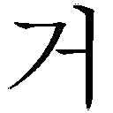 コ」と発音する（日本の俗語「チャリンコ」と関連するものであろう）が、いずれも中国で古くから両様の読み方が存在したことによるもの、つまり音読みであって訓読みではない。日本の国語辞書には、朝鮮語で狼のたぐいを指す「 ヌクテー」に「勒犬」を当てるケースもあるが（「勒」の音はヌク）、韓国では通常この二字をまとめてヌクテーとは読まない。
また、都市名についても訓読みは行われていない。首都「 ソウル」（都の意の固有語）は「京城」と書くと思う人がいるかもしれないが、それは日本での熟字訓による表記であり、韓国語ではその二字は「 キョンソン」と音読みされる（ソウルを指して用いることはほとんどなくなった）。同様の例に「大田」がある。「大田」広域市は、元は固有語で「大きい畑」を意味する「ハンバッ」という地名であり、「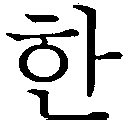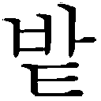」とハングルで表記されるものであった。日本統治時代にその「大きい畑」という意味から、「大田」という漢字が当てられ、そのまま漢字音で「 テージョン」と読むようになったものである。やはり、訓読みは行われない。
ソウル」（都の意の固有語）は「京城」と書くと思う人がいるかもしれないが、それは日本での熟字訓による表記であり、韓国語ではその二字は「 キョンソン」と音読みされる（ソウルを指して用いることはほとんどなくなった）。同様の例に「大田」がある。「大田」広域市は、元は固有語で「大きい畑」を意味する「ハンバッ」という地名であり、「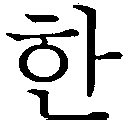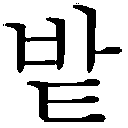」とハングルで表記されるものであった。日本統治時代にその「大きい畑」という意味から、「大田」という漢字が当てられ、そのまま漢字音で「 テージョン」と読むようになったものである。やはり、訓読みは行われない。
しかし、人名に目を移せば、訓読みが存在することが分かる。韓国で、人名に使われる漢字の中に、「石」という字の下に「乙」を書くものがかつてはよく見られた。その発音は「 トル」で、この字を使った名前では、現在、「李世」（ イ・セドル）という囲碁の棋士が有名である。これは、「石」（朝鮮漢字音は「 ソク」）と同じ意味で、固有語の「トル」を表す国字（ここでは、韓国で造られた漢字の意）であり、「トル」はこの造字の持つ訓読みである。「石」という字自体は、口頭では意味を表す固有語と字音とを合わせて「トル・ソク」と呼んでいる。この字の「乙」の部分は、ハングルでｌ（エル）の発音を表す「威」が漢字の「乙」のように変形したものである。この類の国字は、朝鮮半島を中心としてかつては数多く見られた。（参照元へ戻る）
近年、ＳＭＡＰの草彅剛が、韓国式に「 チョナンカン」と呼ばれて、韓国で人気を得た。この「ナン」と読まれている「彅」は日本製の漢字つまり国字であり、本来は字音を持たなかったものである。「ナン」という読みは、旁の「剪」の「 チョン」という字音からの変化や、ほかの字音からの類推という可能性もある。しかし、そうした慣用音的なものと見るよりも、「なぎ」にならって一種の訓読みがなされた、と見なすこともできよう。
一般化しなかった訓読み
現在、韓国では戦後の漢字政策の曲折を経て「漢字離れ」が進んでいて、「チョナンカン」ももっぱらハングル表記でしか書かれないようだ。実際、韓国の人々の間では、新生児の名を漢語ではなく固有語で命名することもだいぶ増えてきた。また、医学などの専門用語においても、漢語から、耳で聞いて分かるような固有語に言い換える提案が、国家の政策として進められており、今後は漢字がいっそう忘れられていくことであろう。
しかし、かつての朝鮮では、漢字が用いられ、三国時代の頃から訓読みも行われていた。たとえば、新羅の都であった慶州から出土した「壬申誓記石」と呼ばれる碑（六～八世紀）には、儒教を学ぶことについて誓う内容が漢字だけで記されている。それらは、「過失無誓」（意味は「過失なきことをちかう」）、「若此事失天大罪得誓」（「もしこのことをうしなうならば、天の大罪をうることをちかう」）などと、古代の朝鮮語の語順で漢字が並べられているのである。
もしこれらが正規の漢文であるなら、中国語の文法に従って、前者は「誓無過失」となるであろうし、後者でも「誓」は先頭に来るであろう。また、「失」は「此事」の前に、「得」も「天大罪」の前に置かれるなど、このような語順にはならなかったはずである。このことから、正式な漢文とは異なり、日本語と語順を等しくする古代の朝鮮語の語順そのままに漢字を配して書き、またそのままに読んだものと思われる。そして、その際には、日本で言う音読みのほかに、朝鮮の固有語に基づく訓読みも行われていたと考えられている。この訓読みを含む文体は、「誓記体」と呼ばれている。（参照元へ戻る）
西暦六六三年に日本・百済連合軍と唐・新羅連合軍との間で交わされた海戦、「白村江の戦い」の「白村江」の読みについて、日本語でそのまま音読みした「ハクソンコウ」のほかに「はくすきのえ」と習った人もいるであろう。この地名は、和語の「むら」に当たる朝鮮語の古語「スキ」に同義の漢字「村」が当てられたものであった。「百済（くだら・くたら）」のような国名も、同様の古代朝鮮語による訓読みと考えられる。『日本書紀』などには「王」に「コニキシ（コキシ）」という訓なども見られるが、やはり古代の朝鮮語である。
ほかにも訓読みの例はある。「たんぼ」のことを朝鮮語では「 ノン」と固有語で言い、漢字の「田」は「はたけ」の意味で用いた。「ノン」は漢語では「水田」とも言ったことから「」という字を造ってその語に当てた。日本人が「田」を「た（んぼ）」にあてがい、「はた（け）」のほうに「畑」（「」とも書いた）を造ったのと逆である（なお奈良時代に「はたけ」に当てた「畠」の字は、国字と思われていたが、中国製である可能性がある。拙著『国字の位相と展開』参照）。朝鮮では、「」という字は、漢字の「沓」と形が似ているところから、後に「沓」の字音「 タプ」を得て、漢字のように用いられた。このような固有語のための造字や訓読みの手法を身に付けた渡来人が、日本に住む人々に対して漢字を訓読みするという方法を伝えたのであろう。
朝鮮では、その後も「吏読」（吏吐  イドゥ 新羅の薛聡の作ともいう）、「口訣」（ クギョル 吐）、「郷札（ ヒャンチャル）」などと呼ばれる種々の方法によって、朝鮮語を固有語を含めて漢字で表記することが行われた。それらの中で訓読みも用いられたが、ついに朝鮮語の表記のために一般化するということはなかった。それらにおいては、朝鮮語の固有語が漢字で記されているために、文章の意味がほぼ分かっているのだが、個々の漢字については訓読みをしていたと推定されるものでも、古代朝鮮語での発音については確定しないものもある。
イドゥ 新羅の薛聡の作ともいう）、「口訣」（ クギョル 吐）、「郷札（ ヒャンチャル）」などと呼ばれる種々の方法によって、朝鮮語を固有語を含めて漢字で表記することが行われた。それらの中で訓読みも用いられたが、ついに朝鮮語の表記のために一般化するということはなかった。それらにおいては、朝鮮語の固有語が漢字で記されているために、文章の意味がほぼ分かっているのだが、個々の漢字については訓読みをしていたと推定されるものでも、古代朝鮮語での発音については確定しないものもある。
地名に残る訓読み
現在、韓国では、前に見た日本人の姓の場合以外に、漢字の訓読みに類することが次のようなケースで残っている。それは一つには地名である。たとえば京畿道の烏山市にある「チゴットン」（ Jigot-dong）は、漢字で「紙串洞」と書く。ここでは「串」を「コッ（ゴッ）」という固有語で読んでおり、古くから朝鮮で行われていた訓読みが残っているのである。この字は、韓国では「みさき」や「くし」という意味で、音読みは「 チョン」である。
チョン」である。
中国では「貫」の異体字としてしか使われなかったもので、「みさき」や「くし」の意で使うのは朝鮮独自の用法であった。日本でも古くから「くし」として、中国の「委」という字から「くし」を一本減らした「串」を用いているが、これも実は朝鮮から伝わった用法であった可能性がある。なお、中国では、朝鮮族の多く住む延辺（ヨンビョン）の看板に、「羊肉串店」のように「串」（中国語でchuan4 チュアン）と書くものが見られる。これは、朝鮮の伝統的な使用か、日本からの逆輸入の結果か、明らかではない。ともあれ、韓国語に訓読みの採用を唱える意見も世上に現れているが、漢字そのものが朝鮮半島では日常から消えつつある。
漢字の読みと意味を同時に覚える学習法（参照元へ戻る）
韓国では「 ハヌル・チョン」といって、「天」という字の音読み「チョン」と、「ハヌル」という天を意味する固有語とを合わせて称することで、「チョン」と読む漢字群の中から「天」の字を特定する方法がある。「ハヌル・チョン」は、この「天」という字の呼び名である（先の「石」参照）。これには、日本人が口頭で「『点数の点』ではなく、『そらの天』」と意味まで言うことで「天」という字を特定する方法と共通する部分がある。これを漢字の学習法に用いることにより、音読みと字義とを同時に覚えるのである。
ハヌル・チョン」といって、「天」という字の音読み「チョン」と、「ハヌル」という天を意味する固有語とを合わせて称することで、「チョン」と読む漢字群の中から「天」の字を特定する方法がある。「ハヌル・チョン」は、この「天」という字の呼び名である（先の「石」参照）。これには、日本人が口頭で「『点数の点』ではなく、『そらの天』」と意味まで言うことで「天」という字を特定する方法と共通する部分がある。これを漢字の学習法に用いることにより、音読みと字義とを同時に覚えるのである。
「天」と「川」は韓国の漢字音では同じ「チョン」であるが、「ネ川」（  ネチョン）と言えば、「川」の字を指す。これは、「ネ」が朝鮮語で「川」を意味することによる。また、「メ山」（
ネチョン）と言えば、「川」の字を指す。これは、「ネ」が朝鮮語で「川」を意味することによる。また、「メ山」（ 〈〉 メサン）なども同様である。これらは、それぞれ「川」や「山」という漢字の呼称となっている。なお、朝鮮語では、山を意味する固有語「メ」は、むろん訓読みとして定着することなく、漢語「サン」に次第に席巻されて現代語では古語となり、日常語としては死語に近いもののようになった。
〈〉 メサン）なども同様である。これらは、それぞれ「川」や「山」という漢字の呼称となっている。なお、朝鮮語では、山を意味する固有語「メ」は、むろん訓読みとして定着することなく、漢語「サン」に次第に席巻されて現代語では古語となり、日常語としては死語に近いもののようになった。
訓読みを示すための工夫
中国の南に位置するベトナムは、中国の越の地より南にある、南の越だとして「越南」の漢字音が国名となっている。そのように、漢字文化が地続きの中国から直接伝わり、深く根を下ろした地であった。そこでも、朝鮮と同じような方法によって漢字を覚えることがある。古くは、歴史や文芸について執筆したり、中国から導入した科挙という官吏登用試験を受験するためであったが、現在でも教養を備えたり、過去の文献を研究するといった目的のために、漢字学習が一部で行われ続けているのである。
昔からの『三千字』などという教科書を使って子供に漢字を教える家庭も残っている。そこでは、たとえば、「天」は「thiên tri ティエン・チョイ」とベトナム式の漢字音と固有語を並べて唱えるようなことが行われる。朝鮮とは逆に漢語から発音するのだが、固有語と並べるという点は共通である。ほかに、「地」は同じように「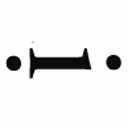at ディア・ダッ」と唱え、「三」は「tam ba タム・バー」となる。
ベトナム語は、現在では国語字（ch quc ng チュー・クオックグー。略してクオックグーともいう）というローマ字だけで綴られるようになっているので想像しがたいが、かつては字儒（ch nho チューニョー）つまり漢字（字漢 ch Hn）と、字喃（チューノム）と呼ばれる民族特有の漢字を並べて、ベトナム語の文章を記すことが文人や政治家の間で行われた（むろん一般の民衆が漢字の類をほとんど知らなかったことは、かつての中国や朝鮮などの状況と同様である）。
チュノムでは、たとえば「天上」を組み合わせた会意文字「」で、「そら」を意味するベトナムの固有語「チョイ」（前述）を表す。また、ベトナム語では、数字の「３」を先述の通り「バー」と言うが、それは字喃「」で表された。
「」は形声文字であるため（「巴」が音を表す）、音読みのようにも見えるが、これらはいずれもベトナムの固有語を表しているものである。それを含めないとしても、ベトナム語にも訓読みに相当する方法がかつては存在した、と言うことができる。ただ、漢字もチュノムも生活の中から消え、すでに古典の文字のようになっているのである（次の図）。
日越で造られた「畑」の字
たとえば、ベトナムでは固有語で「天」を意味する「チョイ」を用いて、「天」と書いて「チョイ」と訓読みさせることもあった。山のことは漢語で「sn ソン」と言うが、ベトナムの固有語では「non ノン」「núi ヌイ」と言い、それらに対しては「山」という字を訓読みさせずに形声文字「」「」を造って、それぞれの発音を表した。中国南部に住む壮族も同じ方法で、山を意味する固有語の「pia1 ピヤ」に当てて「 」という字を造った。
」という字を造った。
また、ランプのことは固有語で「デン」と言うが、チュノムでは、火偏に、「đèn デン」という音を表すために「田」を付けて、「畑」と書く。日本で「畑」は、「はた」という固有語を表すための会意文字の国字であるが、ベトナム語は、中国語に類似した単音節語であるため、形声文字としてこの字が使われたのである。奇しくも日越で同じ「畑」の字が造られたわけだが、その意味と理由は互いに異なる。漢字の歴史上、あらゆる場面で、同様の現象はいくつも見出すことができ、特に「衝突」などと呼ぶことで、転化や派生とは区別して扱う必要がある。
言語や文字において、よく使う要素は、単純化されたり省略されたりする傾向が見られる。たとえば日本では、「為」という字は、平安時代の訓点資料（第三章を参照）の頃から、初めの筆画によってであろうが「」と略記されていた。これは、「して」という読みを持つ記号であり、仮名のような役割も担った。「して」の元になっている語「す（する）」（第四章のするを参照）は、サ行変格活用になってしまうほど、つまり活用が崩れるほど、よく用いられた動詞であり、それに沿って、よく書かれたのである。「よく書かれる文字は略される」という現象の好例である。
朝鮮でも、吏吐という表記法において、「為」という字で固有語の「ハ」（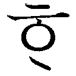 「する」の意）を表したが、口訣という表記法では、その「為」の初めの筆画だけで止めた「ソ」という形だけの字へと至った。
またベトナムのチュノムでは、「為」は日本でいう旧字体（康煕字典体）である「爲」から、やはり最初の画を抜き出し「爫」と書いて、「する」を意味する固有語の動詞「làm ラム」を表した。よく使う字はこうした字体の単純化が進むものだが、それによって訓読み専用の字であることが示されることが各国で起こったのである。
このように、訓読みを含むチュノムや漢字であったが、それらの復活を提言する人々も現れている。ローマ字の浸透したベトナムの社会に、漢字の知識を前提とするチュノムが普及する日はいつか訪れるのだろうか。
文選読み（参照元へ戻る）
先に触れた、朝鮮やベトナムで漢字の音と固有語とを並べて読むというやり方に類似した手法は、実は日本にもあった。それは「文選読み」という漢籍の受容法である。たとえば『千字文』の「天地玄黄」は、「テンチのあめつちはゲンコウとくろきなり」などと言うように、一語を音訓で順に読む。お経のように音読みだけで原文を棒読みすれば、一般的な日本人には意味が分からない。逆に、すべてを訓読みに変えてしまうと原文のリズムや押韻などの趣が消えてしまう。「文選読み」は、そのジレンマを幾らかでも解消しうる方法であった。
単語レベルでも、それに類することが行われた。宮中で儀式に用いる飾りの付いた「靴（「鞾」とも。中国北方の鮮卑語起源とされる）」は「クヮ（カ）のくつ」と平安時代以降に読まれた。今日でも、「ひにち」（日ニチ、日日）という語は「日」の字の訓読みと音読みとを合わせたもので、音訓の順序は逆だがこの類とも言えよう。「日」は一音節では聞いて意味が取りづらいために生じた混種語と思われる。
中国の古代の国名を日本で称する際には、同音のものを「すすむシン」「晋」、「はたシン」「秦」などと言い分けることもある。また中国の地名「コウ州」は、耳で聞いても混同されないように、「広い広州」、「杭の杭州」とよく言われる。こうした同音語の区別の困難を克服する試みは現在に至るまで行われている。それが可能となるのも、訓読みの身近で実用的な効用の一つである。
訓読みが、日本語の表記システムを複雑なものにしているという面は否定できない。一方で、その運用にも自由度が高いことが日本語表記の多様性を世界随一のものにしている。普段、特に意識することなく訓読みを使いこなしているのであれば、こうしたことを思い返し、漢字による表現の世界を改めて振り返るのもよいだろう。
新書を書くのは、二度目のこととなる。前回の岩波新書では、日本の漢字全体について広く触れられるように書くことを目指したが、その内容を意図したとおりに、さらに意図した以上に受けとめてくださった読者の方々が少なからずいてくださったことは、筆者にとって幸運なことであった。
光文社の森岡純一さんから、漢字の訓読みについて書いてはどうかと依頼を受け、そういう視点から漢字を改めて眺める、貴重な機会を得ることができた。
元は、古代中国語だけを表記するために生みだされた漢字を、日本の人々は、発音や文法はもちろんのこと、概念の抱き方や語の構成の仕方などに至るまで、全てが異質な言語である日本語を表記する文字として使い始めた。そこには、そもそも無理があったわけだが、日本人はそれらの摩擦に向き合いながら融合に努め、漢字と和語とのズレを逆に活かした、重層的な表現を試み、さらに独自の感性による創造を加えながら、訓読みというものを発展させてきたのである。さらに、多くの外来語に対しても、訓読みの手法は大いに力を発揮した。
そうした様々な営為の中で生み出されてきた訓読みというものは、個別の事例で圧倒的な多彩さを呈する。今まで、気になっていたことも、本書にだいぶ書くことができた。ただ、校務は殊の外忙しいもので、本書の執筆は日の出の頃におのずと集中するようになったが、改めて知ることになった事実にはたびたび目を開かされた。本書でしばしば引いた「常用漢字表」も、現在、文化審議会において改定の審議が進んでいる。訓読みの世界は、まだ完成形になったわけではなく、大きな広がりと変化の可能性を持つものなのである。
折しも、イラン古代史がご専門の春田晴郎先生より、「世界の訓読み表記」（『東海大学紀要・文学部』八六）を御恵送頂いた。訓読みは、世界中の文字に類似の現象がある中で、やはり日本のそれは群を抜いて複雑なものとなっていることが十分にうかがえた。漢字圏における比較文字学的な研究は盛んになってきており、西田龍雄先生や金文京先生に諸研究があるほか、中国でも、周有光先生『比較文字学初探』（語文出版社）や陸錫興先生『漢字伝播史』（同）などに、漢字圏の諸現象がよくまとめられている。また、日本や韓国の訓は早くから研究が重ねられてきたが、ベトナムのチュノム（字喃）に関しても、Ðào Duy Anh（陶維英）先生『Ch Nm―Ngu n Gc, Cu Tao, Din Bin』（社会科学出版社）などに、個別の事象の記述がなされている。日本の「常用漢字表」の音訓などの数量は、『図説日本語』（角川書店）などにまとめられている。この書は、日本語の姿を数値によって客観化した優れた資料集であった。
n Gc, Cu Tao, Din Bin』（社会科学出版社）などに、個別の事象の記述がなされている。日本の「常用漢字表」の音訓などの数量は、『図説日本語』（角川書店）などにまとめられている。この書は、日本語の姿を数値によって客観化した優れた資料集であった。
本書をなすに当たっては、「日本における漢字の地域差の実態解明」（博報「ことばと文化・教育」研究助成）と「各種専門分野における学術用語を表記する漢字に関する調査研究」（科学研究費補助金基盤研究（Ｃ））の成果を一部盛り込んだ。本書の内容に関心を抱いてくださり、関連する文献を読み、より専門的な内容について究明していきたいと思われる方には、小著『国字の位相と展開』（三省堂）や『日本人が創った漢字 国字の世界』（講談社 近著）などをご覧頂ければ幸いである。
最後に、韓国の成明珍さん、中国の白春岩さん、ベトナムの梁氏秋さん、ほかの皆さんには最新の各国語を教えていただき、また、光文社の森岡純一さん、古川遊也さんには、企画から編集に至るまで大変お世話になった。訓読みに、暫し対座する機会を与えてくださった御厚意にも心より御礼申し上げる。
二〇〇八年四月 晁谷の北陬にて
笹原 宏之
笹原宏之（ささはらひろゆき）
1965年東京都生まれ。早稲田大学大学院文学研究科博士後期課程単位取得、博士（文学）。現在、早稲田大学社会科学総合学術院教授。専門は、日本語学（文字・表記）。経済産業省の「JIS漢字」、法務省法制審議会の「人名用漢字」、文部科学省・文化庁文化審議会国語分科会の「常用漢字」などの制定・改正に携わる。著書に、『日本の漢字』（岩波新書）、『国字の位相と展開』（三省堂）があり、後者により、第35回金田一京助博士記念賞を受賞。
訓読みのはなし 漢字文化圏の中の日本語
2008年５月20日初版１刷発行
2009年４月20日 ４刷発行
2013年４月30日電子書籍版発行
著 者─笹原宏之
発行者─丸山弘順
装 幀─アラン・チャン
発行所─株式会社光文社
東京都文京区音羽１‐16‐６（〒112‐8011）
電 話─編集部 03（5395）8289
メール─sinsyo@kobunsha.com
®本書の全部または一部を無断で複写複製（コピー）することは、著作権法上での例外を除き、禁じられています。
©Hiroyuki Sasahara 2008